| Genus | Designation | Other names | Colour ▾ | Colour name | Description | Density | Uses | Images |
|---|---|---|---|---|---|---|---|---|
| Ebenaceae | Diospyros ebenum Koen., Diospyros melanoxylon Roxb., Diospyros mollis Griff., Diospyros mun H. Lec., Diospyros vera A. Chev. (Syn. Diospyros ferrea), Diospyros p.p. - Ébène noire d’Asie |
France : Ébène noire d’Asie. Inde : Black Ebony, Ebony. Indonésie : Kaju hitam. Royaume-Uni : Asian Black Ebony, Ebony, Ebony persimmon. Sri Lanka : Ceylon Ebony. Thaïlande : Ma klua. Viet Nam : Mun . |
Noir | Aubier blanc jaunâtre à gris rose ou brun rouge pâle. Duramen noir uniforme. Structure très fine et homogène, très décorative, parenchyme sous forme de lignes très fines sur face horizontale. | 1,10 | Articles tournés, Ébénisterie (meuble de luxe), Instrument de musique, Manche d’outil (bois résilient), Placage tranché ou scié, Sculpture, Tabletterie | Gallica | |
| Leguminosae (Fabaceae) | Dalbergia melanoxylon Guill. & Perr. - Grenadillo / Grenadille d’Afrique |
Cambodge : Kwao. Inde : Haldu. Indonésie : Lasi. Malaisie : Meraga. Myanmar : Hnaw. Philippines : Adina. Sri Lanka : Kolon. Thaïlande : Kwao. Viet Nam : Gao-vang . |
Noir | Aubier blanc jaunâtre. Duramen brun violet foncé à veines noires. Odeur caractéristique de rose. | 1,29 | Articles tournés, Boîtes à cigares, Charpente, Crayons, Emballage, caisserie, Escalier d’intérieur, Face ou contreface de contreplaqué, Intérieur de contreplaqué, Lambris, Lamellé-collé, Menuiserie intérieure, Meuble courant ou élément meublant, Parquet, Placage tranché, Tonnellerie, cuverie | Gallica | |
| Leguminosae (Fabaceae) | Dalbergia latifolia Roxb. - Rosewood, Sonokeling |
France : Palissandre des Indes. Inde : Indian rosewood, Itti, Todagatti. Indonésie : Sonokeling. Royaume-Uni : Rosewood sonokeling. |
Brun rouge | Aubier blanc clair jaunâtre. Duramen rose foncé violacé ou brun pourpre, virant au foncé en séchant. Veinage régulier de couleur violet foncé. Maillure marquée et large. Odeur aromatique du bois à l’état vert. | 0,89 | Articles tournés, Ébénisterie (meuble de luxe), Instrument de musique, Instrument de percussion, Lambris, Parquet, Placage tranché, Sculpture, Tabletterie | Gallica | |
| Ebenaceae | Diospyros celebica Bakh., Diospyros marmorata Roxb., Diospyros rumphii Bakh., Diospyros p.p. - Ébène veinée d’Asie |
France : Ébène veinée d’Asie, Ébène de Macassare. Inde : Marblewood. Indonésie : Ebony, Kaju hitam. Malaisie : Kajol martem, Macassar Ebony. Royaume-Uni : Asian Grained Ebony. |
Brun foncé | Aubier blanc jaunâtre à gris rose ou brun-rouge pâle. Duramen noir rubanné de façon irrégulière par zones et veines plus ou moins larges, avec une grande amplitude de couleur pour certaines espèces. Structure très fine et homogène, très décorative, parenchyme sous forme de lignes très fines sur face horizontale. | 1,20 | Articles tournés, Ébénisterie (meuble de luxe), Instrument de musique, Manche d’outil (bois résilient), Placage tranché ou scié, Sculpture, Tabletterie | Gallica | |
| Leguminosae (Caesalpiniaceae) | Bocoa prouacensis Aubl. (Syn. Swartzia prouacensis) - Wamara |
Guyana : Wamara, Womara. Guyane française : Boco. Suriname : Zwart parelhout. |
Noir | Aubier jaunâtre. Duramen marron très sombre à gris noir, avec de fins ramages plus clairs sur les débits tangentiels. | 1,22 | Articles tournés, Ébénisterie (meuble de luxe), Instrument de musique, Manches d’outils (bois résilient), Parquet, Placage tranché, Sculpture, Tabletterie | Gallica | |
| Leguminosae (Fabaceae) | Dalbergia spruceana Benth. - Rosewood, Para |
Brésil : Jacaranda, Jacarandá do pará, Saboarana. Portugal : Jacaranda preto. Royaume-Uni : Rosewood, Para. |
Brun rosé | Aubier blanc à blanc crème. Duramen rouge à brun rouge, marbré de brun foncé ou veiné de noir. | 1,04 | Articles tournés, Ébénisterie (meuble de luxe), Instrument de musique, Manche d’outil (bois résilient), Parquet, Placage tranché, Sculpture, Tabletterie | Gallica | |
| Lauraceae | Aniba canelilla (Kunth) Mez - Preciosa |
Brésil : Casca preciosa, Casca do maranhão, Canela do maranhão, Louro precioso, Pau precioso, Preciosa, Precioso. |
Brun foncé | Aubier jaune brunâtre. Duramen brun foncé à noirâtre. Odeur agréable. | 1,12 | Articles tournés, Ébénisterie (meuble de luxe), Instrument de musique, Menuiserie intérieure, Parquet, Sculpture, Tabletterie, Tonnellerie, cuverie | Gallica | |
| Leguminosae (Caesalpiniaceae) | Dialium cochinchinensis Pierre, Dialium indum L., Dialium platysepalum Baker, Dialium p.p. - Keranji |
Cambodge : Kralanh. Indonésie : Keranji. Malaisie : Keranji, Kuran, Sepau. Myanmar : Taung-kaye. Thaïlande : Kaki-khao, Khleng, Yi-thongbung. Viet Nam : Xoay. |
Brun jaune | Aubier blanc à jaunâtre. Duramen brun doré fonçant à la lumière, lustré. Dépôts bruns jaunes dans les vaisseaux. Maillure fine donnant un rubannage très fin. | 1,05 | Charpente, Charpente lourde, Emballage, caisserie, Fond de véhicule ou de conteneur, Manche d’outil (bois résilient), Ossature, Parquet, Parquet lourd ou industriel | Gallica | |
| Lauraceae | Eusideroxylon zwageri Teijsm. & Binn. - Billian |
Indonésie : Belian, Billian, Onglen, Ulin, Sakan. Philippines : Tambulian . |
Brun jaune | Aubier pâle jaunâtre. Duramen brun jaune à brun jaune rougeâtre, fonçant avec quelques reflets verts, lustré. Odeur citronnée. | 0,93 | Bardeau, Charpente lourde, Fond de véhicule ou de conteneur, Menuiserie extérieure, Parquet, Parquet lourd ou industriel, Placage tranché, Platelage, decking, Pont (en contact avec le sol ou l’eau), Pont (parties non en contact avec le sol ou l’eau), Revêtement extérieur, Travaux hydrauliques (en eau douce), Travaux hydrauliques (en milieu maritime), Traverse | Gallica | |
| Lauraceae | Mezilaurus ita-uba Taub., Mezilaurus lindaviana Schwake & Mez, Mezilaurus navalium Taub., Mezilaurus p.p. - Itaúba |
Brésil : Itaúba, Louro Itaúba. Guyane française : Taoub, Taoub jaune. Suriname : Kaneelhout. |
Brun jaune | Bois d’aspect huileux. La couleur varie de brun jaune à brun foncé lustré. | 0,86 | Articles tournés, Bardeau, Charpente lourde, Construction navale (bordé et pont), Construction navale (membrure), Ébénisterie (meuble de luxe), Embarcation légère, Escalier d’intérieur, Fond de véhicule ou de conteneur, Lambris, Menuiserie extérieure, Menuiserie intérieure, Meuble courant ou élément meublant, Ossature, Parquet, Placage tranché, Pont (en contact avec le sol ou l’eau), Pont (partie non en contact avec le sol ou l’eau), Poteau, Revêtement extérieur, Siège, Travaux hydrauliques (en milieu maritime), Traverse | Gallica | |
| Leguminosae (Caesalpiniaceae) | Pseudosindora palustris Symington (Syn. Copaifera palustris), Sindora leiocarpa Baker, Sindora siamensis Teijsm., Sindora sumatrana Miq., Sindora velutina Baker, Sindora p.p. - Sepetir |
Cambodge : Krakas. Indonésie : Sindur. Malaisie : Meketil, Petir, Saputi, Sepeteh, Sepetir, Sepetir nin-yaki, Sepetir pay. Philippines : Supa. Thaïlande : Krathon, Maka-tea. |
Brun clair | Aubier gris blanchâtre à brun clair ou rose beige. Duramen brun clair à brun foncé suivant l’espèce, fonçant après exposition à la lumière. Rubanage sombre. Exsudations huileuses. Odeur aromatique. | 0,64 | Ébénisterie (meuble de luxe), Face ou contreface de contreplaqué, Intérieur de contreplaqué, Lambris, Menuiserie intérieure, Meuble courant ou élément meublant, Parquet, Parquet lourd ou industriel, Placage tranché, Platelage, decking, Siège | Gallica | |
| Leguminosae (Caesalpiniaceae) | Swartzia leiocalycina Benth., Swartzia panacoco Cowan, Swartzia tomentosa DC., Swartzia p.p. - Coraçao de negro / Panacoco |
Allemagne : Wamara. Brésil : Carrapatinho, Coraçao de negro, Gombeira, Mocacahiba, Panacoco. Guyana : Agui, Banya, Wamara. Guyane française : Bois perdrix, Ferreol, Panacoco. Royaume-Uni : Ironwood, Wamara. Suriname : Gandoe, Ijzerhart, Zwart parelhout. |
Brun foncé | Les grumes sont de petits diamètres avec un large aubier jaune pâle. Bois parfait brun très foncé avec de fines stries plus claires. | 1,20 | Articles cintrés, Articles tournés, Ébénisterie (meuble de luxe), Instrument de musique, Instrument à cordes (archet), Instrument à vent, Lambris, Meuble courant ou éléments meublants, Parquet, Placage tranché, Sculpture, Tabletterie | Gallica | |
| Juglandaceae | Juglans australis Griseb., Juglans boliviana Dode, Juglans neotropica Diels, Juglans p.p. - Nogal |
Argentine : Nogal. Colombie : Nogal. Équateur : Nogal, Togte. Mexique : Nogal. Pérou : Nogal. Venezuela : Nogal. |
Brun foncé | Aubier blanc gris. Duramen brun gris sombre nuancé de rose, parfois avec de légères veines brun sombre ou brun rougeâtre (moins marquées que chez les Juglans européens ou asiatiques). | 0,61 | Articles tournés, Ébénisterie (meuble de luxe), Face ou contreface de contreplaqué, Menuiserie intérieure, Placage tranché, Sculpture, Tabletterie | Gallica | |
| Leguminosae (Fabaceae) | Millettia laurentii De Wild., Millettia stuhlmannii Taub. - Wengé |
Allemagne : Panga-panga, Wenge. Cameroun : Awoung. Congo : Wengé. France : Panga-panga, Wengé. Gabon : Awong. Mozambique : Jambiré. République démocratique du Congo : Wengé. Royaume-Uni : Panga-panga, Wengé. Tanzanie : Mpande. |
Brun foncé | Parfois coeur mou et mulotage. Bois jaune à l’état frais devenant brun foncé à brun noir après exposition à la lumière. Présence de bandes alternativement claires et foncées. | 0,87 | Articles tournés, Ébénisterie (meuble de luxe), Lambris, Menuiserie extérieure, Menuiserie intérieure, Meuble courant ou élément meublant, Parquet, Placage tranché, Revêtement extérieur, Sculpture | Gallica | |
| Anacardiaceae | Gluta beccarii Ding Hou, Gluta malayana Ding Hou, Gluta renghas L., Gluta p.p. (Syn. Melanorrhoea p.p.) - Rengas |
Inde : Gluta. Indonésie : Rengas, Tembaga. Magadascar : Torotoro. Malaisie : Jalang, Kerbau, Rengas. Myanmar : Thayet-thitsi. Thaïlande : Rakban. Viet Nam : Son. |
Brun rouge | Aubier blanc à jaune pâle. Duramen brun rouge foncé à rouge sang, veiné de sombre à noir, fonçant en séchant, lustré. Dépôts de silice. Exsudation de résine toxique. | 0,70 | Articles tournés, Ébénisterie (meuble de luxe), Escalier d’intérieur, Lambris, Parquet, Placage tranché, Sculpture, Siège, Tabletterie | Gallica | |
| Leguminosae (Fabaceae) | Pterocarpus dalbergioides DC., Pterocarpus indicus Willd. (Syn. Pterocarpus vidalianus) - Padauk Amboina |
Andaman (îles) : Andaman Padauk. Inde : Honne, Venga, Vengai. Indonésie : Amboina, Angsana, Linggua, Sonokembang. Malaisie : Sena. Myanmar : Pashu-Padauk. Papouasie-Nouvelle-Guinée : Rosewood. Philippines : Manila-Padouk, Narra, Vitali. Royaume-Uni : Padauk amboina. |
Rouge clair | Aubier jaune paille. Duramen rouge sang à figurations noirâtres ou brun miel à figurations noir rouge, fonçant à la lumière, lustré. Odeur de rose. | 0,70 | Articles tournés, Cercueil, Construction navale, Ébénisterie (meuble de luxe), Escalier d’intérieur, Face ou contreface de contreplaqué, Instrument de musique, Intérieur de contreplaqué, Lambris, Parquet, Placage tranché, Platelage, decking, Revêtement extérieur, Siège, Tabletterie | Gallica | |
| Leguminosae (Fabaceae) | Dalbergia oliveri Gamb. - Rosewood, Tamalan |
Cambodge : Neang nuon. Myanmar : Tamalan. Royaume-Uni : Rosewood tamalan. Thaïlande : Ching chan. |
Rouge foncé | Aubier blanc verdâtre à gris jaune. Duramen rouge foncé à chocolat. Dépôts résineux rougeâtres ou brun foncé. | 1,00 | Articles tournés, Ébénisterie (meuble de luxe), Instrument de musique, Instrument de percussion, Lambris, Parquet, Placage tranché, Sculpture, Tabletterie | Gallica | |
| Sapotaceae | Madhuca betis J.F.Macbr., Madhuca utilis H.J. Lam, Madhuca p.p., Mimusops elengi L., Payena leerii Kurz, Payena obscura Burck., Payena p.p. - Bitis |
Indonésie : Mahua. Malaisie : Bitis. Philippines : Betis, Maloba. |
Brun rouge | Aubier pâle jaunâtre. Duramen brun rougeâtre à rouge brun chocolat, légèrement lustré. Maillure très fine. Dépôts de silice. Odeur acide à l’état vert. | 0,85 | Charpente lourde, Manche d’outil (bois résilient), Menuiserie extérieure, Parquet lourd ou industriel, Platelage, decking, Pont (en contact avec le sol ou l’eau), Pont (parties non en contact avec le sol ou l’eau), Revêtement extérieur, Travaux hydrauliques (en eau douce), Traverse | Gallica | |
| Moraceae | Brosimum rubescens Taub. (Syn. Brosimum lanciferum) (Syn. Brosimum paraense) - Muirapiranga |
Brésil : Amapa rana, Conduru, Falso pao Brasil, Ipê, Muirapiranga, Pau rainha. Colombie : Riu sinu. Espagne : Palo de oro. Guyana : Satinwood. Guyane française : Satiné, Satiné rouge, Satiné rubané, Siton paya. Italie : Ferolia, Legno satino. Royaume-Uni : Bloodwood, Satinwood. Suriname : Doekaliballi, Satijnhout. |
Rouge foncé | Aubier très important et périssable. Le bois parfait présente souvent des veines plus sombres. | 1,10 | Articles tournés, Charpente lourde, Ébénisterie (meuble de luxe), Escalier d’intérieur, Instrument à cordes (archet), Lambris, Manche d’outil (bois résilient), Parquet, Placage tranché, Sculpture, Tabletterie | Gallica | |
| Leguminosae (Mimosaceae) | Pentaclethra macrophylla Benth. - Mubala |
Congo : Essiri. Côte d’Ivoire : Ovala. République démocratique du Congo : Mubala . |
Brun rouge | Aubier jaune pâle parfois parsemé de taches brunes. Duramen brun foncé veiné de sombre sur les faces radiales. Faces tangentielles légèrement veinées. | 0,95 | Bois de mine, Charpente lourde, Fond de véhicule ou de conteneur, Manche d’outil (bois résilient), Menuiserie extérieure, Parquet lourd ou industriel, Piquet, Platelage, decking, Pont (en contact avec le sol ou l’eau), Pont (partie non en contact avec le sol ou l’eau), Poteau, Tonnellerie, cuverie, Travaux hydrauliques (en eau douce), Traverse | Gallica | |
| Leguminosae(Caesalpiniaceae) | Dimorphandra polyandra Benoist (Syn. Dimorphandra hohenkerkii), Dimorphandra p.p. - Aiéouéko |
Brésil : Louro tamaquare. Guyana : Dakama. Guyane française : Aiéouéko. Suriname : Anjama. |
Brun | Le plus souvent, la grume est de forme irrégulière. Coeur mou fréquent. Bois jaune clair au sciage, devenant très rapidement brun clair à brun ou brun rougeâtre. Fil généralement droit, mais parfois léger contrefil irrégulier. | 0,71 | Charpente, Emballage, caisserie, Menuiserie extérieure, Menuiserie intérieure, Meuble courant ou éléments meublants | Gallica | |
| Moraceae | Artocarpus anisophyllus Miq., Artocarpus integer Merr., Artocarpus lakoocha Roxb., Artocarpus lanceifolius Roxb., Artocarpus lowii King, Artocarpus teysmannii Miq., Artocarpus p.p. - Keledang |
Inde : Aini, Anjili, Ayini, Pilapalam, Pilava, Plave chetti, Terap. Indonésie : Bsang, Keledang babi, Selangking, Tamgang, Terap. Malaisie : Lakuch, Keledang, Pudau, Selangking, Simar Naka. Myanmar : Myauklok. Papouasie-Nouvelle-Guinée : Kapiag. Philippines : Antipolo, Anubing, Kalulot, Malakubi. Royaume-Uni : Jackwood. Thaïlande : Had, Ka-ok, Khanun-pa. Viet Nam : Mit-nai. |
Brun | Bois brun jaune orangé fonçant à brun doré. Aspect lustré et rubané. Dépôts blancs souvent présents dans les pores. Dépôts de résine. | 0,80 | Allumettes, Articles tournés, Cercueils de luxe (en Malaisie), Charpente, Emballage, caisserie, Escalier d’intérieur, Face ou contreface de contreplaqué, Fond de véhicule ou de conteneur, Intérieur de contreplaqué, Lambris, Menuiserie intérieure, Meuble courant ou élément meublant, Parquet | Gallica | |
| Meliaceae | Khaya senegalensis A. Juss. - Acajou cailcédrat |
Bénin : Abgo, Acajou cailcédrat, Zunzatin. Côte d’Ivoire : Acajou cailcédrat. Guinée : Diala. Guinée-Bissau : Bissilom. Mali : Acajou bissilom. Sénégal : Bissilom. |
Brun rouge | De couleur brun rose, le bois vire au brun rouge nuancé de violet. Aspect lustré. | 0,78 | Articles tournés, Charpente lourde, Construction navale (bordé et pont), Ébénisterie (meuble de luxe), Escalier d’intérieur, Lambris, Menuiserie intérieure, Meuble courant ou éléments meublants, Parquet, Placage tranché | Gallica | |
| Irvingiaceae | Irvingia gabonensis (Aubry-Lecomte ex O’Rorke) Baill. - Andok |
Cameroun : Bwiba bambale, Ntwa, Pékié, Unyom. Congo : Eniok. Côte d’Ivoire : Boborou. Gabon : Andok. Nigéria : Ogwe, Oro. République centrafricaine : Ebi. |
Brun | Aubier jaune veiné de rouge. Duramen brun vert pâle à jaune orangé, devenant brun gris. | 0,93 | Articles tournés, Construction navale, Fond de véhicule ou de conteneur, Manche d’outil (bois résilient), Menuiserie extérieure, Menuiserie intérieure, Ossature, Parquet, Parquet lourd ou industriel, Platelage, decking | Gallica | |
| Bignoniaceae | Handroanthus heptaphylla A. Mattos (Syn. Tabebuia heptaphylla), Handroanthus impetiginosa A. Mattos (Syn. Tabebuia impetiginosa), Handroanthus serratifolia S.O. Grose (Syn. Tabebuia serratifolia), Handroanthus p.p. (Syn. Tabebuia p.p.) - Ipê |
Argentine : Lapacho. Bolivie : Ipé, Lapacho, Tajibo. Brésil : Ipê, Ipê roxo, Pau d’arco. Colombie : Canaguate, Polvillo, Roble morado. Équateur : Guayacán. Guyana : Hakia, Ironwood. Guyane française : Ébène verte, Ipé. Paraguay : Lapacho negro. Pérou : Ebano verde, Tahuari. Suriname : Groenhart. Trinité-et-Tobago : Puy, Yellow poui. Venezuela : Acapro, Araguaney, Puy. |
Brun | Certaines espèces ont un grain moyen. Le bois parfait est brun jaunâtre à brun olive sombre, parfois finement veiné. Les vaisseaux contiennent un dépôt jaune verdâtre (lapachol). | 1,04 | Articles tournés, Charpente lourde, Construction navale (bordé et pont), Ébénisterie (meuble de luxe), Escalier d’intérieur, Fond de véhicule ou de conteneur, Instrument de musique, Manche d’outil (bois résilient), Meuble courant ou élément meublant, Moulure, Parquet lourd ou industriel, Piquet, Placage tranché, Platelage, decking, Pont (en contact avec le sol ou l’eau), Pont (partie non en contact avec le sol ou l’eau), Poteau, Travaux hydrauliques (en eau douce), Travaux hydrauliques (en milieu maritime), Traverse | Gallica | |
| Leguminosae (Fabaceae) | Pterocarpus osun Craib, Pterocarpus soyauxii Taub., Pterocarpus tinctorius Welw. - Padouk d’Afrique |
Allemagne : Padauk. Angola : Tacula. Belgique : Corail. Cameroun : Mbel. Congo : Kisésé. France : Padouk d’Afrique. Gabon : Mbel. Guinée équatoriale : Palo rojo. Italie : Paduk. Nigéria : Osun. Pays-Bas : Padoek. République centrafricaine : Padouk. République démocratique du Congo : Mongola, Mukula, N’gula. Royaume-Uni : African padauk, Barwood, Camwood, Padauk. |
Rouge | Le bois, de couleur rouge vif, devient brun violacé à la lumière. | 0,79 | Articles tournés, Charpente lourde, Construction navale (bordé et pont), Construction navale (membrure), Ébénisterie (meuble de luxe), Escalier d’intérieur, Instrument de percussion, xylophone, Fond de véhicule ou de conteneur, Menuiserie extérieure, Menuiserie intérieure, Parquet, Parquet lourd ou industriel, Placage tranché, Platelage, decking, Pont (en contact avec le sol ou l’eau), Pont (non en contact avec le sol ou l’eau), Sculpture, Siège, Travaux hydrauliques (en milieu maritime), Traverse | Gallica | |
| Leguminosae (Mimosaceae) | Xylia xylocarpa Taub. (Syn. Xylia dolabriformis) (Syn. Xylia kerrii) - Pyinkado |
Cambodge : Sokram. Inde : Irul. Myanmar : Pyinkado. Thaïlande : Deng. Viet Nam : Cam-xe, Dà-tà. |
Brun rouge | Aubier brun jaune pâle à blanc rougeâtre. Duramen brun rouge veiné de sombre. Cernes distincts. Parfois, taches résineuses ou huileuses. | 0,88 | Charpente lourde, Fond de véhicule ou de conteneur, Parquet, Parquet lourd ou industriel, Platelage, decking, Pont (en contact avec le sol ou l’eau), Pont (partie non en contact avec le sol ou l’eau), Revêtement extérieur, Tonnellerie, cuverie, Travaux hydrauliques (en eau douce), Travaux hydrauliques (en milieu maritime), Traverse | Gallica | |
| Sapotaceae | Manilkara bidentata A. Chev., Manilkara huberi Ducke, Manilkara p.p. - Maçaranduba |
Brésil : Maparajuba, Maçaranduba, Paraju. Colombie : Balata, Nispero. États-Unis : Beefwood, Bullet wood, Bulletwood. Guyana : Balata, Beefwood, Bulletwood. Guyane française : Balata franc, Balata gomme, Balata rouge, Bois abeille. Panama : Nispero. Pérou : Pamashto, Quinilla colorada. Royaume-Uni : Bulletwood. Suriname : Bolletrie. Venezuela : Balata, Massarandu. |
Brun rouge | Bois brun rouge sombre nuancé de violacé. | 1,10 | Articles cintrés, Articles tournés, Bardeau, Charpente lourde, Construction navale (bordé et pont), Escalier d’intérieur, Instrument à cordes (archet), Manche d’outil (bois résilient), Meuble courant ou élément meublant, Ossature, Parquet lourd ou industriel, Piquet, Placage tranché, Platelage, decking, Pont (en contact avec le sol ou l’eau), Pont (partie non en contact avec le sol ou l’eau), Poteau, Sculpture, Travaux hydrauliques (en eau douce et en eau de mer), Traverse | Gallica | |
| Meliaceae | Entandrophragma candollei Harms - Kosipo |
Allemagne : Kosipo-mahogany. Angola : Lifuco. Cameroun : Atom-assié. Congo : Diamuni. Côte d’Ivoire : Kosipo. Gabon : Étom. Ghana : Penkwa-akowaa, Kosipo. Nigéria : Heavy sapele, Omu. République centrafricaine : Bakanga. République démocratique du Congo : Impompo. Royaume-Uni : Omu. |
Brun rouge | Bois brun rouge à reflets violacés, fonce à la lumière. Dépôts de résine noire dans les pores. Aspect rubané sur quartier. | 0,69 | Bardeau, Charpente, Ébénisterie (meuble de luxe), Escalier d’intérieur, Face ou contreface de contreplaqué, Lambris, Lamellé-collé, Menuiserie extérieure, Menuiserie intérieure, Meuble courant ou élément meublant, Parquet, Placage tranché, Revêtement extérieur | Gallica | |
| Leguminosae (Caesalpiniaceae) | Peltogyne catingae Ducke, Peltogyne confertiflora Benth., Peltogyne lecointei Ducke, Peltogyne maranhensis Huber, Peltogyne paniculata Benth., Peltogyne porphyrocardia Benth., Peltogyne pubescens Benth., Peltogyne venosa Benth., Peltogyne p.p. - Pau roxo |
Allemagne : Violettholz. Brésil : Guarabu, Ipe roxo, Jatobazinho, Pau roxo, Pau violeta, Roxinho. Colombie : Tananeo. États-Unis : Amaranth. Guyana : Koroborelli, Merawayana, Purpleheart, Saka. Guyane française : Amarante, Bois violet. Mexique : Palo de rosa, Palo morado. Panama : Nazanero. Suriname : Dastan, Kocolorelli, Malako, Purperhart. Venezuela : Morado, Zapatero. |
Violet | Bois violet virant au brun foncé à la lumière. Présence possible de tensions internes. | 0,87 | Articles tournés, Cercueil, Charpente lourde, Construction navale (bordé et pont), Construction navale (membrure), Ébénisterie (meuble de luxe), Escalier d’intérieur, Fond de véhicule ou de conteneur, Instrument de musique, Lambris, Lamellé-collé, Manche d’outil (bois résilient), Menuiserie extérieure, Menuiserie intérieure, Meuble courant ou élément meublant, Parquet, Placage tranché, Revêtement extérieur, Sculpture, Tabletterie | Gallica | |
| Leguminosae (Caesalpiniaceae) | Dialium aubrevillei Pellegr., Dialium bipindense Harms, Dialium dinklagei Harms, Dialium pachyphyllum Harms, Dialium p.p. - Éyoum |
Cameroun : M’fan, Mfang. Congo : Penzi. Côte d’Ivoire : Afambéou, Kofina. Gabon : Éyoum, Omvong. Guinée-Bissau : Pau veludo. Libéria : Ciania, Gbelle-flu, Gia kaba. Mozambique : Ziba. République démocratique du Congo : Bongola, Kasudu. |
Brun rouge | Bois brun rosé clair à brun ou brun rouge parfois très foncé. | 0,94 | Articles tournés, Fond de véhicule ou de conteneur, Menuiserie extérieure, Ossature, Parquet, Parquet lourd ou industriel, Placage tranché, Platelage, decking, Pont (en contact avec le sol ou l’eau), Revêtement extérieur, Travaux hydrauliques (en eau douce), Traverse | Gallica | |
| Leguminosae (Caesalpiniaceae) | Cynometra ananta Hutch. & Dalziel, Cynometra hankei Harms, Cynometra p.p. - Nganga |
Cameroun : Nganga, Ekop-nganga. Guinée équatoriale : Nkokom. République démocratique du Congo : Baraka, Wehu. |
Brun rouge | Aubier brun rose à jaune. Duramen brun rouge foncé, non uniforme. Contrefil irrégulier et plus ou moins prononcé. | 0,96 | Articles tournés, Charpente lourde, Parquet lourd ou industriel, Platelage, decking, Pont (en contact avec le sol ou l’eau), Pont (partie non en contact avec le sol ou l’eau), Revêtement extérieur, Travaux hydrauliques (en eau douce), Travaux hydrauliques (en milieu maritime), Traverse | Gallica | |
| Myristicaceae | Staudtia kamerunensis Warb. (Syn. Staudtia gabonensis) (Syn. Staudtia stipitata) - Niové |
Angola : Menga-menga. Cameroun : M’bonda. Congo : Menga-menga. Gabon : M’boun, Niové. Guinée équatoriale : Bokapi. Nigéria : Oropa. République centrafricaine : Molanga. République démocratique du Congo : Kamashi, Susumenga. |
Brun rouge | Bois parfait brun jaune orangé à brun rouge veiné de sombre. Surface occasionellement huileuse. Fil parfois ondulé. | 0,88 | Articles tournés, Charpente lourde, Construction navale (bordé et pont), Construction navale (membrure), Ébénisterie (meuble de luxe), Escalier d’intérieur, Fond de véhicule ou de conteneur, Lambris, Menuiserie extérieure, Menuiserie intérieure, Meuble courant ou élément meublant, Parquet, Parquet lourd ou industriel, Placage tranché, Platelage, decking, Pont (en contact avec le sol ou l’eau), Pont (partie non en contact avec le sol ou l’eau), Revêtement extérieur, Siège, Travaux hydrauliques (en eau douce), Traverse | Gallica | |
| Proteaceae | Roupala brasiliensis Klotzsch - Catucaém / Louro faia |
Brésil : Carvalho, Carvalho do brazil, Catucaém, Louro faia. Costa Rica : Danto carne. Équateur : Roble. Panama : Arbol carne. Venezuela : Chaparro. |
Brun | Aubier brun clair rougeâtre. Duramen brun rougeatre à brun foncé. Maillure très prononcée et caractéristique en raison de la présence de très gros rayons ligneux. | 0,70 | Articles tournés, Ébénisterie (meuble de luxe), Parquet, Placage tranché, Sculpture, Tabletterie | Gallica | |
| Dipterocarpaceae | Cotylelobium burckii Heim, Cotylelobium lanceolatum Craib, Cotylelobium melanoxylon Pierre, Cotylelobium p.p., Vatica maingayi Dyer, Vatica mangachapoi Blco., Vatica rassak Blume, Vatica p.p. - Resak |
Cambodge : Chramas. Indonésie : Resak. Malaisie : Resak. Myanmar : Pan-thya. Philippines : Narig. Thaïlande : Pau cham. Viet Nam : Tâu. |
Brun rouge | Aubier plus ou moins différencié selon les espèces, blanchâtre à jaunâtre. Duramen jaune pâle à l’état vert, virant au brun rouge chocolat ou brun à reflets verdâtres. Maillure bien apparente. Exsudations de résine. Dépôts de silice. | 0,80 | Charpente, Construction navale, Embarcation légère, Escalier d’intérieur, Lamellé-collé, Menuiserie extérieure, Menuiserie intérieure, Ossature, Parquet, Platelage, decking | Gallica | |
| Leguminosae (Fabaceae) | Pterocarpus erinaceus Poir. - Vêne |
Burkina Faso : Goni, Guenina. Guinée : Ven. Guinée équatoriale : Pau sangue. Guinée-Bissau : Pau sangue. Mali : Goni, Ven, Vêne. Nigéria : Vene. Sénégal : Ven, Vène. |
Brun jaune | L’écorce est marquée de filets rouges et exsude un liquide résineux rouge. Bois brun jaunâtre veiné de brun violacé. | 0,89 | Articles tournés, Charpente lourde, Construction navale (bordé et pont), Construction navale (membrure), Ébénisterie (meuble de luxe), Escalier d’intérieur, Menuiserie intérieure, Parquet, Placage tranché, Sculpture, Siège | Gallica | |
| Moraceae | Clarisia racemosa Ruiz & Pav. - Guariúba |
Bolivie : Murure. Brésil : Oiticica amarela, Oiticica da mata, Guariúba. Colombie : Aji, Guariuba. Équateur : Mata palo, Moral bobo, Pituca. Pérou : Capinuri, Guariuba, Murere, Turupay amarillo . |
Brun | Bois jaune devenant brun lustré à la lumière. Aspect rubané sur quartier. | 0,69 | Charpente lourde, Ébénisterie (meuble de luxe), Embarcation légère, Escalier d’intérieur, Face ou contreface de contreplaqué, Fond de véhicule ou de conteneur, Lambris, Lamellé-collé, Manche d’outil (bois résilient), Menuiserie extérieure, Menuiserie intérieure, Meuble courant ou élément meublant, Moulure, Ossature, Parquet, Placage tranché, Pont (partie non en contact avec le sol ou l’eau), Revêtement extérieur | Gallica | |
| Ochnaceae | Lophira alata Banks (Syn. Lophira procera) - Azobé |
Allemagne : Bongossi, Bonkole. Bénin : Éki. Cameroun : Bongossi, Okoka. Congo : Bonkolé. Côte d’Ivoire : Azobé. Gabon : Akoga. Ghana : Kakus. Guinée équatoriale : Akoga. Nigéria : Eba, Ekki. République centrafricaine : Kofyo. Royaume-Uni : Ekki. Sierra Leone : Hendui. |
Rouge foncé | Bois rouge foncé à brun violacé. Zone intermédiaire entre l’aubier et le bois parfait. Dépôts blancs dans les pores. | 1,06 | Charpente lourde, Escalier d’intérieur, Fond de véhicule ou de conteneur, Ossature, Parquet lourd ou industriel, Piquet, Platelage, decking, Pont (en contact avec le sol ou l’eau), Pont (parties non en contact avec le sol ou l’eau), Poteaux, Tonnellerie, cuverie, Travaux hydrauliques (en eau douce), Travaux hydrauliques (en milieu maritime), Traverse | Gallica | |
| Leguminosae (Caesalpiniaceae) | Vouacapoua americana Aubl., Vouacapoua macropetala Sandw., Vouacapoua pallidior Ducke - Wacapou |
Brésil : Acapu, Ritangueira. États-Unis : Partridgewood. Guyana : Sara, Sarabebeballi, Tatbu. Guyane française : Bois perdrix, Bounaati, Épi de blé, Wacapou. Royaume-Uni : Tatbu. Suriname : Bruinhart, Wakapoe. |
Brun foncé | Bois brun foncé, avec de fines lignes brun clair qui lui donnent un aspect attractif. Présence de tensions internes. | 0,92 | Articles tournés, Charpente lourde, Construction navale (bordé et pont), Ébénisterie (meuble de luxe), Escalier d’intérieur, Lambris, Menuiserie extérieure, Menuiserie intérieure, Meuble courant ou élément meublant, Parquet, Placage tranché, Pont (en contact avec le sol ou l’eau), Pont (partie non en contact avec le sol ou l’eau), Poteau, Tabletterie, Travaux hydrauliques (en milieu maritime), Traverse | Gallica | |
| Meliaceae | Guarea thompsonii Sprague - Bossé foncé |
Allemagne : Bosse, Diambi. Côte d’Ivoire : Mutigbanaye. Gabon : Ossoung. Ghana : Guarea. Nigéria : Obobo nekwi. Kenya : Bolon. République centrafricaine : N’zombou. République démocratique du Congo : Diambi. Royaume-Uni : Black guarea. |
Brun orangé | Le fil du Bossé foncé est irrégulier, mais il est plus droit que celui du Bossé clair. Aspect légèrement moiré. | 0,68 | Boîte à cigares, Charpente, Construction navale (bordé et pont), Ébénisterie (meuble de luxe), Face ou contreface de contreplaqué, Intérieur de contreplaqué, Lambris, Menuiserie extérieure, Menuiserie intérieure, Meuble courant ou éléments meublants, Parquet, Placage tranché, Revêtement extérieur, Volet roulant | Gallica | |
| Irvingiaceae | Irvingia grandifolia Engl. - Olène |
Cameroun : Andongwé, Andok ngoe, Bwibanjoe, Géndo, Ikomkpa, Solia. Congo : Liar. Gabon : Olène. Nigéria : Akhuekhue, Apepere. République centrafricaine : Sombo. République démocratique du Congo : Mukessu, Ntesi. |
Brun foncé | Aubier brun jaune. Duramen présentant différentes nuances de brun teintées de gris. | 0,92 | Articles tournés, Construction navale, Fond de véhicule ou de conteneur, Manche d’outil (bois résilient), Menuiserie extérieure, Menuiserie intérieure, Ossature, Parquet, Parquet lourd ou industriel | Gallica | |
| Leguminosae (Fabaceae) | Andira coriacea Pulle (Syn. Andira wachenheimi), Andira inermis DC. (Syn. Andira jamaicensis), Andira parviflora Ducke, Andira p.p. - Andira |
Brésil : Acapurana, Almendro de rio, Andira, Angelim, Andira uchi. Colombie : Congo. Costa Rica : Mocha colorado. Équateur : Moton. Guyana : Bat seed, Koraro. Guyane française : Saint-Martin rouge. Mexique : Maquilla. Pérou : Quinillo colorado. Suriname : Roode kabbes. Trinité-et-Tobago : Angelin. Venezuela : Sarrapio montanero. |
Brun rouge | Bois brun rosé à brun rouge. Des bandes claires de parenchyme donnent au bois un aspect figuré. Présence de tensions internes et de « coups de vent » (fractures internes du bois). | 0,86 | Articles tournés, Charpente lourde, Ébénisterie (meuble de luxe), Fond de véhicule ou de conteneur, Menuiserie extérieure, Menuiserie intérieure, Meuble courant ou éléments meublants, Ossature, Parquet lourd ou industriel, Placage tranché, Platelage, decking, Pont (parties non en contact avec le sol ou l’eau), Revêtement extérieur | Gallica | |
| Meliaceae | Carapa guianensis Aubl. (Syn. Carapa nicaraguensis), Carapa procera DC., Carapa p.p. - Andiroba |
Brésil : Andiroba, Andiroba branca, Andiroba vermelha, Andirobeira, Carapa, Nandiroba. Colombie : Güino, Masabalo, Mazabalo. Costa Rica : Cedro bateo, Cedro macho. Équateur : Figueroa, Tangare. Guyana : Crabwood. Guyane française : Carapa. Honduras : Bastard mahogany. Panama : Cedro bateo. Paraguay : Andiroba. Pérou : Andiroba. Suriname : Krappa. Trinité-et-Tobago : Crappo. Venezuela : Carapa, Masabalo . |
Brun rouge | La flottabilité est variable : l’Andiroba branca (varzea) flotte, alors que l’Andiroba vermelha (terra firme) ne flotte pas. | 0,67 | Articles tournés, Bardeau, Charpente, Construction navale (bordé et pont), Ébénisterie (meuble de luxe), Emballage, caisserie, Escalier d’intérieur, Face ou contreface de contreplaqué, Lambris, Lamellé-collé, Menuiserie extérieure, Menuiserie intérieure, Meuble courant ou éléments meublants, Moulure, Parquet, Placage tranché, Revêtement extérieur, Siège | Gallica | |
| Dipterocarpaceae | Shorea albida Symington - Alan / Alan-Batu |
Brunei : Alan-batu, Alan-bunga. Malaisie : Alan-batu, Alan-bunga, Alan-meraka, Alan-paya, Meraka, Red selangan, Selangan merah. |
Brun rouge | Coeur mou possible. Parfois présence de lignes blanches (canaux de résine) dans le bois. | 0,80 | Construction navale (membrure), Fond de véhicule ou de conteneur, Lambris, Menuiserie extérieure, Menuiserie intérieure, Meuble courant ou éléments meublants, Parquet, Parquet lourd ou industriel, Revêtement extérieur | Gallica | |
| Leguminosae (Mimosaceae) | Cylicodiscus gabunensis Harms - Okan |
Cameroun : Adoum, African greenheart, Bokoka. Congo : N’duma. Côte d’Ivoire : Bouémon, Bouemon. Gabon : Édoum, Oduma. Ghana : Adadua, Benya, Denya. Nigéria : Okan. |
Brun rouge | Odeur très désagréable à l’état vert. Le bois parfait brun jaune devient brun rouge à l’air. | 0,91 | Articles tournés, Charpente lourde, Fond de véhicule ou de conteneur, Parquet, Parquet lourd ou industriel, Platelage, decking, Pont (en contact avec le sol ou l’eau), Pont (partie non en contact avec le sol ou l’eau), Poteau, Sculpture, Travaux hydrauliques (en milieu maritime), Traverse | Gallica | |
| Myrtaceae | Eucalyptus marginata Donn - Jarrah |
Australie : Jarrah. |
Brun rouge | Aubier étroit. Bois brun rouge à brun foncé, parfois contrefilé, ondulé ou ronceux. | 0,82 | Charpente lourde, Construction navale (bordé et pont), Ébénisterie (meuble de luxe), Escalier d’intérieur, Fond de véhicule ou de conteneur, Lambris, Lamellé-collé, Moulure, Parquet, Parquet lourd ou industriel, Platelage, decking, Pont (en contact avec le sol ou l’eau), Pont (partie non en contact avec le sol ou l’eau), Poteau, Revêtement extérieur, Travaux hydrauliques (en eau douce), Traverse | Gallica | |
| Humiriaceae | Sacoglottis gabonensis Urb. - Ozouga |
Cameroun : Bedwa, Bidou, Bodoua, Édoué, Éloué. Congo : Niuka. Côte d’Ivoire : Akouapo, Tougbi. Gabon : Essoua, Ozouga. Ghana : Ozouga. Nigéria : Atala, Tala, Ugu. Sierra Leone : Kpowuli. |
Brun rouge | Grumes souvent sinueuses. Bois rouge violacé à brun foncé. | 0,89 | Charpente lourde, Fond de véhicule ou de conteneur, Ossature, Parquet, Parquet lourd ou industriel, Pont (en contact avec le sol ou l’eau), Pont (partie non en contact avec le sol ou l’eau), Poteau, Travaux hydrauliques (en eau douce), Traverse | Gallica | |
| Sapotaceae | Letestua durissima Lecomte - Congotali |
Congo : Congotali. Gabon : Kong-afane . |
Brun rouge | Présence possible de « coups de vent » (fractures internes du bois). | 1,10 | Charpente lourde, Fond de véhicule ou de conteneur, Parquet lourd ou industriel, Platelage, decking, Pont (en contact avec le sol ou l’eau), Pont (parties non en contact avec le sol ou l’eau), Travaux hydrauliques (en eau douce), Traverse | Gallica | |
| Leguminosae (Caesalpiniaceae) | Copaifera duckei Dwyer, Copaifera martii Hayne, Copaifera multijuga Hayne, Copaifera officinalis L., Copaifera reticulata Ducke, Copaifera p.p. - Copaiba |
Argentine : Timbo-y-ata. Belize : Copaiba. Bolivie : Copaibo. Brésil : Copahyba, Copaiba, Copaibarana, Pau d’oleo. Colombie : Canime. Guyana : Balsam, Maram. Guyane française : Panchimouti. Panama : Cabino blanco, Camiba, Caniva, Cupay. Pérou : Copaiba. Suriname : Hoepelhout, Koepajoewa. Venezuela : Aceite, Cabimo. |
Brun rouge | La couleur de bois parfait varie de rose à brun rouge avec des veines cuivrées. Exsudation de résine. Parfois fil ondulé. | 0,50 | Articles tournés, Charpente, Coffrage, Emballage, caisserie, Face ou contreface de contreplaqué, Intérieur de contreplaqué, Lambris, Menuiserie intérieure, Meuble courant ou éléments meublants, Moulure, Panneau latté, Panneau de fibres ou de particules, Parquet, Placage tranché, Siège | Gallica | |
| Leguminosae (Fabaceae) | Haplormosia monophylla Harms - Idéwa |
Côte d’Ivoire : Dinankrohia, Larme. Gabon : Idéwa . Libéria : Black gum. Nigéria : Akoti. |
Brun | Aubier blanc jaunâtre. Duramen jaunâtre à brun chocolat. Maillure fine. | 0,87 | Articles tournés, Construction navale (bordé et pont), Ébénisterie (meuble de luxe), Escalier d’intérieur, Face ou contreface de contreplaqué, Lambris, Manche d’outil (bois résilient), Menuiserie extérieure, Menuiserie intérieure, Parquet, Placage tranché, Sculpture, Tabletterie | Gallica | |
| Calophyllaceae (Clusiaceae) | Mammea africana Sabine - Oboto |
Bénin : Ologbomodu. Cameroun : Abotzok. Congo : Libu, M’bossi. Côte d’Ivoire : Djimbo. Gabon : Ébornzork, Oboto. Ghana : Bom pegya. Nigéria : Ologbomidu. République centrafricaine : Bolélé, Bolele. République démocratique du Congo : Bokoli, Boliki, M’boza. |
Brun rouge | Bois rouge foncé à brun rouge violacé. Petites taches de résine brunes parfois assez nombreuses. | 0,75 | Charpente, Lambris, Menuiserie extérieure, Menuiserie intérieure, Meuble courant ou élément meublant, Parquet, Platelage, decking, Pont (partie non en contact avec le sol ou l’eau) | Gallica | |
| Vochysiaceae | Erisma nitidum DC., Erisma uncinatum Warm., Erisma p.p. - Cambara |
Brésil : Cambara, Cedrinho, Jaboty, Quaruba tinga, Quaruba vermelha, Quarubarana. Guyane française : Felli kouali, Jaboty, Manonti kouali. Pérou : Cambara. Suriname : Singri-kwari. Venezuela : Mureillo. |
Brun clair | Présence occasionnelle de tensions internes. Bois brun rosé plus ou moins foncé, parfois nuancé de rouge ou de violacé. | 0,60 | Charpente, Coffrage, Emballage, caisserie, Face ou contreface de contreplaqué, Intérieur de contreplaqué, Lambris, Lamellé-collé, Menuiserie extérieure, Menuiserie intérieure, Meuble courant ou éléments meublants, Moulure, Ossature, Panneau latté, Placage tranché, Pont (parties non en contact avec le sol ou l’eau), Revêtement extérieur, Tabletterie | Gallica | |
| Sapotaceae | Manilkara mabokeensis Aubrev., Manilkara obovata J.H. Hemsl., Manilkara p.p. - Monghinza |
Côte d’Ivoire : Sisina. Gabon : Adzacon-aboga. Nigéria : Oko uku. République centrafricaine : Monghinza, Monginja. Royaume-Uni : African Pearwood. |
Brun rouge | Aubier rosâtre. Duramen brun rouge soutenu. | 0,98 | Articles cintrés, Articles tournés, Construction navale (bordé et pont), Escalier d’intérieur, Instrument à cordes (archet), Menuiserie extérieure, Menuiserie intérieure, Parquet, Parquet lourd ou industriel, Placage tranché, Platelage, decking, Pont (en contact avec le sol ou l’eau), Pont (partie non en contact avec le sol ou l’eau), Revêtement extérieur, Travaux hydrauliques (en eau douce), Travaux hydrauliques (en milieu maritime), Traverse | Gallica | |
| Leguminosae (Caesalpiniaceae) | Bobgunnia fistuloides J.H. Kirkbr. & Wiersema (Syn. Swartzia fistuloides) - Pao rosa |
Allemagne : Padauk. Angola : Tacula. Belgique : Corail. Cameroun : Mbel. Congo : Kisésé. France : Padouk d’Afrique. Gabon : Mbel. Guinée équatoriale : Palo rojo. Italie : Paduk. Nigéria : Osun. Pays-Bas : Padoek. République centrafricaine : Padouk. République démocratique du Congo : Mongola, Mukula, N’gula. Royaume-Uni : African padauk, Barwood, Camwood, Padauk. |
Rouge clair | Bois blanc rosâtre à rouge clair, veiné de brun rouge. | 1,02 | Articles tournés, Ébénisterie (meuble de luxe), Instrument de percussion, Manche d’outil (bois résilient), Placage tranché, Résistant à un ou plusieurs acides, Sculpture, Tonnellerie, cuverie | Gallica | |
| Myrtaceae | Eucalyptus diversicolor F. Muell. - Karri |
Australie : Karri. |
Brun rosé | La fourchette de diamètre mentionnée correspond à des bois issus des forêts naturelles. Les bois provenant des forêts secondaires et des plantations ont des diamètres inférieurs. | 0,90 | Charpente lourde, Ébénisterie (meuble de luxe), Escalier d’intérieur, Fond de véhicule ou de conteneur, Lambris, Lamellé-collé, Moulure, Parquet, Parquet lourd ou industriel, Pont (partie non en contact avec le sol ou l’eau), Revêtement extérieur | Gallica | |
| Leguminosae (Caesalpiniaceae) | Koompassia malaccensis Maing. - Kempas |
Indonésie : Menggeris, Toemaling. Malaisie : Impas, Kempas, Mengris. Papouasie-Nouvelle-Guinée : Kempas. Thaïlande : Yuan. |
Brun rouge | Bois rose à l’état frais devenant rouge orange clair à brun foncé avec de fines lignes brun jaune. Présence fréquente de phloème inclus sous forme de bandes concentriques. | 0,88 | Articles tournés, Charpente lourde, Fond de véhicule ou de conteneur, Menuiserie extérieure, Parquet, Parquet lourd ou industriel, Placage tranché, Tonnellerie, cuverie, Traverse | Gallica | |
| Meliaceae | Toona calantas Merr. & Rolfe, Toona ciliata M. Roem. (Syn. Cedrela toona), Toona sureni Merr. (Syn. Toona febrifuga) - Suren |
Australie : Red cedar. Cambodge : Chomcha. Inde : Limpagna, Malarveppu, Mandurike Santhanavembu, Toon. Indonésie : Suren, Surian. Malaisie : Surea-bawang. Myanmar : Petsut yetama, Thitkado. Papouasie-Nouvelle-Guinée : Red cedar. Philippines : Calantas. Thaïlande : Toon, Yomham. Viet Nam : Xoan moc. |
Brun rouge | Aubier rose à blanc gris jaunâtre. Duramen rouge brun, rubanage sombre occasionnel. Cernes apparents. Exsudations de résine. Odeur aromatique. | 0,50 | Boîte à cigares, Construction navale, Embarcation légère, Face ou contreface de contreplaqué, Instrument de musique, Intérieur de contreplaqué, Menuiserie intérieure, Meuble courant ou élément meublant, Moulure, Placage tranché | Gallica | |
| Leguminosae (Caesalpiniaceae) | Dicorynia guianensis Amsh., Dicorynia paraensis Benth. - Basralocus |
Brésil : Angelica, Angelica do para, Tapaiuna. Guyane française : Angélique, Basralocus. Suriname : Barakaroeballi, Basralokus. |
Brun | Le bois devient brun mordoré ou brun violacé à l’air. Parfois, présence de tensions internes. | 0,79 | Articles tournés, Charpente lourde, Construction navale (bordé et pont), Ébénisterie (meuble de luxe), Escalier d’intérieur, Face ou contreface de contreplaqué, Fond de véhicule ou de conteneur, Lambris, Menuiserie extérieure, Menuiserie intérieure, Meuble courant ou éléments meublants, Parquet, Parquet lourd ou industriel, Placage tranché, Pont (parties non en contact avec le sol ou l’eau), Sculpture, Tonnellerie, cuverie, Travaux hydrauliques (en milieu maritime) | Gallica | |
| Lythraceae (Sonneratiaceae) | Duabanga grandiflora Walp., Duabanga moluccana Blume - Duabanga |
Inde : Lampati ramdala. Indonésie : Kalam. Malaisie : Magas, Magasawith, Phay-sung, Tagahas. Myanmar : Myaukngo. Papouasie-Nouvelle-Guinée : Duabanga. Philippines : Loktob. Thaïlande : Linkwai, Phay. Viet Nam : Phay. |
Brun clair | Bois jaune clair à brun clair. | 0,50 | Allumettes, Articles tournés, Emballage, caisserie, Face ou contreface de contreplaqué, Flotteur, Intérieur de contreplaqué, Lambris, Menuiserie intérieure, Meuble courant ou élément meublant, Moulure, Panneau latté, Panneau de fibres ou de particules, Placage tranché, Pâte à papier | Gallica | |
| Irvingiaceae | Desbordesia insignis Pierre (Syn. Desbordesia glaucescens) (Syn. Desbordesia pierreana) - Alep |
Cameroun : Omang. Congo : Benga. Gabon : Alep. Nigéria : Kowo. République démocratique du Congo : Benga. |
Brun jaune | Grumes à débiter rapidement après abattage (fentes de séchage). Le bois vire au brun foncé à l’air. Il est plus ou moins veiné de sombre. | 1,05 | Charpente lourde, Fond de véhicule ou de conteneur, Platelage, decking, Pont (en contact avec le sol ou l’eau), Pont (parties non en contact avec le sol ou l’eau), Poteaux, Travaux hydrauliques (en eau douce), Traverse | Gallica | |
| Sapindaceae | Pometia pinnata J.R. Forst. & G. Forst. (Syn. Pometia tomentosa) - Kasai |
Îles Salomon : Taun. Indonésie : Matoa. Malaisie : Kasai, Sibu. Papouasie-Nouvelle-Guinée : Taun. Philippines : Agupanga, Malugai, Tungaui. Viet Nam : Truong. |
Brun rouge | Bois rouge clair devenant brun rouge à la lumière. Aspect lustré. Fil parfois ondulé. Présence de résine brunâtre. | 0,72 | Emballage, caisserie, Face ou contreface de contreplaqué, Intérieur de contreplaqué, Lambris, Menuiserie extérieure, Menuiserie intérieure, Meuble courant ou élément meublant, Moulure, Parquet, Tonnellerie, cuverie | Gallica | |
| Leguminosae (Caesalpiniaceae) | Mora excelsa Benth., Mora paraensis Ducke, Mora p.p. - Mora |
Brésil : Pracuúba, Pracuúba branca, Pracuúba vermelha. Colombie : Nato, Nato rojo. Équateur : Nato. Guyana : Mora, Morabukea. Guyane française : Mora. Panama : Alcornoque. Suriname : Mora, Moraboekea. Trinité-et-Tobago : Mora. Venezuela : Mora. |
Brun rouge | Bois parfait brun rosâtre à brun rouge avec parfois de fines veines sombres. | 1,03 | Articles tournés, Charpente lourde, Manche d’outil (bois résilient), Parquet lourd ou industriel, Platelage, decking, Pont (en contact avec le sol ou l’eau), Pont (partie non en contact avec le sol ou l’eau), Poteau, Travaux hydrauliques (en eau douce), Traverse | Gallica | |
| Leguminosae (Caesalpiniaceae) | Eperua falcata Aubl., Eperua jenmanii Oliv., Eperua rubiginosa Miq., Eperua p.p. - Wallaba |
Argentine : Timbo-y-alta. Brésil : Apa, Apazeiro, Copahyba, Copaibarana, Espadeira. Guyana : Ituri wallaba, Wallaba. Guyane française : Bioudou, Wapa. Panama : Cabino blanco, Camiba. Suriname : Bijlhout, Walaba. Venezuela : Palo machete, Uapa. |
Brun rouge | Bois brun rouge à brun foncé, nuancé de veines plus claires. Tensions internes très importantes. Présence de veines de résine. Odeur désagréable du bois à l’état vert. | 0,88 | Bardeau, Charpente lourde, Menuiserie extérieure, Meuble courant ou élément meublant, Ossature, Parquet lourd ou industriel, Piquet, Platelage, decking, Pont (en contact avec le sol ou l’eau), Pont (partie non en contact avec le sol ou l’eau), Poteau, Revêtement extérieur, Tonnellerie, cuverie, Travaux hydrauliques (en eau douce), Traverse | Gallica | |
| Leguminosae (Caesalpiniaceae) | Microberlinia bisulcata A. Chev., Microberlinia brazzavillensis A. Chev. - Zingana |
Allemagne : Zebrano. Cameroun : Allen élé, Amouk. Gabon : Zingana. Royaume-Uni : Zebrano, Zebrawood. |
Brun clair | Bois brun jaune à brun clair, veiné de brun foncé. Contrefil parfois accusé. | 0,79 | Articles tournés, Ébénisterie (meuble de luxe), Lambris, Manches d’outils (bois résilient), Meuble courant ou élément meublant, Ossature, Placage tranché, Tabletterie | Gallica | |
| Anacardiaceae | Astronium fraxinifolium Schott, Astronium graveolens Jacq. (Syn. Astronium gracile), Astronium lecointei Ducke, Astronium p.p. - Muiracatiara |
Brésil : Aderno-preto, Baracatiara, Gonçaleiro, Gonçalo-alvez, Guarita, Guaribu-preto, Mirueira, Muiracatiara, Sanguessugueira. Colombie : Gusanero. Équateur : Guasango. Mexique : Palo de culebra. Paraguay : Urunday-para. Venezuela : Gateado. |
Brun foncé | Bois brun rosâtre à brun jaune, devenant brun rouge à brun foncé, avec des veines brun noir très irrégulièrement espacées. | 0,80 | Articles tournés, Charpente lourde, Ébénisterie (meuble de luxe), Instrument de musique, Lambris, Manche d’outil (bois résilient), Menuiserie extérieure, Menuiserie intérieure, Parquet, Placage tranché, Platelage, decking, Sculpture, Tabletterie | Gallica | |
| Phyllanthaceae (Euphorbiaceae) | Oldfieldia africana Benth. & Hook. - Vésámbata |
Congo : Vésámbata. Côte d’Ivoire : Dantoué. Libéria : Kpaoli, Pauli. Sierra Leone : Kpaoli, Pauli, Turtosa. |
Brun foncé | Aubier rouge pâle. Duramen brun rouge souvent nuancé de violet. | 0,91 | Articles cintrés, Articles tournés, Construction navale (bordé et pont), Escalier d’intérieur, Instrument à cordes (archet), Menuiserie extérieure, Menuiserie intérieure, Parquet, Parquet lourd ou industriel, Platelage, decking, Pont (en contact avec le sol ou l’eau), Pont (partie non en contact avec le sol ou l’eau), Revêtement extérieur, Travaux hydrauliques (en eau douce), Travaux hydrauliques (en milieu maritime), Traverse | Gallica | |
| Leguminosae (Caesalpiniaceae) | Copaifera mildbraedii Harms, Copaifera salikounda Heckel, Copaifera p.p. - Étimoé |
Bénin : Akpaflo. Cameroun : Essak. Congo : Yama. Côte d’Ivoire : Étimoé. Gabon : Andem-éviné, Anzèm noir. Ghana : Entedua. Nigéria : Ovbialeke. République centrafricaine : Bilombi, Yama. République démocratique du Congo : Bofélélé. |
Brun rouge | Présence de résine. Ce bois est souvent moiré. Fil droit ou ondulé. | 0,71 | Bardeau, Charpente, Ébénisterie (meuble de luxe), Escalier d’intérieur, Face ou contreface de contreplaqué, Intérieur de contreplaqué, Lambris, Lamellé-collé, Menuiserie extérieure, Menuiserie intérieure, Meuble courant ou élément meublant, Moulure, Ossature, Parquet, Placage tranché, Revêtement extérieur | Gallica | |
| Sapotaceae | Tieghemella africana Pierre - Douka |
Cameroun : Douka. Congo : N’duka. Gabon : Douka. Guinée équatoriale : Okola. |
Brun rouge | Aubier blanchâtre à rose pâle. Duramen brun rose clair à brun rose foncé ou rouge clair. Parfois, présence de veines pâles peu distinctes. Souvent moiré. | 0,72 | Articles tournés, Charpente, Construction navale (bordé et pont), Construction navale (membrure), Ébénisterie (meuble de luxe), Escalier d’intérieur, Face ou contreface de contreplaqué, Fond de véhicule ou de conteneur, Intérieur de contreplaqué, Lambris, Menuiserie extérieure, Menuiserie intérieure, Meuble courant ou élément meublant, Parquet, Placage tranché, Platelage, decking, Pont (partie non en contact avec le sol ou l’eau), Revêtement extérieur, Sculpture | Gallica | |
| Leguminosae (Caesalpiniaceae) | Hymenaea courbaril L., Hymenaea intermedia Ducke, Hymenaea oblongifolia Huber (Syn. Hymenaea davisii), Hymenaea p.p. - Jatobá |
Brésil : Jatai, Jatobá, Jutai, Jutai açu, Jutai roxo. Colombie : Algarrobo. France : Courbaril, Jatoba. Guadeloupe : Copalier. Guyana : Locust. Guyane française : Courbaril. Honduras : Guapinol. Pérou : Azucar-huayo, Yutubanco. Royaume-Uni : Locust. Suriname : Rode lokus. Venezuela : Algarrobo. |
Brun rouge | Bois ayant de légères tensions internes. La couleur peut varier de brun violet ou brun orangé à brun rouge légèrement veiné. | 0,94 | Articles cintrés, Articles tournés, Construction navale (membrure), Ébénisterie (meuble de luxe), Escalier d’intérieur, Fond de véhicule ou de conteneur, Instrument de musique, Lambris, Manche d’outil (bois résilient), Menuiserie extérieure, Meuble courant ou élément meublant, Moulure, Ossature, Parquet, Parquet lourd ou industriel, Placage tranché, Platelage, decking, Revêtement extérieur, Sculpture, Tabletterie, Tonnellerie, cuverie | Gallica | |
| Dilleniaceae | Dillenia aurea Sm., Dillenia excelsa Gilg, Dillenia eximia Miq., Dillenia grandifolia Wall., Dillenia indica L., Dillenia ovata Wall., Dillenia papuana Martelli, Dillenia p.p. - Simpoh |
Îles Salomon : Simpoh. Indonésie : Simpur jangkang. Malaisie : Simpoh. Myanmar : Zinbyun. Papouasie-Nouvelle-Guinée : Dillenia. |
Brun rouge | Aubier brun jaune clair à brun rouge. Duramen brun rouge à violet, fonçant à brun chocolat. Maillure décorative sur quartier. Dépôts de silice. | 0,71 | Charpente, Escalier d’intérieur, Face ou contreface de contreplaqué, Intérieur de contreplaqué, Lambris, Menuiserie intérieure, Moulure, Panneau latté, Parquet, Placage tranché | Gallica | |
| Dipterocarpaceae | Hopea ferrea Laness., Hopea forbesii Slooten, Hopea helferi Brandis, Hopea nutans Ridl., Hopea p.p. - Giam |
Cameroun : Lumbandjii. Gabon : Ghéombi, Ngom. |
Brun rosé | Bois brun rose à reflets cuivrés, fonçant à la lumière. Présence possible de « coups de vent » (fractures internes du bois). Canaux résinifères, principalement dans l’aubier. | 0,72 | Charpente, Coffrage, Emballage, caisserie, Face ou contreface de contreplaqué, Intérieur de contreplaqué, Menuiserie extérieure, Menuiserie intérieure, Meuble courant ou élément meublant, Ossature, Parquet, Placage tranché | Gallica | |
| Moraceae | Maclura tinctoria D. Don (Syn. Chlorophora tinctoria) - Moral |
Argentine : Tatayiva-saiyu. Bolivie : Amarillo. Brésil : Amarello, Taiuva. Colombie : Dinde, Palo amarillo. Costa Rica : Palo de mora. Mexique : Barossa, Moral. Trinité-et-Tobago : Bois d’orange. |
Brun | Aubier blanc grisâtre à beige clair. Duramen jaune devenant brun doré à marron foncé. Maillure fine bien distincte. Figuration rubannée sur les faces radiales due au contrefil. | 0,88 | Articles tournés, Charpente lourde, Construction navale (bordé et pont), Escalier d’intérieur, Fond de véhicule ou de conteneur, Manche d’outil (bois résilient), Menuiserie extérieure, Meuble courant ou élément meublant, Parquet, Parquet lourd ou industriel, Placage tranché, Platelage, decking, Pont (en contact avec le sol ou l’eau), Revêtement extérieur, Travaux hydrauliques (en eau douce), Traverse | Gallica | |
| Leguminosae (Caesalpiniaceae) | Julbernardia seretii Troupin (Syn. Berlinia seretii) - Alumbi |
Gabon : Mbangandourgou. Guinée équatoriale : Nfum. République démocratique du Congo : Alumbi, Bokoko, Kua, Mubangu . |
Brun rouge | Aubier jaune. Duramen brun rouge, parfois veiné de brun ou jaune. | 0,74 | Charpente, Charpente lourde, Ébénisterie (meuble de luxe), Escalier d’intérieur, Lambris, Menuiserie intérieure, Meuble courant ou éléments meublants, Ossature, Parquet, Placage tranché | Gallica | |
| Leguminosae (Fabaceae) | Myroxylon balsamum Harms (Syn. Myroxylon toluiferum), Myroxylon peruiferum L. - Balsamo |
Argentine : Incienso, Quina-quina. Belgique : Balsam. Brésil : Cabreuva, Cabreuva vermelha, Oleo vermelho. Colombie : Myroxylon. Équateur : Sandalo. Honduras : Balsamo. Mexique : Arbol del bálsamo, Bálsamo. Paraguay : Incienso. Pérou : Bálsamo de tolu, Bálsamo de perú, Estoraque, Quina-quina. |
Brun rouge | Aubier blanc crème. Duramen rouge violacé à brun rouge fonçant à la lumière, avec des veines plus claires. Structure étagée très fine perceptible. Taches résineuses sporadiques. Légère odeur agréable au sciage. | 0,95 | Articles tournés, Construction navale, Ébénisterie (meuble de luxe), Escalier d’intérieur, Lambris, Menuiserie extérieure, Menuiserie intérieure, Moulure, Parquet, Placage tranché | Gallica | |
| Sapotaceae | Tieghemella heckelii Pierre - Makoré |
Côte d’Ivoire : Makoré. Ghana : Abacu, Baku. |
Brun rouge | Aubier blanchâtre à rosé. Duramen brun rose foncé à brun rouge sombre, avec parfois des reflets violacés. Souvent moiré. | 0,67 | Articles tournés, Charpente, Construction navale (bordé et pont), Construction navale (membrure), Ébénisterie (meuble de luxe), Escalier d’intérieur, Face ou contreface de contreplaqué, Fond de véhicule ou de conteneur, Intérieur de contreplaqué, Lambris, Menuiserie extérieure, Menuiserie intérieure, Meuble courant ou élément meublant, Parquet, Placage tranché, Platelage, decking, Pont (partie non en contact avec le sol ou l’eau), Revêtement extérieur, Sculpture | Gallica | |
| Malvaceae (Tiliaceae) | Pentace burmanica Kurz, Pentace triptera Mast., Pentace p.p. - Melunak |
Cambodge : Tassit. Indonésie : Pinang. Laos : Sisiet. Malaisie : Baru-baran, Melunak, Takalis. Myanmar : Kashit, Thitka. Thaïlande : Daeng-samaet, Sisiat, Tongsuk. Viet Nam : Nghien. |
Brun rouge | Aubier plus ou moins différencié selon les espèces, jaune paille à brun rouge pâle. Duramen brun rouge doré fonçant à la lumière. Maillure fine, rubanage transversal. Bandes de parenchyme zigzagantes, faces radiales moirées. | 0,62 | Cercueil, Escalier d’intérieur, Face ou contreface de contreplaqué, Intérieur de contreplaqué, Lambris, Menuiserie intérieure, Meuble courant ou élément meublant, Ossature, Panneau latté, Parquet, Placage tranché | Gallica | |
| Leguminosae (Mimosaceae) | Newtonia leucocarpa Gilbert & Boutique (Syn. Piptadenia leucocarpa) - Ossimiale |
Cameroun : Nom atui. Gabon : Ossimiale. Guinée équatoriale : Atui, Eseng. |
Brun rouge | Aubier jaunâtre à brun clair. Duramen rose argenté à brun rougeâtre, avec parfois un veinage plus sombre. | 0,71 | Articles tournés, Charpente, Coffrage, Emballage, caisserie, Embarcation légère, Escalier d’intérieur, Face ou contreface de contreplaqué, Fond de véhicule ou de conteneur, Intérieur de contreplaqué, Manche d’outil (bois résilient), Menuiserie intérieure, Meuble courant ou élément meublant, Ossature, Panneau latté, Parquet, Pâte à papier, Sculpture, Tonnellerie, cuverie | Gallica | |
| Meliaceae | Lovoa swynnertonii Baker, Lovoa trichilioides Harms (Syn. Lovoa klaineana) - Dibétou |
Cameroun : Bibolo. Congo : Bosso. Côte d’Ivoire : Dibétou. États-Unis : Congowood, Tigerwood. France : Dibétou, Noyer d’Afrique, Noyer du Gabon. Gabon : Éyan. Ghana : African walnut, Dubini-biri, Mpengwa. Guinée équatoriale : Embero, M’bero, N’vero. Kenya : Mukongoro. Nigéria : Anamenila, Apopo, Sida. Ouganda : Mukusu, Nkoba. République centrafricaine : Boyo kondi. République démocratique du Congo : Bombulu, Lifaki muindu. Royaume-Uni : African walnut, Tigerwood. Sierra Leone : Wnaimei. |
Brun | Roulures et parfois coeur mou dans certaines grumes. Bois brun jaune ou brun gris strié ou veiné de noir prenant un éclat doré. Dépôts noirs dans les pores. | 0,53 | Articles tournés, Charpente, Ébénisterie (meuble de luxe), Face ou contreface de contreplaqué, Lambris, Menuiserie extérieure, Menuiserie intérieure, Meuble courant ou élément meublant, Placage tranché, Siège | Gallica | |
| Picrodendraceae (Euphorbiaceae) | Androstachys johnsonii Prain - Mecrussé |
Magadascar : Merana, Ombafo. Mozambique : Mecrussé, Mezimbite. Portugal : Cimbirre. Zimbabwe : Lebombo ironwood. |
Brun | Aubier blanc-jaunâtre. Duramen brun clair à brun rougeâtre, souvent veiné de sombre. | 0,93 | Articles tournés, Charpente lourde, Parquet, Parquet lourd ou industriel, Platelage, decking, Pont (en contact avec le sol ou l’eau), Pont (partie non en contact avec le sol ou l’eau), Revêtement extérieur, Travaux hydrauliques (en eau douce), Travaux hydrauliques (en milieu maritime) | Gallica | |
| Burseraceae | Protium p.p. (Amérique du Sud) - Kurokaï / Breu |
Bolivie : Carano. Brésil : Almecega, Aruru, Breu. Colombie : Carano, Anime, Currucay. Équateur : Anime blanco. Guyana : Haiawa, Porokay, Kurokay, Kurokaï. Guyane française : Tinguimoni ; Encens blanc, gris ou rouge. Pérou : Copal caspi. Suriname : Tinguimoni. Venezuela : Carano, Anime, Azucarito. |
Brun clair | Bois parfait brun clair à brun rosâtre. | 0,64 | Coffrage, Emballage, caisserie, Face ou contreface de contreplaqué, Intérieur de contreplaqué, Lambris, Meuble courant ou élément meublant, Panneau latté, Panneau de fibres ou de particules | Gallica | |
| Leguminosae (Caesalpiniaceae) | Brachystegia cynometroides Harms, Brachystegia eurycoma Harms, Brachystegia leonensis Burtt Davy & Hutch., Brachystegia nigerica Hoyle & A.P.D. Jones, Brachystegia p.p. - Naga |
Cameroun : Ékop-naga. Côte d’Ivoire : Méblo. France : Naga. Gabon : Mendou. Libéria : Tebako. Nigéria : Okwen. Royaume-Uni : Okwen. Sierra Leone : Bogdei. |
Brun clair | Bois parfait brun clair à brun rouge avec des reflets violacés. Fil parfois irrégulier. | 0,62 | Charpente, Ébénisterie (meuble de luxe), Escalier d’intérieur, Face ou contreface de contreplaqué, Lambris, Lamellé-collé, Menuiserie intérieure, Meuble courant ou élément meublant, Ossature, Parquet, Placage tranché, Tabletterie | Gallica | |
| Juglandaceae | Juglans regia L. - Noyer |
Allemagne : Nussbaum, Walnuss. Espagne : Nogal. France : Noyer. Italie : Noce commune. Royaume-Uni : European walnut, Walnut. |
Brun | Le bois parfait est brun, tirant plus ou moins sur le brun jaune ou brun rosâtre, parfois grisâtre, souvent veiné de sombre. | 0,66 | Articles tournés, Ébénisterie (meuble de luxe), Menuiserie intérieure, Placage tranché, Sculpture | Gallica | |
| Leguminosae (Caesalpiniaceae) | Intsia bijuga Kuntze (Syn. Afzelia bijuga) (Syn. Intsia amboinensis) (Syn. Intsia retusa), Intsia palembanica Miq. (Syn. Intsia backeri), Intsia p.p. - Merbau |
Australie : Kwilau. Chine : Kalabau. Fidji : Vesi. Indonésie : Merbau. Magadascar : Hintsy. Malaisie : Merbau, Mirabow. Nouvelle-Calédonie : Kohu. Papouasie-Nouvelle-Guinée : Kwila. Philippines : Ipil, Ipil laut. Thaïlande : Lum-paw. Viet Nam : Gonuoc. |
Brun | Bois parfait brun orangé, devenant brun rouge sombre ou brun foncé à la lumière. Présence de dépôts sulfureux jaunes. | 0,83 | Articles tournés, Charpente lourde, Construction navale (bordé et pont), Ébénisterie (meuble de luxe), Emballage, caisserie, Escalier d’intérieur, Fond de véhicule ou de conteneur, Instrument de musique, Lambris, Manche d’outil (bois résilient), Menuiserie extérieure, Menuiserie intérieure, Meuble courant ou élément meublant, Parquet, Parquet lourd ou industriel, Placage tranché, Platelage, decking, Pont (en contact avec le sol ou l’eau), Pont (partie non en contact avec le sol ou l’eau), Poteau, Sculpture, Tabletterie, Tonnellerie, cuverie, Travaux hydrauliques (en eau douce), Traverse | Gallica | |
| Malvaceae (Sterculiaceae) | Sterculia rhinopetala K. Schum. - Lotofa |
Cameroun : N’kanang. Côte d’Ivoire : Lotofa. Ghana : Wawabima. Nigéria : Aye. Royaume-Uni : Brown sterculia. |
Brun rouge | 0,84 | Charpente lourde, Escalier d’intérieur, Face ou contreface de contreplaqué, Intérieur de contreplaqué, Lambris, Menuiserie intérieure, Meuble courant ou élément meublant, Ossature, Parquet, Placage tranché, Siège | Gallica | ||
| Lauraceae | Chlorocardium rodiei Rohwer, H.G. Richt. & Van der Werff (Syn. Ocotea rodiei). - Greenheart |
Brésil : Bibiru, Itauba branca. Guyana : Bibiru, Demerara, Greenheart. Suriname : Beeberoe, Groenhart, Sipiroe. Venezuela Viruviru. |
Brun jaune | Duramen brun jaune à brun olive sombre, parfois veiné irrégulièrement de sombre. | 0,97 | Articles tournés, Charpente lourde, Construction navale, Parquet lourd ou industriel, Platelage, decking, Pont (en contact avec le sol ou l’eau), Pont (partie non en contact avec le sol ou l’eau), Poteau, Tonnellerie, cuverie, Travaux hydrauliques (en eau douce), Travaux hydrauliques (en milieu maritime), Traverse | Gallica | |
| Dipterocarpaceae | Hopea apiculata Symington, Hopea dryobalanoides Miq., Hopea griffithii Kurz, Hopea lowii Dyer, Hopea mengarawan Miq., Hopea nervosa King, Hopea odorata Roxb., Hopea papuana Diels, Hopea pierrei Hance, Hopea sangal Korth., Hopea sulcata Symington, Hopea p.p. - Merawan |
Allemagne : Merawan. Cambodge : Koki. France : Merawan. Indonésie : Cengal, Merawan, Sengal. Italie : Merawan. Malaisie : Gagil, Merawan, Selangan, Selangan-Kasha, Sengal. Myanmar : Thingan. Papouasie-Nouvelle-Guinée : Light hopea. Philippines : Manggachapoi, Manggachapui. Royaume-Uni : Merawan. Thaïlande : Takhina, Takien. Viet Nam : Sao . |
Brun jaune | Certaines grumes ne sont pas flottables. Bois brun jaune à brun rouge chocolat, rubanage sombre occasionnel. Le grain est fin à moyen. | 0,70 | Articles tournés, Charpente, Escalier d’intérieur, Face ou contreface de contreplaqué, Fond de véhicule ou de conteneur, Intérieur de contreplaqué, Menuiserie extérieure, Menuiserie intérieure, Meuble courant ou élément meublant, Ossature, Panneau de fibres ou de particules, Parquet, Tonnellerie, cuverie, Traverse | Gallica | |
| Leguminosae (Mimosaceae) | Dinizia excelsa Ducke - Angelim vermelho |
Brésil : Angelim falso, Angelim ferro, Angelim pedra, Angelim vermelho, Faveira preta, Faveira grande, Gurupa. Guyana :Parakwa. |
Brun rouge | Coeur du bois très souvent creux. Odeur désagréable à l’état vert ou sur les bois réhumidifiés. | 1,07 | Charpente lourde, Construction navale (bordé et pont), Escalier d’intérieur, Fond de véhicule ou de conteneur, Parquet lourd ou industriel, Pont (en contact avec le sol ou l’eau), Pont (parties non en contact avec le sol ou l’eau), Poteaux, Traverse | Gallica | |
| Meliaceae | Entandrophragma cylindricum Sprague - Sapelli |
Allemagne : Sapelli-mahogany. Angola : Undianuno. Cameroun : Assié, Assié-sapelli, Sapelli. Congo : Undianuno. Côte d’Ivoire : Aboudikro. Gabon : Undianuno. Ghana : Penkwa, Sapelewood. Nigéria : Sapele. Ouganda : Muyovu. République centrafricaine : M’boyo. République démocratique du Congo : Lifaki. Royaume-Uni : Sapele . |
Brun rouge | Bois brun rosâtre à brun rouge cuivré. Odeur de cèdre. Présence possible de roulures et de « grains d’orge » qui correspondent à des sillons longitudinaux en forme de grains d’orge apparaissant sur le roulant des grumes, le plus souvent invisibles sous l’écorce. Ces défauts sont liés à un disfonctionnement de croissance des arbres. | 0,69 | Charpente, Cercueil, Construction navale (bordé et pont), Ébénisterie (meuble de luxe), Escalier d’intérieur, Face ou contreface de contreplaqué, Intérieur de contreplaqué, Lambris, Menuiserie extérieure, Menuiserie intérieure, Meuble courant ou élément meublant, Parquet, Placage tranché | Gallica | |
| Leguminosae (Caesalpiniaceae) | Copaifera religiosa J. Leonard - Anzèm / Nténé |
Cameroun : Anzèm. Congo : N’téné. Gabon : Anzèm rouge. Guinée équatoriale : Andem, Azem. République démocratique du Congo : Bengi . |
Brun rouge | Aubier blanchâtre à rose pâle. Duramen brun rose clair à brun rougeâtre cuivré, veiné de sombre. Exsudation de résine fréquente. | 0,58 | Emballage, caisserie, Face ou contreface de contreplaqué, Intérieur de contreplaqué, Lambris, Menuiserie intérieure, Meuble courant ou éléments meublants, Moulure, Ossature, Panneau latté, Parquet | Gallica | |
| Sapotaceae | Chrysophyllum africanum Baker (Syn. Gambeya africana), Chrysophyllum lacourtianum De Wild. (Syn. Gambeya lacourtiana), Chrysophyllum perpulchrum Mildbr., Chrysophyllum subnudum Baker (Syn. Gambeya subnuda), Chrysophyllum p.p. (Syn. Gambeya p.p.) - Longhi |
Cameroun : Abam. Congo : Longhi. Côte d’Ivoire : Akatio, Anandio, Aninguéri, Aninguéri rouge. Gabon : M’bébame. Ghana : Akasa. Nigéria : Ekpiro, Osan. République démocratique du Congo : Bopambu. |
Brun jaune | Bois parfait brun rosâtre virant au brun jaune à l’air. | 0,75 | Articles tournés, Charpente, Ébénisterie (meuble de luxe), Escalier d’intérieur, Face ou contreface de contreplaqué, Lambris, Lamellé-collé, Menuiserie intérieure, Meuble courant ou élément meublant, Ossature, Parquet, Placage tranché, Sculpture, Siège, Tabletterie | Gallica | |
| Leguminosae (Fabaceae) | Bowdichia nitida Benth., Bowdichia virgilioides Kunth, Bowdichia p.p., Diplotropis martiusii Benth., Diplotropis purpurea Amsh. (Syn. Bowdichia guianensis) (Syn. Diplotropis guianensis), Diplotropis p.p. - Sucupira preta |
Brésil : Cutiuba, Macaniba, Sapupira, Sucupira, Sucupira amarela, Sucupira preta. Colombie : Arenillo, Zapan negro. Guyana : Tatabu. Guyane française : Baaka kiabici, Coeur dehorsa. Pérou : Chontaquiro, Huasai-caspi. Suriname : Zwarte kabbes. Venezuela : Alcornoque, Congrio. |
Brun foncé | Bois brun foncé à brun rougeâtre, strié de fines veines plus claires. | 0,91 | Articles tournés, Charpente lourde, Construction navale (bordé et pont), Ébénisterie (meuble de luxe), Escalier d’intérieur, Fond de véhicule ou de conteneur, Lambris, Menuiserie extérieure, Menuiserie intérieure, Meuble courant ou élément meublant, Ossature, Parquet, Placage tranché, Pont (partie non en contact avec le sol ou l’eau), Revêtement extérieur, Tabletterie | Gallica | |
| Moraceae | Bagassa guianensis Aubl. (Syn. Bagassa tilifolia) - Tatajuba |
Brésil : Amarelao, Bagaceira, Tatajuba. Équateur : Moral. Guyana : Cow-wood, Fustic. Guyane française : Bagasse, Bois jaune, Kaw oudou, Odoun, Tatajuba. Paraguay : Tatagva. Uruguay : Guyabi amarillo. Royaume-Uni : Bagasse. Suriname : Jawahedan, Kaw-oedoe. Venezuela : Mora amarillo. |
Brun jaune | Fraîchement coupé, le bois parfait est jaune. Avec le temps, il devient brun jaune à brun foncé. | 0,80 | Articles tournés, Charpente lourde, Construction navale (bordé et pont), Construction navale (membrure), Ébénisterie (meuble de luxe), Escalier d’intérieur, Fond de véhicule ou de conteneur, Lambris, Menuiserie extérieure, Menuiserie intérieure, Meuble courant ou élément meublant, Moulure, Ossature, Parquet, Placage tranché, Platelage, decking, Pont (en contact avec le sol ou l’eau), Pont (partie non en contact avec le sol ou l’eau), Revêtement extérieur, Travaux hydrauliques (en eau douce), Traverse | Gallica | |
| Olacaceae | Coula edulis Baill. - Coula |
Cameroun : Éwomè, Ewome, Ngouma. Congo : Kumunu. Côte d’Ivoire : Coula, Attia. Gabon : Éhoumé. Nigéria : Ivianlegbe. |
Brun rouge | Bois brun violacé veiné de brun sombre. Fil parfois ondulé. | 1,01 | Charpente lourde, Fond de véhicule ou de conteneur, Parquet lourd ou industriel, Piquet, Placage tranché, Platelage, decking, Poteaux, Traverse | Gallica | |
| Leguminosae (Fabaceae) | Vatairea guianensis Aubl., Vatairea paraensis Ducke, Vataireopsis speciosa Ducke, Vataireopsis surinamensis Lima, Vatairea p.p. - Fava amargosa |
Brésil : Angelim amargoso, Aracui, Aracuy, Fava amarela, Fava amargosa, Faveira amarela, Faveira amargosa, Faveira bolacha. Colombie : Guerra, Maqui. France : Faveira amargosa. Guyana : Arisauro, Bastard purpleheart, Bauwaua. Guyane française : Inkassa, Yongo. Honduras : Amargo. Panama : Amargo. Pérou : Mari-mari, Marupa del bajo. Suriname : Arisoeroe, Gele kabbes, Geli-kabissi. |
Brun jaune | Bois jaune vif à l’état frais, devenant brun jaune à brun foncé ou brun rouge. | 0,75 | Charpente lourde, Coffrage, Ébénisterie (meuble de luxe), Escalier d’intérieur, Lambris, Menuiserie extérieure, Menuiserie intérieure, Panneau latté, Parquet, Parquet lourd ou industriel, Placage tranché | Gallica | |
| Lecythidaceae | Allantoma integrifolia S.A. Mori, Cariniana estrellensis Kuntze, Cariniana legalis Kuntze (Syn. Cariniana brasiliensis), Cariniana p.p. - Jequitiba |
Bolivie : Yesquero. Brésil : Estopeiro, Jequitiba, Jequitiba branco, Jequitiba rosa, Jequitiba vermelho. |
Brun clair | Bois parfait brun clair à brun rosâtre. Présence possible de canaux traumatiques en lignes. | 0,64 | Articles tournés, Coffrage, Ébénisterie (meuble de luxe), Face ou contreface de contreplaqué, Intérieur de contreplaqué, Lambris, Lamellé-collé, Menuiserie extérieure, Menuiserie intérieure, Meuble courant ou élément meublant, Moulure, Parquet, Placage tranché | Gallica | |
| Leguminosae (Fabaceae) | Dipteryx alata Vogel, Dipteryx micrantha Harms, Dipteryx odorata Willd. (Syn. Coumarouna odorata), Dipteryx polyphylla Huber, Dipteryx p.p. - Cumaru |
Bolivie : Almendrillo. Brésil : Champanha, Cumaru, Cumaru ferro, Cumarurana. Colombie : Sarrapia. Costa Rica : Almendro. Guyana : Kumaru, Tonka bean. Guyane française : Gaïac de cayenne, Tonka. Honduras : Ebo. Pérou : Charapilla, Shihuahuaco amarillo. Suriname : Koemaroe, Tonka. Venezuela : Sarrapia. |
Brun rouge | Odeur du bois désagréable à l’état vert. La couleur du bois parfait varie de brun jaune à brun rougeâtre avec de fines veines sombres. | 1,07 | Articles tournés, Charpente lourde, Construction navale (bordé et pont), Manche d’outil (bois résilient), Ossature, Parquet lourd ou industriel, Piquet, Placage tranché, Platelage, decking, Pont (en contact avec le sol ou l’eau), Pont (partie non en contact avec le sol ou l’eau), Poteau, Tonnellerie, cuverie, Travaux hydrauliques (en eau douce), Travaux hydrauliques (en milieu maritime), Traverse | Gallica | |
| Malvaceae (Sterculiaceae) | Nesogordonia fouassieri Capuron, Nesogordonia kabingaensis Capuron, Nesogordonia leplaei Capuron, Nesogordonia papaverifera Capuron (Syn. Cistanthera papaverifera) - Kotibé |
Angola : Kissinhungo. Cameroun : Ovoé, Ovoui. Côte d’Ivoire : Kotibé. Gabon : Aborbora. Ghana : Danta. Nigéria : Otutu. République centrafricaine : Naouya. République démocratique du Congo : Kondofindo. Royaume-Uni : Danta. |
Brun rouge | Bois brun pâle à brun rougeâtre. Aspect rubané et moiré sur quartier. Parfois, présence de très petits noeuds. | 0,76 | Articles tournés, Ébénisterie (meuble de luxe), Escalier d’intérieur, Face ou contreface de contreplaqué, Fond de véhicule ou de conteneur, Intérieur de contreplaqué, Lambris, Manche d’outil (bois résilient), Menuiserie extérieure, Menuiserie intérieure, Meuble courant ou élément meublant, Parquet, Placage tranché, Sculpture | Gallica | |
| Malvaceae (Sterculiaceae) | Heritiera javanica Kosterm. (Syn. Tarrietia javanica), Heritiera simplicifolia Kosterm. (Syn. Tarrietia simplicifolia), Heritiera sumatrana Kosterm. (Syn. Tarrietia sumatrana), Heritiera p.p. (Syn. Tarrietia p.p.) - Mengkulang |
Cambodge : Don chêm. Indonésie : Palapi, Teraling. Laos : Mai hao, Mai po hao. Malaisie : Kembang, Mengkulang. Myanmar : Kanzo. Philippines : Lumbayau. Thaïlande : Chumprak. Viet Nam : Huynh. |
Brun | La couleur du bois varie de rose pâle à rouge, fonçant à brun rouge à la lumière. Maillure nettemment visible. | 0,68 | Charpente, Coffrage, Ébénisterie (meuble de luxe), Emballage, caisserie, Face ou contreface de contreplaqué, Intérieur de contreplaqué, Lambris, Lamellé-collé, Menuiserie extérieureMenuiserie intérieure, Meuble courant ou élément meublant, Panneau latté, Parquet, Placage tranché, Revêtement extérieur | Gallica | |
| Malvaceae (Sterculiaceae) | Heritiera densiflora Kosterm. (Syn. Tarrietia densiflora), Heritiera utilis Kosterm. (Syn. Tarrietia utilis), Heritiera p.p. (Syn. Tarretia p.p.) - Niangon |
Côte d’Ivoire : Niangon. Gabon : Ogoué. Ghana : Niangon, Nyankom. Libéria : Whismore. Sierra Leone : Yami. |
Brun rouge | Bois brun rosé à brun rouge violacé, devenant mordoré en vieillissant. Maillure large et visible. Bois gras au toucher. | 0,70 | Bardeau, Charpente, Construction navale (bordé et pont), Ébénisterie (meuble de luxe), Escalier d’intérieur, Face ou contreface de contreplaqué, Lambris, Menuiserie extérieure, Menuiserie intérieure, Meuble courant ou élément meublant, Moulure, Parquet, Placage tranché, Revêtement extérieur | Gallica | |
| Leguminosae (Caesalpiniaceae) | Julbernardia pellegriniana Troupin (Syn. Paraberlinia bifoliolata) - Awoura |
Allemagne : Zebrali. Cameroun : Ékop-béli. France : Zébrali. Gabon : Awoura, Béli . |
Brun | Bois très veiné par l’alternance de bandes claires et de bandes sombres. Fil parfois oblique. | 0,77 | Charpente lourde, Ébénisterie (meuble de luxe), Escalier d’intérieur, Fond de véhicule ou de conteneur, Lambris, Menuiserie intérieure, Meuble courant ou éléments meublants, Ossature, Parquet, Placage tranché | Gallica | |
| Leguminosae (Caesalpiniaceae) | Gilbertiodendron dewevrei J. Léonard (Syn. Macrolobium dewevrei), Gilbertiodendron preussii J. Léonard, Gilbertiodendron splendidum J. Léonard, Gilbertiodendron p.p. - Limbali |
Cameroun : Ékobem. Congo : Épal, Epal. Côte d’Ivoire : Vaa. Gabon : Abeum. Ghana : Tetekon. Libéria : Sehmeh. Nigéria : Ekpagoi eze. République centrafricaine : Molapa. République démocratique du Congo : Ditshipi, Ligudu, Limbali. |
Brun rouge | Bois brun rouge ayant des nuances verdâtres ou cuivrées. Contraintes internes possibles. | 0,81 | Charpente lourde, Construction navale (bordé et pont), Escalier d’intérieur, Fond de véhicule ou de conteneur, Lambris, Menuiserie extérieure, Menuiserie intérieure, Ossature, Parquet lourd ou industriel, Revêtement extérieur | Gallica | |
| Leguminosae (Fabaceae) | Platymiscium pinnatum Dugand, Platymiscium trinitatis Benth., Platymiscium ulei Harms - Macacaúba |
Brésil : Macacaúba, Macacaúba preta, Macacaúba vermelha, Trebol. Costa Rica : Nambar. Équateur : Caoba. États-Unis : Macawood. Guyane française : Beati, Bois de mora. Nicaragua : Bastado. Paraguay : Trebol. Suriname : Doekaliballi, Dukalaballi, Koenatepi. Venezuela : Vencola. |
Brun rouge | Le bois parfait présente des veines irrégulières. Fil parfois ondulé. | 0,79 | Articles tournés, Ébénisterie (meuble de luxe), Escalier d’intérieur, Instrument de musique, Lambris, Menuiserie extérieure, Menuiserie intérieure, Meuble courant ou élément meublant, Moulure, Parquet, Placage tranché, Pont (partie non en contact avec le sol ou l’eau), Revêtement extérieur, Sculpture, Siège | Gallica | |
| Myristicaceae | Scyphocephalium ochocoa Warb. (Syn. Scyphocephalium mannii) - Ossoko |
Cameroun : Akurna, Éboukzok. Gabon : N’suku, Ossoko, Sogho, Sorro. |
Brun | Bois brun à brun orangé, légèrement veiné de gris. | 0,59 | Articles tournés, Emballage, caisserie, Lambris, Menuiserie intérieure, Meuble courant ou élément meublant, Moulure, Ossature, Panneau latté, Parquet, Sculpture | Gallica | |
| Leguminosae (Caesalpiniaceae) | Guibourtia arnoldiana J. Léonard - Mutényé |
Angola : M’penze. Congo : Benzi. République démocratique du Congo : Mbengé, Mutényé. Royaume-Uni : Olive walnut. |
Brun | Bois parfait brun jaunâtre à brun présentant un rubanage sombre ou des reflets rougeâtres. | 0,79 | Articles tournés, Charpente lourde, Ébénisterie (meuble de luxe), Escalier d’intérieur, Lambris, Menuiserie intérieure, Meuble courant ou élément meublant, Ossature, Parquet, Placage tranché, Siège, Tabletterie | Gallica | |
| Clusiaceae | Platonia insignis Mart. - Bacuri |
Brésil : Bacuri, Bacuriuba, Bacuri-açu, Ubucari. Équateur : Matazama. Guyana : Mammea apple, Pakuri. Guyane française : Parcouri. Paraguay : Bacury. Suriname : Goelhart, Pakoeli. |
Brun jaune | Grumes parfois roulées. | 0,85 | Charpente lourde, Ébénisterie (meuble de luxe), Escalier d’intérieur, Menuiserie extérieure, Menuiserie intérieure, Meuble courant ou éléments meublants, Parquet, Placage tranché | Gallica | |
| Leguminosae (Mimosaceae) | Piptadeniastrum africanum Brenan (Syn. Piptadenia africana) - Dabéma |
Angola : N’singa. Bénin : Glenren. Cameroun : Atui. Congo : N’singa. Côte d’Ivoire : Dabéma. Gabon : Toum. Ghana : Dahoma Guinée : équatoriale Tom. Libéria : Mbeli. Nigéria : Agboin, Ekhimi. Ouganda : Mpewere. Pays-Bas : Bukungu. République centrafricaine : Mokoungou. République démocratique du Congo : Bokungu, Likundu. Royaume-Uni : Dahoma. Sierra Leone : Guli, Mbele, Mbele-guli. |
Brun jaune | Bois brun clair à brun doré, parfois rubané sur quartier. Odeur d’ammoniaque à l’état vert ou sur les bois réhumidifiés. | 0,70 | Charpente lourde, Escalier d’intérieur, Face ou contreface de contreplaqué, Fond de véhicule ou de conteneur, Intérieur de contreplaqué, Lamellé-collé, Meuble courant ou élément meublant, Ossature, Parquet lourd ou industriel, Revêtement extérieur | Gallica | |
| Asteraceae | Brachylaena huillensis O. Hoffm. (Syn. Brachylaena hutchinsii) - Muhuhu |
Kenya : Mkalambaki, Mkarambati. Ouganda : Muhuhu, Mühühü, Mvumo. Tanzanie : Muhugwe. |
Brun jaune | Grumes de petit diamètre. Aubier blanc grisâtre. Duramen brun jaune à brun verdâtre. | 0,93 | Articles tournés, Charpente lourde, Parquet, Parquet lourd ou industriel, Platelage, decking, Pont (en contact avec le sol ou l’eau), Pont (partie non en contact avec le sol ou l’eau), Revêtement extérieur, Sculpture, Travaux hydrauliques (en eau douce), Travaux hydrauliques (en milieu maritime) | Gallica | |
| Leguminosae (Mimosaceae) | Albizia angolensis Welw., Albizia antunesiana Harms, Albizia ferruginea Benth., Albizzia glaberrima Benth., Albizia versicolor Welw., Albizia p.p. - Iatandza |
Angola : Zanzangue. Bénin : Agla nyinfun. Cameroun : Évouvous. Congo : Sifou-sifou. Côte d’Ivoire : Yatandza. France : Iatandza. Ghana : Aviemfo-samina, Okuro. Mozambique : Tanga-tanga. Nigéria : Ayinre-ogo . Ouganda : Mugavu, Nongo. République démocratique du Congo : Elongwamba, Okuru. Royaume-Uni : West african albizia . |
Brun rouge | Bois parfait brun jaune à brun rouge foncé, avec des reflets dorés. Parfois contrefil accusé. | 0,60 | Articles tournés, Charpente, Coffrage, Ébénisterie (meuble de luxe), Emballage, caisserie, Escalier d’intérieur, Face ou contreface de contreplaqué, Intérieur de contreplaqué, Lambris, Lamellé-collé, Menuiserie extérieure, Menuiserie intérieure, Meuble courant ou élément meublant, Ossature, Panneau latté, Parquet, Placage tranché, Pont (partie non en contact avec le sol ou l’eau), Revêtement extérieur | Gallica | |
| Leguminosae (Caesalpiniaceae) | Detarium macrocarpum Harms, Detarium senegalense J.F. Gmel. - Mambodé |
Cameroun : Amouk. Côte d’Ivoire : Bodo, Boiré. France : Mambodé. Gabon : Aboranzork, Énouk. Guinée équatoriale : Eñuk. Guinée-Bissau : Mambodé. Sierra Leone : Kapuyai. |
Brun rouge | Bois brun cuivré à veines brun foncé. Possibles exsudations de résine. | 0,66 | Articles tournés, Cercueil, Ébénisterie (meuble de luxe), Escalier d’intérieur, Lambris, Menuiserie extérieure, Menuiserie intérieure, Meuble courant ou élément meublant, Parquet, Placage tranché, Tabletterie | Gallica | |
| Leguminosae (Mimosaceae) | Enterolobium contortisiliquum Morong, Enterolobium cyclocarpum Griseb., Enterolobium maximum Ducke - Tamboril |
Argentine : Camba-camby, Oreja de negro, Para, Timbo, Timbo colorado. Brésil : Timbauba, Timbauva, Timbo, Tamboril, Timbóuba. Colombie : Carito, Orejero. Paraguay : Timbo, Timbo colorado. Venezuela : Caro-caro. |
Brun | Bois parfait brun clair à brun. Présence possible de bois de tension dans Enterolobium cyclocarpum. | 0,49 | Allumettes, Charpente, Emballage, caisserie, Embarcation légère, Face ou contreface de contreplaqué, Lambris, Menuiserie intérieure, Meuble courant ou élément meublant, Panneau latté, Placage tranché, Revêtement extérieur | Gallica | |
| Malvaceae (Bombacaceae) | Scleronema micranthum Ducke - Cardeiro |
Brésil : Cardeiro, Castanha de paca, Cedrinho, Cedro bravo, Cordeiro. Colombie : Castaño, Yolombo. |
Brun rouge | Présence fréquente de canaux traumatiques. | 0,72 | Allumettes, Charpente lourde, Intérieur de contreplaqué, Lamellé-collé, Menuiserie intérieure, Meuble courant ou éléments meublants, Moulure, Ossature, Panneau latté, Parquet | Gallica | |
| Lauraceae | Ocotea porosa Barroso (Syn. Phoebe porosa) - Imbuia |
Brésil : Canela, Canela imbuia, Embuia, Imbuia. États-Unis : Brazilian walnut. Royaume-Uni : Brazilian walnut. |
Brun jaune | Bois parfait brun jaune à brun foncé avec de fines veines sombres et irrégulières. Odeur agréable. | 0,71 | Articles tournés, Charpente, Construction navale (bordé et pont), Ébénisterie (meuble de luxe), Escalier d’intérieur, Face ou contreface de contreplaqué, Lambris, Menuiserie extérieure, Menuiserie intérieure, Meuble courant ou élément meublant, Moulure, Ossature, Parquet, Placage tranché, Revêtement extérieur | Gallica | |
| Lecythidaceae | Lecythis p.p. - Sapucaia |
Brésil : Castanha sapucaia, Sapucaia, Sapucaia vermelha. Colombie : Coco cristal, Coco mono. Équateur : Guabillo, Yunjua. Guyana : Monkey pot, Tobago, Wadaduri. Guyane française : Canari macaque, Kouatapatou, Maho jaune. Pérou : Machin mango. Panama : Palo de vaca, Sandy. Suriname : Kouatapatoe. Venezuela : Coco de mono, Olla de mono. |
Brun rouge | 0,96 | Articles tournés, Construction navale, Escalier d’intérieur, Fond de véhicule ou de conteneur, Manche d’outil (bois résilient), Menuiserie extérieure, Ossature, Parquet, Platelage, decking, Travaux hydrauliques (en eau douce), Traverse | Gallica | ||
| Meliaceae | Entandrophragma angolense C. DC., Entandrophragma congoense A. Chev., Entandrophragma excelsum (Dawe & Sprague) Sprague - Tiama |
Allemagne : Acuminata, Tiama mahogani. Angola : Acuminata, Livuite. Cameroun : Abeba, Abéba. Congo : Kilula. Côte d’Ivoire : Tiama. Gabon : Abeubègne, Abeubêgne. Ghana : Edinam. Guinée équatoriale : Dongomanguila. Nigéria : Gedu nohor. Ouganda : Mukusu. République centrafricaine : Kanga. République démocratique du Congo : Lifaki, Vovo. Royaume-Uni : Gedu nohor. |
Brun rouge | Bois brun rouge à brun foncé, nuancé de doré. | 0,55 | Charpente, Construction navale (bordé et pont), Ébénisterie (meuble de luxe), Escalier d’intérieur, Face ou contreface de contreplaqué, Lambris, Menuiserie extérieure, Menuiserie intérieure, Meuble courant ou élément meublant, Parquet, Placage tranché, Revêtement extérieur | Gallica | |
| Leguminosae (Caesalpiniaceae) | Guibourtia demeusii J. Léonard, Guibourtia pellegriniana J. Léonard, Guibourtia tessmannii J. Léonard - Bubinga |
Cameroun : Bubinga, Essingang. Congo : Lianu. États-Unis : Akume. Gabon : Ébana, Kévazingo. Guinée équatoriale : Ovèng. République démocratique du Congo : Waka. |
Brun rouge | Bois rosé ou brun rougeâtre très finement veiné de rouge violacé. Quelques veines brunes. Fil parfois ondulé. | 0,92 | Articles tournés, Charpente lourde, Ébénisterie (meuble de luxe), Escalier d’intérieur, Fond de véhicule ou de conteneur, Lambris, Menuiserie extérieure, Menuiserie intérieure, Meuble courant ou éléments meublants, Parquet, Placage tranché, Platelage, decking, Siège, Traverse | Gallica | |
| Leguminosae (Caesalpiniaceae) | Sindoropsis letestui J. Léonard (Syn. Copaifera letestui) - Ghéombi |
Cambodge : Koki thmor. Laos : Khèn hin. Malaisie : Giam, Selangan-batu. Myanmar : Thingan-net. Thaïlande : Takhian. |
Brun jaune | Aubier blanc jaunâtre à brun clair. Duramen brun jaune clair avec des reflets vert olive, fonçant vers le rouge, brun chocolat à pourpre. Veines concentriques de résine claire. | 0,89 | Charpente lourde, Construction navale, Fond de véhicule ou de conteneur, Parquet lourd ou industriel, Platelage, decking, Pont (en contact avec le sol ou l’eau), Pont (partie non en contact avec le sol ou l’eau), Revêtement extérieur, Tonnellerie, cuverie, Travaux hydrauliques (en eau douce), Travaux hydrauliques (en milieu maritime), Traverse | Gallica | |
| Meliaceae | Entandrophragma utile Sprague - Sipo |
Allemagne : Sipo-mahogany. Angola : Kalungi. Cameroun : Asseng-assié. Congo : Kalungi. Côte d’Ivoire : Sipo. Gabon : Assi. Ghana : Utile. Guinée équatoriale : Abebay. Nigéria : Utile. Ouganda : Mufumbi. République centrafricaine : Bokoi. République démocratique du Congo : Kalungi, Liboyo. Royaume-Uni : Utile. |
Brun rouge | Bois brun rosâtre à brun rouge légèrement violacé, nuancé de reflets moirés. Aspect rubané sur quartier. Fil irrégulier. | 0,62 | Charpente, Ébénisterie (meuble de luxe), Embarcation légère, Escalier d’intérieur, Face ou contreface de contreplaqué, Lambris, Lamellé-collé, Menuiserie extérieure, Menuiserie intérieure, Meuble courant ou élément meublant, Moulure, Parquet, Placage tranché, Volet roulant | Gallica | |
| Leguminosae (Caesalpiniaceae) | Guibourtia ehie J. Léonard - Ovèngkol |
Cameroun : M’bagna, Mbagna. Côte d’Ivoire : Amazakoué. États-Unis : Mozambique. France : Ovèngkol. Gabon : Ovangkol, Ovèngkol. Ghana : Anokye, Anokyé, Hyedua, Hyeduanini. Guinée équatoriale : Palissandro. Nigéria : Guibourtia, Kaluk afuon. |
Brun jaune | Bois brun jaune à brun foncé, nuancé de veines grises à noirâtres et de reflets cuivrés. Aspect moiré sur quartier. Dépôts blancs. | 0,82 | Articles tournés, Ébénisterie (meuble de luxe), Escalier d’intérieur, Instrument de musique, Lambris, Menuiserie extérieure, Menuiserie intérieure, Meuble courant ou élément meublant, Parquet, Placage tranché, Platelage, decking, Revêtement extérieur | Gallica | |
| Dipterocarpaceae | Shorea agsaboensis W.L. Stern, Shorea negrosensis Foxw., Shorea polysperma Merr., Shorea subgen. Rubroshorea p.p. - Lauan, Red |
France : Lauan red. Philippines : Tangile, Red Lauan, Tiaon. |
Brun rouge | Bois brun rouge plus ou moins foncé, légèrement lustré, rubané. Maillure visible. Présence de lignes blanches (canaux de résine). | 0,65 | Charpente, Coffrage, Construction navale (bordé et pont), Ébénisterie (meuble de luxe), Emballage, caisserie, Escalier d’intérieur, Face ou contreface de contreplaqué, Instrument de musique, Intérieur de contreplaqué, Lambris, Lamellé-collé, Menuiserie extérieure, Menuiserie intérieure, Meuble courant ou élément meublant, Moulure, Parquet, Placage tranché, Revêtement extérieur, Volet roulant | Gallica | |
| Lauraceae | Beilschmiedia congolana Robyns & R. Wilczek, Beilschmiedia corbisieri Robyns & R. Wilczek, Beilschmiedia letouzeyi Robyns & R. Wilczek, Beilschmiedia oblongifolia Robyns & R. Wilczek, Beilschmiedia p.p. - Kanda brun |
Cameroun : Kanda, Kanda brun. Gabon : Nkonengu. République centrafricaine : Bonzale. République démocratique du Congo : Bonzale. Tanzanie : Mfimbo. |
Brun rosé | Duramen brun rose à brun rouge ou brun orangé, plus rarement brun foncé. La couleur est variable suivant les espèces. | 0,67 | Articles tournés, Charpente, Construction navale (bordé et pont), Ébénisterie (meuble de luxe), Escalier d’intérieur, Face ou contreface de contreplaqué, Fond de véhicule ou de conteneur, Intérieur de contreplaqué, Lambris, Lamellé-collé, Menuiserie extérieure, Menuiserie intérieure, Meuble courant ou élément meublant, Ossature, Panneau latté, Parquet, Placage tranché, Platelage, decking, Pont (partie non en contact avec le sol ou l’eau), Revêtement extérieur, Siège | Gallica | |
| Dipterocarpaceae | Shorea balangeran Burck., Shorea collina Ridl., Shorea guiso Blume, Shorea inaequilateralis Symington, Shorea kunstleri King, Shorea ochrophloia Symington, Shorea subgen. Rubroshorea p.p. - Balau, Red |
France : Balau red. Indonésie : Balangeran, Balau merah, Belangeran. Malaisie Balau laut merah, Balau membatu, Damar laut merah, Empenit-meraka, Membatu, Red balau, Red selangan batu, Selangan batu merah, Selimbar, Semayur, Sengawan, Seraya sirup, Seri. Philippines : Gisok, Guijo. Thaïlande : Chan khah, Chankhau, Makata. |
Brun rouge | Bois brun rouge clair à foncé ou brun rouge violacé à brun gris. Canaux remplis de résine blanche. | 0,87 | Charpente lourde, Construction navale (bordé et pont), Construction navale (membrure), Emballage, caisserie, Escalier d’intérieur, Fond de véhicule ou de conteneur, Instrument de musique, Menuiserie extérieure, Meuble courant ou éléments meublants, Parquet, Parquet lourd ou industriel, Pont (parties non en contact avec le sol ou l’eau), Tonnellerie, cuverie | Gallica | |
| Pinaceae | Pinus merkusii Jungh. & de Vriese - Pinus merkusii / Merkusii Pine |
Cambodge : Srâl, Sral. États-Unis : Merkus-pine. France : Pinus merkusii. Indonésie : Tusam. Laos : May pek. Myanmar : Tenasserim-pine, Tinyu. Philippines : Tapulau, Mindoro-pine. Royaume-Uni : Merkus-pine, Merkusii pine. Viet Nam : Thong, Kia. |
Brun clair | Bois brun clair à veines rouge foncé. Nombreux canaux résinifères. | 0,73 | Allumettes, Charpente, Coffrage, Emballage, caisserie, Face ou contreface de contreplaqué, Intérieur de contreplaqué, Lambris, Lamellé-collé, Menuiserie extérieure, Menuiserie intérieure, Meuble courant ou élément meublant, Parquet, Poteau, Pâte à papier | Gallica | |
| Chrysobalanaceae | Parinari excelsa Sabine (Syn. Parinari holstii) (Syn. Parinari tenuifolia), Parinari p.p. - Sougué |
Cameroun : Assila. Côte d’Ivoire : Sougué. Libéria : Kpar. Nigéria : Eshago, Inyi. Ouganda : Mubura. Sénégal : Mampata. Tanzanie : Mula. |
Brun | Aubier jaune pâle. Duramen rouge pâle à brun chocolat. L’aubier dégage une odeur de miel à l’état frais qui disparait au séchage. Cristaux de silice sur les rayons. | 0,89 | Charpente lourde, Coffrage, Construction navale, Escalier d’intérieur, Fond de véhicule ou de conteneur, Menuiserie intérieure, Meuble courant ou élément meublant, Parquet, Parquet lourd ou industriel, Travaux hydrauliques (en milieu maritime) | Gallica | |
| Leguminosae (Mimosaceae) | Enterolobium schomburgkii Benth. - Batibatra |
Brésil : Batibatra, Fava de rosca, Fava orelha de macaco, Fava orelha de negro, Genizero, Orelha de macaco, Timbauba, Timborana. Guyane française : Acacia franc, Bougou bati batra. Suriname : Tamaren prokoni. |
Brun | Grumes souvent nettement courbes. Parfois, fil ondulé. | 0,83 | Articles tournés, Charpente lourde, Ébénisterie (meuble de luxe), Escalier d’intérieur, Lambris, Manche d’outil (bois résilient), Menuiserie extérieure, Menuiserie intérieure, Meuble courant ou éléments meublants, Ossature, Parquet, Placage tranché, Platelage, decking, Pont (en contact avec le sol ou l’eau), Pont (parties non en contact avec le sol ou l’eau), Travaux hydrauliques (en eau douce), Traverse | Gallica | |
| Dipterocarpaceae | Dryobalanops beccarii Dyer (Syn. Dryobalanops oocarpa), Dryobalanops fusca Slooten, Dryobalanops lanceolata Burck., Dryobalanops oblongifolia Dyer, Dryobalanops rappa Becc., Dryobalanops sumatrensis Kosterm. (Syn. Dryobalanops aromatica), Dryobalanops p.p. - Kapur |
Indonésie : Kapur, Kapur empedu, Kapur kayatan, Kapur singkel, Kapur sintuk, Kapur tanduk, Petanang. Malaisie : Borneo camphorwood, Kapur kejatan, Keladan, Paigie, Swamp kapur. |
Brun rouge | Coeur mou. La couleur du bois varie de brun rouge à brun rosé. Odeur de camphre. Présence de fines veines de résine. | 0,74 | Articles tournés, Bardeau, Charpente lourde, Coffrage, Emballage, caisserie, Escalier d’intérieur, Face ou contreface de contreplaqué, Fond de véhicule ou de conteneur, Intérieur de contreplaqué, Manche d’outil (bois résilient), Menuiserie extérieure, Menuiserie intérieure, Meuble courant ou élément meublant, Ossature, Parquet, Platelage, decking, Pont (partie non en contact avec le sol ou l’eau), Revêtement extérieur | Gallica | |
| Lecythidaceae | Petersianthus macrocarpus Liben (Syn. Combretodendron africanum) (Syn. Petersia africana) - Essia |
Cameroun : Abing. Côte d’Ivoire : Abalé. Congo : Minzu. France : Abale. Gabon : Abin, Abing. Ghana : Esia, Essia. Nigéria : Owewe. République centrafricaine : Nossoba. République démocratique du Congo : Bossoho, Wulo . |
Brun rouge | Odeur désagréable du bois à l’état vert. Bois rose jaunâtre à brun rouge d’aspect variable. Fil droit ou ondulé. | 0,80 | Charpente lourde, Fond de véhicule ou de conteneur, Placage tranché | Gallica | |
| Lamiaceae (Verbenaceae) | Tectona grandis L.f. - Teck / Teak |
Allemagne : Java teak, Teak. Brésil : Teca. Costa Rica : Teca. Espagne : Teca. France : Teck. Inde : Sagwan, Teak, Tega, Tekka, Thekku, Tekku maram. Indonésie : Jati, Tek. Italie : Teck. Laos : May sak. Myanmar : Kyun. Panama : Teca. Pays-Bas : Teak. Royaume-Uni : Teak. Thaïlande : May sak, Teak. Viet Nam : Giati. |
Brun jaune | Le bois fonce et prend des reflets dorés avec l’âge. Il contient parfois des veines brun noir. Gras au toucher. | 0,67 | Articles cintrés, Articles tournés, Charpente, Construction navale (bordé et pont), Ébénisterie (meuble de luxe), Embarcation légère, Escalier d’intérieur, Lambris, Menuiserie extérieure, Menuiserie intérieur, Parquet, Piquet, Placage tranché, Platelage, decking, Pont (en contact avec le sol ou l’eau), Pont (partie non en contact avec le sol ou l’eau), Poteau, Revêtement extérieur, Tonnellerie, cuverie, Volet roulant | Gallica | |
| Irvingiaceae | Klainedoxa gabonensis Pierre, Klainedoxa trillesii Pierre - Éveuss |
Cameroun : Ngon. Congo : Kuma-kuma. Côte d’Ivoire : Kroma. Gabon : Évès, Éveuss. Ghana : Kruma. Guinée équatoriale : Eves, Eveuss. Nigéria : Odudu. République centrafricaine : Oboro. République démocratique du Congo : Ikélé, Kuma-kuma. |
Brun | Aubier parfois très large, ce qui affecte le rendement matière au sciage. Fil parfois ondulé. Présence de fines veines claires parfois associées à un veinage noir. | 1,06 | Charpente lourde, Fond de véhicule ou de conteneur, Parquet lourd ou industriel, Platelage, decking, Pont (en contact avec le sol ou l’eau), Pont (partie non en contact avec le sol ou l’eau), Poteau, Travaux hydrauliques (en eau douce), Traverse | Gallica | |
| Leguminosae (Fabaceae) | Pericopsis elata Meeuwen (Syn. Afrormosia elata) - Afrormosia |
Cameroun : Obang. Congo : Obang. Côte d’Ivoire : Assaméla. France : Assaméla, Oleo pardo. Ghana : Afrormosia, Kokrudua. République centrafricaine : Obang. République démocratique du Congo : Bohala, Bohélé, Moholé, Ole. |
Brun jaune | Grumes irrégulièrement conformées. Bois brun jaune veiné de sombre, virant à brun foncé à la lumière. | 0,74 | Articles tournés, Construction navale (bordé et pont), Ébénisterie (meuble de luxe), Escalier d’intérieur, Lambris, Menuiserie extérieure, Menuiserie intérieure, Meuble courant ou éléments meublants, Parquet, Placage tranché, Platelage, decking, Revêtement extérieur | Gallica | |
| Meliaceae | Swietenia humilis Zucc., Swietenia krukovii Gleason, Swietenia macrophylla King (Syn. Swietenia candollei) (Syn. Swietenia tessmannii), Swietenia mahagoni Jacq. - Mahogany |
Allemagne : Mahonia. Bolivie : Caoba, Mara. Brésil : Aguano, Araputanga, Mogno. Colombie : Caoba. Cuba : Caoba. Espagne : Caoba. France : Acajou d’Amérique, Mogno. Guatemala : Chacalte. Haïti : Mahogany. Italie : Mogano. Mexique : Baywood, Zopilote. Pérou : Aguano, Caoba. République dominicaine : Mahogany. Royaume-Uni : Mahogany. Venezuela : Orura. |
Brun rouge | Parfois, tensions internes. | 0,60 | Articles cintrés, Articles tournés, Charpente, Construction navale (bordé et pont), Ébénisterie (meuble de luxe), Face ou contreface de contreplaqué, Instrument de musique, Intérieur de contreplaqué, Lambris, Menuiserie extérieure, Menuiserie intérieure, Meuble courant ou élément meublant, Moulure, Placage tranché, Revêtement extérieur, Tabletterie | Gallica | |
| Lecythidaceae | Cariniana pyriformis Miers - Abarco |
Colombie : Abarco. Venezuela : Bacu. |
Brun | Le bois est brun rose légèrement violacé. Il présente parfois des canaux traumatiques. | 0,68 | Articles tournés, Charpente, Construction navale (bordé et pont), Ébénisterie (meuble de luxe), Face ou contreface de contreplaqué, Lambris, Lamellé-collé, Menuiserie extérieure, Menuiserie intérieure, Meuble courant ou éléments meublants, Ossature, Parquet, Placage tranché | Gallica | |
| Sapotaceae | Baillonella toxisperma Pierre (Syn. Mimusops djave) - Moabi |
Angola : Moabi. Cameroun : Adjap, Ayap. Congo : Dimpampi, Moabi. Gabon : Adza, M’foi, Oabé. Guinée équatoriale : Adjap, Ayap. Nigéria : Oko uku. République démocratique du Congo : Muamba jaune. Royaume-Uni : African Pearwood. |
Brun rouge | Bois brun rosé à brun rouge plus ou moins foncé et finement veiné. Aspect satiné sur quartier. | 0,87 | Articles cintrés, Articles tournés, Charpente lourde, Ébénisterie (meuble de luxe), Escalier d’intérieur, Face ou contreface de contreplaqué, Intérieur de contreplaqué, Lambris, Menuiserie extérieure, Menuiserie intérieure, Meuble courant ou élément meublant, Parquet, Parquet lourd ou industriel, Placage tranché, Platelage, decking, Pont (partie non en contact avec le sol ou l’eau), Sculpture, Traverse, Volet roulant | Gallica | |
| Rhamnaceae | Maesopsis eminii Engl. - Musizi |
Cameroun : N’kanguelé. Gabon : N’kanguelé. Kenya : Musizi. Ouganda : Musizi. République démocratique du Congo : Ndunga. Tanzanie : Musira. |
Brun | Aubier blanc à jaunâtre. Duramen jaune vert cuivré à brun vert, devenant brun doré après exposition. Rubanage sur quartier dû au contrefil marqué. Gros noeuds au voisinage du coeur. | 0,52 | Allumettes, Emballage, caisserie, Face ou contreface de contreplaqué, Intérieur de contreplaqué, Lambris, Lamellé-collé, Menuiserie intérieure, Meuble courant ou élément meublant, Moulure, Ossature, Panneau latté, Parquet | Gallica | |
| Leguminosae (Caesalpiniaceae) | Erythrophleum guineense G. Don, Erythrophleum ivorense A. Chev., Erythrophleum suaveolens Brenan, Erythrophleum p.p. - Tali |
Cameroun : Élone. Congo : N’kassa. Côte d’Ivoire : Alui, Tali. Gabon : Éloun. Ghana : Potrodom. Guinée équatoriale : Elondo. Guinée-Bissau : Mancone. Mozambique : Missanda. Nigéria : Erun, Sasswood. République démocratique du Congo : Kassa. Royaume-Uni : Missanda. Sénégal : Tali. Sierra Leone : Gogbei. Tanzanie : Mwavi. Zambie : Muave . |
Brun | Bois brun jaune orangé à brun rougeâtre. Les bois en provenance d’Afrique de l’Est sont plus clairs. | 0,91 | Charpente lourde, Fond de véhicule ou de conteneur, Menuiserie extérieure, Parquet lourd ou industriel, Piquet, Platelage, decking, Pont (en contact avec le sol ou l’eau), Pont (partie non en contact avec le sol ou l’eau), Poteau, Travaux hydrauliques (en eau douce), Traverse | Gallica | |
| Malvaceae (Bombacaceae) | Coelostegia griffithii Benth., Coelostegia p.p., Durio zibethinus L., Durio p.p., Neesia p.p. - Durian |
Indonésie : Durian. Malaisie : Apa apa, Bengang, Durian, Durian isa, Punggai. Myanmar : Du yin. |
Brun rosé | Aubier blanchâtre, grisâtre à rose clair. De couleur variable selon l’espèce, le duramen est brun rose à brun gris, fonçant avec le temps et prenant des reflets rougeâtres. Mailllure marquée conférant au bois un aspect lustré. Dépôts de résine et de cristaux. Odeur typique de musc. | 0,62 | Charpente, Emballage, caisserie, Embarcation légère, Escalier d’intérieur, Face ou contreface de contreplaqué, Intérieur de contreplaqué, Meuble courant ou élément meublant, Panneau latté | Gallica | |
| Malvaceae (Bombacaceae) | Rhodognaphalon brevicuspe Roberty (Syn. Bombax brevicuspe) (Syn. Bombax chevalieri), Rhodognaphalon schumannianum Robyns (Syn. Bombax rhodognaphalon) - Kondroti |
Bénin : Kpatin dehun. Cameroun : Ovong. Congo : N’démo. Côte d’Ivoire : Kondroti. Gabon : Alone, Ogumalanga. Ghana : Bombax. Mozambique : Meguza, Mungusa. Nigéria : Awori. Royaume-Uni : East african bombax. Tanzanie : Mfume. |
Brun clair | Bois parfait brun jaunâtre clair à brun rouge clair, avec des veines légèrement plus sombres. | 0,46 | Articles tournés, Emballage, caisserie, Face ou contreface de contreplaqué, Intérieur de contreplaqué, Lambris, Menuiserie intérieure, Meuble courant ou élément meublant, Moulure, Panneau latté, Panneau de fibres ou de particules | Gallica | |
| Leguminosae (Caesalpiniaceae) | Tessmannia africana Harms, Tessmannia anomala Harms, Tessmannia lescrauwaetii Harms - Wamba |
Gabon : N’kagha, N’kara. République démocratique du Congo : Waka, Wamba. |
Brun rouge | Aubier jaune pâle à gris rose. Duramen rose à brun rouge ou brun foncé, veiné de sombre. | 0,87 | Charpente lourde, Construction navale, Escalier d’intérieur, Menuiserie extérieure, Parquet lourd ou industriel, Platelage, decking, Pont (en contact avec le sol ou l’eau), Revêtement extérieur, Travaux hydrauliques (en eau douce), Travaux hydrauliques (en milieu maritime) | Gallica | |
| Dipterocarpaceae | Shorea glauca King, Shorea laevis Ridl., Shorea maxwelliana King, Shorea superba Symington, Shorea subgen. Eushorea p.p. - Balau, Yellow / Bangkirai |
Inde : Sal. Indonésie : Agelam, Balau, Bangkirai, Benuas,Kedawang, Kumus, Pooti, Selangan batu, Selangan batu kumus. Malaisie : Balau, Balau kumus, Balau simantok, Damar laut, Damar laut kumus, Selangan batu, Sengkawang, Sengkawan darat, Yellow balau. Myanmar : Thitya. Thaïlande : Ak, Aek, Chan, Pa-Yom dong. |
Brun jaune | Bois brun jaune à brun rougeâtre plus ou moins foncé.Canaux de résine blanche. Certains débits peuvent présenter de piqûres noires. Ce défaut n’est pas rédhibitoire s’il reste ponctuel et peu fréquent. | 0,91 | Charpente lourde, Construction navale (bordé et pont), Emballage, caisserie, Fond de véhicule ou de conteneur, Menuiserie extérieure, Parquet, Parquet lourd ou industriel, Platelage, decking, Pont (en contact avec le sol ou l’eau), Pont (parties non en contact avec le sol ou l’eau), Poteaux, Tonnellerie, cuverie, Travaux hydrauliques (en eau douce), Traverse | Gallica | |
| Lauraceae | Beilschmiedia gabonensis Benth. & Hook., Beilschmiedia grandifolia Robyns & R. Wilczek, Beilschmiedia hutchinsonia Robyns & R. Wilczek, Beilschmiedia mannii Benth. & Hook., Beilschmiedia obscura A. Chev., Beilschmiedia p.p. - Kanda rose |
Cameroun : Kanda, Kanda rose. Côte d’Ivoire : Atiokouo, Bitéhi. Gabon : Nkonengu. République démocratique du Congo : Bonzale. Tanzanie : Mfimbo. |
Brun | Bois brun verdâtre à brun olivâtre, voire brun rouge foncé selon les espèces. | 0,71 | Articles tournés, Charpente, Construction navale (bordé et pont), Ébénisterie (meuble de luxe), Escalier d’intérieur, Face ou contreface de contreplaqué, Fond de véhicule ou de conteneur, Intérieur de contreplaqué, Lambris, Lamellé-collé, Menuiserie extérieure, Menuiserie intérieure, Meuble courant ou élément meublant, Ossature, Panneau latté, Parquet, Placage tranché, Platelage, decking, Pont (partie non en contact avec le sol ou l’eau), Revêtement extérieur, Siège | Gallica | |
| Sapotaceae | Madhuca burckiana H.J. Lam, Madhuca malaccensis H.J. Lam, Madhuca motleyana J.F. Macbr., Madhuca p.p., Palaquium burkii H.J. Lam, Palaquium gutta Burck. (Syn. Palaquium acuminatum), Palaquium hexandrum Baill., Palaquium maingayi Engl., Palaquium obovatum Engl., Palaquium rostratum Burck., Palaquium xanthochymum Pierre, Palaquium p.p., Payena acuminata Pierre, Payena lanceolata Ridl., Payena maingayi C.B. Clarke, Payena p.p. - Nyatoh |
Inde : Illupai, Katillupai, Paali, Pala, Pale, Pali, Panchonta. Indonésie : Nyatoh. Italie : Nyatoh. Malaisie : Mayang, Nyatoh, Riam, Taban. Papouasie-Nouvelle-Guinée : Pencil cedar. Pays-Bas : Balam. Philippines : Nato. Royaume-Uni : Nyatoh, Padang. Thaïlande : Kha-nunnok. Viet Nam : Chay. |
Brun rouge | Bois rose foncé à brun rouge. Fil parfois ondulé. | 0,57 | Articles tournés, Charpente, Ébénisterie (meuble de luxe), Face ou contreface de contreplaqué, Lambris, Menuiserie extérieure, Menuiserie intérieure, Meuble courant ou élément meublant, Moulure, Parquet, Placage tranché | Gallica | |
| Moraceae | Milicia excelsa C.C. Berg (Syn. Chlorophora excelsa), Milicia regia C.C. Berg (Syn. Chlorophora regia) - Iroko |
Angola : Moreira. Belgique : Kambala. Bénin : Lokotin. Cameroun : Abang. Congo : Kambala. Côte d’Ivoire : Iroko. Gabon : Abang, Mandji. Ghana : Odoum. Guinée : Simmé. Guinée équatoriale : Abang. Libéria : Semli. Mozambique : Mufula, Tule. Nigéria : Rokko. République centrafricaine : Bangui. République démocratique du Congo : Kambala, Lusanga, Mokongo, Moloundou. Sierra Leone : Semli. |
Brun jaune | Bois brun jaune à brun plus ou moins foncé avec des reflets dorés. Aspect rubané sur quartier, veines plus sombres sur dosse. Présence possible de concrétions blanches très dures parfois entourées d’une teinte plus sombre. | 0,64 | Articles tournés, Charpente, Construction navale (bordé et pont), Ébénisterie (meuble de luxe), Escalier d’intérieur, Face ou contreface de contreplaqué, Fond de véhicule ou de conteneur, Intérieur de contreplaqué, Lambris, Lamellé-collé, Menuiserie extérieure, Menuiserie intérieure, Meuble courant ou élément meublant, Parquet, Placage tranché, Platelage, decking, Pont (partie non en contact avec le sol ou l’eau), Tonnellerie, cuverie | Gallica | |
| Ochnaceae | Testulea gabonensis Pellegr. - Izombé |
Cameroun : Roné. Congo : N’gwaki. Gabon : Aké, Akéwé, Izombé, N’komi. |
Brun jaune | Bois brun jaune à jaune orangé. | 0,72 | Articles tournés, Construction navale (bordé et pont), Construction navale (membrure), Ébénisterie (meuble de luxe), Escalier d’intérieur, Fond de véhicule ou de conteneur, Lambris, Menuiserie extérieure, Menuiserie intérieure, Meuble courant ou élément meublant, Moulure, Parquet, Placage tranché, Pont (partie non en contact avec le sol ou l’eau), Sculpture | Gallica | |
| Rosaceae | Cerasus avium (L.) Moench (Syn. Prunus avium) - Merisier |
Allemagne : Wildkirsche. Espagne : Cerezo silvestre. France : Merisier. Italie : Ciliego selvatico. Royaume-Uni : Wild cherry. |
Jaune orangé | Le bois, brun jaune à brun rougeâtre parfois veiné, fonce et prend une teinte dorée avec le temps. Le grain est fin à moyen pour les arbres sauvages, moyen pour les arbres issus des vergers. Le fil est parfois un peu ondulé. | 0,60 | Articles tournés, Ébénisterie (meuble de luxe), Menuiserie intérieure, Placage tranché, Sculpture | Gallica | |
| Leguminosae (Fabaceae) | Hymenolobium elatum Ducke, Hymenolobium excelsum Ducke, Hymenolobium petraeum Ducke, Hymenolobium p.p. - Angelim |
Brésil : Angelim amarelo, Angelim da mata, Angelim pedra, Angelim rosa, Mirarena, Sapupira amarella. France : Angelim. Guyana : Koraroballi. Guyane française : Saint-Martin gris, Saint-Martin jaune. Suriname : Makkakabes, Saandoe. |
Jaune orangé | Bois parfait brun jaune devenant brun rosâtre à l’air. Taches cireuses assez importantes plus ou moins fréquentes. | 0,80 | Charpente lourde, Escalier d’intérieur, Lambris, Menuiserie extérieure, Menuiserie intérieure, Meuble courant ou éléments meublants, Moulure, Parquet, Parquet lourd ou industriel, Placage tranché, Revêtement extérieur | Gallica | |
| Boraginaceae (Caesalpiniaceae) | Cordia africana Lam.(Syn. Cordia abyssinica) (Syn. Cordia holstii), Cordia millenii Baker, Cordia platythyrsa Baker, Cordia p.p. - Cordia d’Afrique |
Allemagne : African cordia. Cameroun : Ébais, Ébé. Congo : Makobokobo, Mringaringa, Mukumari. Côte d’Ivoire : Bono. Éthiopie : Awhi, Ekhi. France : Cordia d’Afrique. Gabon : Ébais, Ébé. Nigéria : Omo. Ouganda : Mukebu. République démocratique du Congo : Sumba. Royaume-Uni : African cordia. |
Brun clair | Bois brun clair à brun doré pâle, parfois brun rosâtre. Odeur aromatique à l’état frais. Grain moyen à grossier. | 0,50 | Articles tournés, Ébénisterie (meuble de luxe), Lambris, Menuiserie extérieure, Menuiserie intérieure, Meuble courant ou éléments meublants, Placage tranché, Tabletterie | Gallica | |
| Dipterocarpaceae | Shorea acuminata Dyer, Shorea argentifolia Symington, Shorea curtisii Dyer, Shorea hemsleyana King, Shorea macrantha Brandis, Shorea ovata Dyer, Shorea pachyphylla Ridl., Shorea pauciflora King, Shorea platycarpa Heim., Shorea platyclados Slooten, Shorea singkawang Burck., Shorea subgen. Rubroshorea p.p. - Meranti, Dark Red |
France : Meranti dark red. Indonésie : Merah-tua, Meranti bunga, Meranti Ketung, Red Meranti. Malaisie : Binatoh, Dark red Meranti, Dark red Seraya, Engbang chenak, Merant bukit, Meranti bunga sengawan, Meranti daun basar, Nemesu, Oba suluk, Seraya bukit, Seraya daun. Philippines : Bataan, Red Lauan, Tanguile. |
Rouge foncé | Bois brun rose à rouge foncé ou brun violacé, strié de lignes de résine blanche. | 0,68 | Articles tournés, Charpente, Ébénisterie (meuble de luxe), Embarcation légère, Face ou contreface de contreplaqué, Fond de véhicule ou de conteneur, Intérieur de contreplaqué, Lambris, Lamellé-collé, Menuiserie extérieure, Menuiserie intérieure, Meuble courant ou élément meublant, Parquet, Placage tranché, Revêtement extérieur, Sculpture, Tabletterie | Gallica | |
| Annonaceae | Hexalobus crispiflorus A. Rich. - Owui |
Cameroun : Chungé, Evota, Leoué, Owé, Pota. Côte d’Ivoire : Siéléké. Gabon : Owui. Nigéria : Lapawe. République centrafricaine : Mossome. |
Blanc crème | Aubier jaunâtre. Duramen jaune pâle à rosé ou brun clair. Surfaces lustrées légèrement striées sur quartier et sur dosse. | 0,55 | Articles tournés, Construction navale, Emballage, caisserie, Embarcation légère, Fond de véhicule ou de conteneur, Instrument de musique, Lambris, Menuiserie extérieure, Menuiserie intérieure, Meuble courant ou élément meublant, Panneau latté, Panneau de fibres ou de particules, Parquet, Pâte à papier, Tonnellerie, cuverie | Gallica | |
| Goupiaceae | Goupia glabra Aubl. - Cupiuba |
Brésil : Cachaceiro, Copiuva, Cupiuba. Colombie : Chaquiro, Saino, Sapino. Guyana : Kabukalli, Copi. Guyane française : Bois caca, Goupi, Kopie. Pérou : Capricornia. Royaume-Uni : Kabukalli. Suriname : Koepi. Venezuela : Congrio blanco. |
Brun jaune | Bois d’odeur très désagréable à l’état vert. Parfois présence de tensions internes. | 0,84 | Articles tournés, Charpente lourde, Escalier d’intérieur, Menuiserie extérieure, Meuble courant ou élément meublant, Ossature, Parquet, Parquet lourd ou industriel, Placage tranché, Revêtement extérieur | Gallica | |
| Lecythidaceae | Bertholletia excelsa H.B.K. - Castanheiro |
Brésil : Castanha do Brasil, Castanha do para, Castanheiro. Colombie : Castaña, Castana del maranon, Castana del maranhao, Nuez del Brazil. Venezuela : Brazil nut, Jubia. |
Brun clair | Présence de canaux traumatiques. | 0,77 | Charpente lourde, Ébénisterie (meuble de luxe), Escalier d’intérieur, Face ou contreface de contreplaqué, Fond de véhicule ou de conteneur, Menuiserie intérieure, Meuble courant ou éléments meublants, Ossature, Parquet, Placage tranché | Gallica | |
| Leguminosae (Caesalpiniaceae) | Tachigali albiflora Zarucchi & Herend., Tachigali chrysophylla Zarucchi & Herend., Tachigali myrmecophylla Ducke, Tachigali paniculata Aubl., Tachigali p.p. (Syn. Sclerolobium p.p.) - Tachi |
Brésil : Aparaçu, Pacuare, Tachi, Tachigalia, Tachi preto. Équateur : Guabillo, Matapalo. Guyana : Kaditiri, Djedoe. Guyane française : Cèdre remi, Diaguidia. Suriname : Djarkidja, Roode djedoe. Venezuela : Congrio, Guamillo. |
Brun clair | 0,62 | Charpente, Emballage, caisserie, Lambris, Menuiserie intérieure, Meuble courant ou élément meublant, Moulure | Gallica | ||
| Sapotaceae | Micropholis gardnerianum Pierre, Micropholis melinoniana Pierre, Micropholis venulosa Pierre, Micropholis p.p. - Curupixa |
Argentine : Ibirá camby. Brésil : Abiurana, Bacu mixa, Cubixa, Curupixa, Guajará, Grubixa, Grumixava, Pau de remo, Rosadinho, Rosadinha, Salgueiro. Guyana : Kudi biushi, Moraballi. Guyane française : Baaka bouba, Bacouman, Balata blanc, Balata indien, Bouchi apa, Maaka, Mamantin. Pérou : Barilla de agua. Suriname : Reini lout, Riemhout, Suikerhout. |
Brun clair | Couleur du bois variable, brun jaune à brun gris, avec parfois des reflets rosés ou violacés. | 0,75 | Articles tournés, Charpent, Ébénisterie (meuble de luxe), Escalier d’intérieur, Face ou contreface de contreplaqué, Intérieur de contreplaqué, Lambris, Menuiserie extérieure, Menuiserie intérieure, Meuble courant ou élément meublant, Parquet, Placage tranché, Tabletterier | Gallica | |
| Myrtaceae | Syzygium p.p. - Kelat |
Inde : Jaman. Indonésie : Jaman, Jambu, Jamun, Meralu, Nir-naval. Malaisie : Black kelat, Common kelat, Kelat, Obar. Myanmar : Thabye. Papouasie-Nouvelle-Guinée : Water gum. Philippines : Makasim. Thaïlande : Chomphu. Viet Nam : Plong, Tram. |
Brun | Bois brun doré, brun grisâtre ou brun à reflets rosés ou violacés. Fil ondulé ou irrégulier. Dépôts de résine. | 0,86 | Charpente lourde, Construction navale (bordé et pont), Fond de véhicule ou de conteneur, Instrument de musique, Manche d’outil (bois résilient), Menuiserie extérieure, Menuiserie intérieure, Meuble courant ou élément meublant, Parquet | Gallica | |
| Leguminosae (Fabaceae) | Ormosia coccinea Jack., Ormosia coutinhoi Ducke, Ormosia excelsa Benth., Ormosia paraensis Ducke, Ormosia p.p. - Tento |
Antilles : Caconnier rouge. Brésil : Buiucu, Tento. Colombie : Chocho, Choco. Guyana : Barakaro. Guyane française : Agui, Neko-oudou. Pérou : Huaryoro. Porto Rico : Palo de matos. Suriname : Kokriki. Venezuela : Peonia. |
Brun jaune | Bois brun jaune à brun rouge, avec de fines stries brun clair. | 0,77 | Articles tournés, Charpente lourde, Escalier d’intérieur, Lambris, Menuiserie extérieure, Menuiserie intérieure, Meuble courant ou élément meublant, Parquet, Placage tranché, Revêtement extérieur | Gallica | |
| Leguminosae (Caesalpiniaceae) | Afzelia africana Sm., Afzelia bella Harms, Afzelia bipindensis Harms, Afzelia pachyloba Harms, Afzelia quanzensis Welw. (Syn. Afzelia cuanzensis) (Syn. Intsia cuanzensis) - Doussié |
Allemagne : Afzelia. Angola : N’kokongo, Uvala. Bénin : Kpakpatin, Pakpajide. Cameroun : Doussié, M’banga. Congo : N’kokongo. Côte d’Ivoire : Azodau, Lingué. Gabon : Édoumeuleu. Ghana : Papao. Guinée-Bissau : Pau conta. Mozambique : Chanfuta, Mussacossa. Nigéria : Aligna, Apa, Apa igbo. Portugal : Chanfuta. République démocratique du Congo : Bolengu. Royaume-Uni : Afzelia. Sénégal : Lingué. Sierra Leone : Kpendei. Tanzanie : Mbembakofi, Mkora . |
Brun rouge | Bois brun doré à brun rouge pâle, parfois veiné de sombre. La présence de poudre jaune à coeur est caractéristique de l’Afzelia bipidensis. | 0,80 | Bardeau, Charpente lourde, Construction navale (bordé et pont), Construction navale (membrure), Ébénisterie (meuble de luxe), Escalier d’intérieur, Lambris, Menuiserie extérieure, Menuiserie intérieure, Meuble courant ou élément meublant, Ossature, Parquet, Parquet lourd ou industriel, Placage tranché, Platelage, decking, Pont (en contact avec le sol ou l’eau), Pont (partie non en contact avec le sol ou l’eau), Revêtement extérieur, Tonnellerie, cuverie | Gallica | |
| Myristicaceae | Coelocaryon botryoides Vermoesen, Coelocaryon preussii Warb. - Ékoune |
Cameroun : Nom Éteng. Congo : Kikubi-lomba. Gabon : Ékoune, Ékun. Guinée équatoriale : Ékoune, Ékun. Nigéria : Egbenrin. République centrafricaine : Koloméko. République démocratique du Congo : Lomba-kumbi. |
Brun clair | Bois parfois veiné de brun violacé. | 0,53 | Charpente, Emballage, caisserie, Face ou contreface de contreplaqué, Intérieur de contreplaqué, Lambris, Lamellé-collé, Menuiserie extérieure, Menuiserie intérieure, Meuble courant ou élément meublant, Moulure, Panneau latté, Panneau de fibres ou de particules, Placage tranché, Revêtement extérieur, Tabletterie | Gallica | |
| Dipterocarpaceae | Shorea dasyphylla Foxw., Shorea gysbertsiana Burck., Shorea johorensis Foxw., Shorea lepidota Blume, Shorea leprosula Miq., Shorea leptoclados Symington, Shorea macrophylla P.S. Ashton, Shorea macroptera Dyer, Shorea ovalis Blume, Shorea palembanica Miq., Shorea palosapis Merr., Shorea parvifolia Dyer, Shorea quadrinervis Slooten, Shorea revoluta Ashton, Shorea sandakanensis Symington, Shorea smithiana Symington, Shorea squamata Dyer, Shorea teysmanniana Dyer, Shorea subgen. Rubroshorea p.p. Rubroshorea p.p. - Meranti, Light Red |
France : Meranti light red. Indonésie : Meranti bunga, Meranti merah muda, Red meranti. Malaisie : Damar siput, Engkabang, Kawang, Light red meranti, Light red seraya, Meranti hantu, Meranti kepong, Meranti langgang, Meranti melanthi, Meranti paya, Meranti rambai, Meranti sangkawang, Meranti tembaya, Meranti tengkawang, Seraya batu, Seraya bunga, Seraya punai. Thaïlande : Chan hoi, Saya khao, Saya lueang. Philippines : Mayapis. |
Rouge clair | Coeur mou et piqûres noires fréquents. Bois rose à rouge clair ou brun rose. Présence de lignes de résine blanche. Aspect rubané. Surface lustrée. | 0,50 | Charpente, Emballage, caisserie, Face ou contreface de contreplaqué, Intérieur de contreplaqué, Lambris, Menuiserie intérieure, Placage tranché, Revêtement extérieur | Gallica | |
| Combretaceae | Buchenavia p.p., Terminalia amazonia Exell, Terminalia guyanensis Eichl., Terminalia oblonga Steud., Terminalia p.p. - Tanimbuca |
Bolivie : Verdolago amarillo. Brésil : Carara, Cuiarana, Guarajuba, Jatai-amarello, Loirinho, Mirindiba, Pau mulato branco, Periquiteira, Tanimbuca, Timburita. Équateur : Guayabillo, Guayabon, Yuyun. Guatemala : Naranjo, Volador. Guyana : Alasoabo, Coffee mortar, Cokerwood, Fukadi, Naharu, Simia chimi, Yellow sanders. Guyane française : Anangossi, Anangossiti, Angouchy. Honduras : Naranjo, Nargusta, Volador. Panama : Amarillo. Paraguay : Amarillo, Palo amarillo. Pérou : Chamisa, Rifari, Yacushapana. Suriname : Boes’amandra, Bosamandel, Kalebashout. Uruguay : Guyabi amarillo. Venezuela : Chicharron, Guayabo, Pata de dando amarillo. |
Brun jaune | Bois jaune clair à brun jaune. Parfois, présence des veines rougeâtres. | 0,93 | Articles cintrés, Articles tournés, Charpente lourde, Construction navale (bordé et pont), Construction navale (membrure), Ébénisterie (meuble de luxe), Manches d’outils (bois résilient), Menuiserie extérieure, Menuiserie intérieure, Meuble courant ou élément meublant, Moulure, Parquet, Parquet lourd ou industriel, Placage tranché | Gallica | |
| Calophyllaceae (Clusiaceae) | Calophyllum brasiliense Camb. - Jacareúba |
Argentine : Jacareuba. Belize : Santa maria. Bolivie : Balsa maria. Brésil : Cedro do pantano, Guanandi, Jacareúba. Colombie : Aceite mario, Aceite cachicamo, Mario. Équateur : Bella maria, Maria. Guyana : Kurahara. Honduras : Santa maria. Jamaïque : Santa maria. Pérou : Alfaro, Jacareuba, Lagarto-caspi. Suriname : Kurahara. Venezuela : Cachicamo, Palo maria. |
Brun clair | Bois parfait brun clair rosé avec des fines veines sombres. Parfois, présence de résine. | 0,65 | Bardeau, Construction navale (bordé et pont), Emballage, caisserie, Embarcation légère, Face ou contreface de contreplaqué, Intérieur de contreplaqué, Lambris, Menuiserie intérieure, Meuble courant ou élément meublant, Parquet, Placage tranché, Pont (partie non en contact avec le sol ou l’eau), Tonnellerie, cuverie | Gallica | |
| Leguminosae (Fabaceae) | Aldina heterophylla Benth. - Macucu de paca |
Brésil : Macucu da catinga, Macucu de paca, Macucu do baixo. |
Brun jaune | Bois fendif. | 0,88 | Charpente lourde, Fond de véhicule ou de conteneur, Menuiserie extérieure, Parquet lourd ou industriel, Piquet, Placage tranché, Platelage, decking, Pont (en contact avec le sol ou l’eau), Pont (partie non en contact avec le sol ou l’eau), Poteau, Revêtement extérieur, Travaux hydrauliques (en eau douce), Traverse | Gallica | |
| Apocynaceae | Aspidosperma album Benoist, Aspidosperma desmanthum Muell. Arg., Aspidosperma p.p. - Araracanga |
Belize : My lady. Bolivie : Gavetillo. Brésil : Jacamin, Ararauba, Araracanga. Colombie : Copachi, Quillo caspi. Guatemala : Chichica. Guyana : Shibadan. Guyane française : Kiantioutiou, Koumanti oudou. Honduras : Chapel, Chaperna. Mexique : Volador, Pelmax. Panama : Alcarreto. Pérou : Pumaquiro. Suriname : Kromanti kopi. Venezuela : Nielillo negro . |
Brun clair | Bois parfait brun clair orangé avec parfois de larges veines roses. | 0,94 | Charpente lourde, Construction navale (bordé et pont), Construction navale (membrure), Ébénisterie (meuble de luxe), Fond de véhicule ou de conteneur, Meuble courant ou éléments meublants, Parquet, Parquet lourd ou industriel, Placage tranché, Platelage, decking, Pont (en contact avec le sol ou l’eau), Pont (parties non en contact avec le sol ou l’eau), Poteaux, Revêtement extérieur, Sculpture, Travaux hydrauliques (en eau douce), Traverse | Gallica | |
| Anacardiaceae | Mangifera foetida Lour., Mangifera indica L., Mangifera laurina Blume, Mangifera p.p. - Mango / Machang |
France : Manguier. Îles Salomon : Ma-muang-pa. Inde : Mampalagai, Mango, Mangga, Mave, Mavu. Indonésie : Membacang. Malaisie : Asam, Machang, Sepam. Myanmar : Mangowood, Thayet. Pakistan : Mango. Papouasie-Nouvelle-Guinée : Mango. Philippines : Ailai, Asai, Pahutan. Royaume-Uni : Mangowood. Thaïlande : Ma-muang-pa, Pamutan. Viet Nam : Xoai. |
Brun clair | Aubier large. Bois brun clair légèrement rosé. Cœur veiné de gris ou de brun sombre dans certaines grumes. | 0,76 | Articles tournés, Charpente lourde, Coffrage, Emballage, caisserie, Face ou contreface de contreplaqué, Intérieur de contreplaqué, Lambris, Menuiserie intérieure, Meuble courant ou élément meublant, Moulure, Parquet, Placage tranché | Gallica | |
| Anacardiaceae | Swintonia floribunda Griff., Swintonia penangiana King, Swintonia pierrei Hance, Swintonia schwenkii Teijsm. & Binn., Swintonia spicifera Hook. f., Swintonia p.p. - Merpauh |
Cambodge : Muom. France : Merpauh. Inde : Thayet-kin. Malaisie : Merpau. Myanmar : Civit taung thayet, Taung-thayet. Pakistan : Civit. Viet Nam : Muom . |
Brun clair | Bois brun clair avec ou sans reflets roses à brun rougeâtre. Surface lustrée. Fil parfois ondulé. Présence de bois de tension. | 0,75 | Allumettes, Charpente, Emballage, caisserie, Face ou contreface de contreplaqué, Intérieur de contreplaqué, Lambris, Menuiserie intérieure, Meuble courant ou élément meublant, Panneau latté | Gallica | |
| Dipterocarpaceae | Dipterocarpus acutangulus Vesque, Dipterocarpus alatus Roxb., Dipterocarpus appendiculatus Scheff., Dipterocarpus baudii Korth., Dipterocarpus borneensis Slooten, Dipterocarpus caudatus Foxw., Dipterocarpus costulatus Slooten, Dipterocarpus gracilis Blume (Syn. Dipterocarpus pilosus), Dipterocarpus grandiflorus Blco., Dipterocarpus kerrii King, Dipterocarpus verrucosus Foxw, Dipterocarpus p.p. - Keruing |
Allemagne : Yang. Andaman (îles) : Gurjun. Cambodge : Chloeuteal, Dau, Thbeng. France : Keruing. Inde : Gurjun. Indonésie : Keroeing, Keruing. Laos : Mai nhang, Mai sat. Malaisie : Keruing bajak, Keruing beras , Keruing gaga. Myanmar : Kanyin, Yang. Philippines : Apitong. Royaume-Uni : Yang. Sri Lanka : Hora. Thaïlande : Yang. Viet Nam : Dau, Tro. |
Brun rouge | « Coups de vent » (fractures internes du bois) possibles. Bois parfait rouge clair à brun rouge ou brun rouge violacé. Présence de résine. | 0,79 | Charpente lourde, Construction navale (bordé et pont), Emballage, caisserie, Escalier d’intérieur, Face ou contreface de contreplaqué, Fond de véhicule ou de conteneur, Intérieur de contreplaqué, Lambris, Menuiserie extérieure, Menuiserie intérieure, Ossature, Parquet, Pont (partie non en contact avec le sol ou l’eau), Revêtement extérieur | Gallica | |
| Dipterocarpaceae | Neobalanocarpus heimii P.S. Ashton (Syn. Balanocarpus heimii) - Chengal |
Indonésie : Penak-bunga, Penak-sabut, Penak-tembaga. Malaisie : Chengal. Thaïlande : Takian chan. |
Brun | La couleur du bois parfait varie de brun olivâtre à brun rouge. Présence de zones résineuses étroites. | 0,91 | Charpente lourde, Menuiserie extérieure, Menuiserie intérieure, Parquet, Parquet lourd ou industriel, Platelage, decking, Pont (en contact avec le sol ou l’eau), Pont (parties non en contact avec le sol ou l’eau), Traverse | Gallica | |
| Leguminosae (Mimosaceae) | Inga alba Willd., Inga pezizifera Benth., Inga p.p. - Inga |
Argentine : Inga. Brésil : Inga, Inga-chi-chi, Inga-chi-chica, Ingazeira. Guyana : Kurang, Kwari, Kwariye, Kwarye, Maporokon, Yokar. Guyane française : Bois pagode, Bougouni, Lebi oueko, Oueko. Inga : Shimbillo. Suriname : Aboonkini, Prokonie. Venezuela : Bunzquillo, Guamo. |
Brun rosé | Bois brun clair rosâtre à brun rouge, fil parfois ondulé. | 0,66 | Charpente, Coffrage, Emballage, caisserie, Intérieur de contreplaqué, Lamellé-collé, Menuiserie intérieure, Ossature, Parquet | Gallica | |
| Hypericaceae | Cratoxylum arborescens Blume, Cratoxylum glaucum Korth., Cratoxylum p.p. - Geronggang |
Indonésie : Gerunggang, Mapat, Mulu, Sulunus. Malaisie : Geronggang, Gonggang, Serungan. |
Rouge foncé | Risque d’éclatement du bois à l’abattage (contraintes de croissance). Coeur mou. Bois brun rouge à rouge foncé. Aspect lustré. | 0,45 | Emballage, caisserie, Face ou contreface de contreplaqué, Intérieur de contreplaqué, Lambris, Menuiserie intérieure, Meuble courant ou élément meublant, Moulure, Panneau latté, Panneau de fibres ou de particules | Gallica | |
| Celastraceae | Lophopetalum javanum Turcz., Lophopetalum multinervium Ridl., Lophopetalum wightianum Arn., Lophopetalum p.p. - Perupok |
Inde : Banati. Indonésie : Perupok. Malaisie : Perupok. Thaïlande : Song-salung. Viet Nam : Songtrang. |
Brun jaune | Aubier jaune. Duramen jaune clair paille ou rose à l’état vert, brun-jaune clair à l’état sec après rabotage, veinage fin plus foncé, aspect lustré. | 0,55 | Face ou contreface de contreplaqué, Intérieur de contreplaqué, Lambris, Menuiserie intérieure, Meuble courant ou élément meublant, Moulure, Panneau latté, Placage tranché, Siège, Volet roulant | Gallica | |
| Lauraceae | Sextonia rubra Van der Werff (Syn. Ocotea rubra) - Louro vermelho |
Brésil : Gamela, Louro gamela, Louro vermelho. Guyana : Baaka, Determa, Red louro, Wanu. Guyane française : Grignon franc. Royaume-Uni : Determa. Suriname : Teteroma, Wana. |
Brun clair | Bois brun clair nuancé de rosé à brun rouge. Présence possible de « coups de vent » (fractures internes du bois). | 0,66 | Articles tournés, Bardeau, Charpente, Coffrage, Construction navale (bordé et pont), Ébénisterie (meuble de luxe), Emballage, caisserie, Embarcation légère, Face ou contreface de contreplaqué, Intérieur de contreplaqué, Lambris, Menuiserie extérieure, Menuiserie intérieure, Meuble courant ou élément meublant, Moulure, Ossature, Placage tranché, Pont (partie non en contact avec le sol ou l’eau), Revêtement extérieur | Gallica | |
| Calophyllaceae (Clusiaceae) | Calophyllum ferrugineum Ridl., Calophyllum inophyllum L., Calophyllum neo-ebudicum Guillaum., Calophyllum papuanum Lauterb., Calophyllum teysmannii Miq., Calophyllum vitiense Turrill, Calophyllum p.p. - Bintangor |
Îles Salomon : Koila. Inde : Poona, Pumma, Punna, Vumma, Pinnay, Poonnai. Indonésie : Bintangur. Magadascar : Vintanina. Malaisie : Bintangor, Penaga. Myanmar : Sultan champa, Tharapi. Nouvelle-Calédonie : Tamanou. Papouasie-Nouvelle-Guinée : Calophyllum. Philippines : Bansanghal, Vutalau. Sri Lanka : Domba-gass. Thaïlande : Kathing, Poon, Tanghon. Vanuatu : Tamanou. Viet Nam : Cong, Mu-u . |
Rouge foncé | Bois rouge foncé à brun rouge ou brun rosâtre, avec des veines plus sombres. | 0,74 | Charpente lourde, Coffrage, Construction navale (bordé et pont), Construction navale (membrure), Ébénisterie (meuble de luxe), Emballage, caisserie, Escalier d’intérieur, Face ou contreface de contreplaqué, Lambris, Menuiserie extérieure, Menuiserie intérieure, Meuble courant ou éléments meublants, Ossature, Parquet, Placage tranché | Gallica | |
| Meliaceae | Khaya anthotheca C. DC., Khaya grandifoliola C. DC., Khaya ivorensis A. Chev. (Syn. Khaya klainei) - Acajou d’Afrique |
Allemagne : Khaya mahogani. Angola : N’dola, Undia nunu. Bénin : Kaju. Cameroun : Mangona, N’gollon. Congo : N’dola. Côte d’Ivoire : Acajou bassam, Acajou blanc, Krala. France : Acajou bassam (K. ivorensis), Acajou blanc (K. ivorensis), Acajou d’Afrique. Gabon : Zaminguila. Ghana : African mahogany, Ahafo, Takoradi mahogany. Guinée équatoriale: Caoba del galon, Zamanguila. Nigéria : Akuk, Benin mahogany, Ogwango. Ouganda : Eri kire, Munyama. République centrafricaine : Déké. Royaume-Uni : African mahogany, Heavy african mahogany. |
Brun rouge | Présence possible de bois de tension et de coeur mou. Bois brun rose à rouge sombre avec des reflets cuivrés. | 0,57 | Cercueil, Charpente, Construction navale (bordé et pont), Ébénisterie (meuble de luxe), Embarcation légère, Face ou contreface de contreplaqué, Lambris, Menuiserie extérieure, Menuiserie intérieure, Meuble courant ou éléments meublants, Placage tranché, Revêtement extérieur | Gallica | |
| Leguminosae | Acacia mangium Willd. - Acacia mangium |
Australie : Black wattle, Brown salwood. États-Unis : Black wattle, Brown salwood. France : Acacia mangium. Indonésie : Mangge hutan, Tongke hutan. Malaisie : Kayu safoda. Papouasie-Nouvelle-Guinée : Arr. Royaume-Uni : Black wattle, Brown salwood. Thaïlande : Kra thin tepa. |
Brun | Bois brun clair avec parfois une nuance dorée ou olivâtre. Pourriture du coeur fréquente dans les bois de certaines provenances. | 0,52 | Coffrage, Emballage, caisserie ,Lambris, Menuiserie intérieure, Meuble courant ou éléments meublants, Panneau latté, Panneau de fibres ou de particules, Pâte à papier | Gallica | |
| Leguminosae (Caesalpiniaceae) | Apuleia leiocarpa J.F. Macbr. (Syn. Apuleia molaris) - Garapa |
Argentine : Ibira père. Bolivie : Almendrillo, Amarillo. Brésil : Amarelao, Barajuba, Ferro, Garapa, Gema-de-ovo, Grapia, Jatai-amarelo, Muirajuba, Muirataua. Colombie : Cobre. Paraguay : Grapia, Yvira-père. Pérou : Ana. Venezuela : Gateado, Mapurite. |
Jaune orangé | Bois jaune citron devenant brun clair en vieillissant. Figuration légèrement rubanée et un peu moirée. Contrefil irrégulier. | 0,79 | Articles tournés, Charpente, Charpente lourde, Coffrage, Construction navale, Construction navale (membrure), Ébénisterie (meuble de luxe), Emballage, caisserie, Escalier d’intérieur, Fond de véhicule ou de conteneur, Manche d’outil (bois résilient), Menuiserie extérieure, Menuiserie intérieure, Meuble courant ou élément meublant, Ossature, Parquet, Parquet lourd ou industriel, Tabletterie, Tonnellerie, cuverie, Travaux hydrauliques (en milieu maritime) | Gallica | |
| Leguminosae (Caesalpiniaceae) | Didelotia africana Baill., Didelotia brevipaniculata J. Léonard, Didelotia idae Oldeman & Al., Didelotia letouzeyi Pellegr., Didelotia p.p. - Gombé |
Cameroun : Ékop-gombé, Gombé. Côte d’Ivoire : Broutou, Toubaouaté. Gabon : Angok, Towé. Libéria : Bondu. Sierra Leone : Timba. |
Rose saumon | Aubier blanchâtre à jaunâtre. Bois parfait rose saumon à brun rosé, avec parfois quelques veines brun verdâtre. | 0,64 | Cercueil, Charpente, Coffrage, Emballage, caisserie, Escalier d’intérieur, Face ou contreface de contreplaqué, Fermeture et volet, Fond de véhicule ou de conteneur, Intérieur de contreplaqué, Lambris, Lamellé-collé, Menuiserie extérieure, Menuiserie intérieure, Meuble courant ou élément meublant, Moulure, Ossature, Placage tranché, Siège | Gallica | |
| Burseraceae | Dacryodes normandii Aubrev. & Pellegr. - Ossabel |
Congo : Koma. Gabon : Ossabel. |
Brun clair | Fil parfois ondulé. | 0,59 | Charpente, Coffrage, Emballage, caisserie, Face ou contreface de contreplaqué, Intérieur de contreplaqué, Lambris, Lamellé-collé, Menuiserie intérieure, Ossature, Panneau latté, Panneau de fibres ou de particules, Siège | Gallica | |
| Leguminosae (Caesalpiniaceae) | Berlinia bracteosa Benth., Berlinia confusa Hoyle, Berlinia grandiflora Hutch. & Dalziel, Berlinia p.p. - Ébiara |
Allemagne : Berliniae. Angola : M’possa. Bénin : Bagbé. Cameroun : Abem, Essabem. Congo : M’possa. Côte d’Ivoire : Melegba, Pocouli. Gabon : Ébiara. Ghana : Berlinia. Nigéria : Ekpogoi. République démocratique du Congo : M’possa. Royaume-Uni : Berlinia. Sierra Leone : Sarkpei. |
Brun rosé | Présence de veines violettes ou brun sombre. Canaux de résine fréquents. | 0,70 | Articles tournés, Charpente, Coffrage, Ébénisterie (meuble de luxe), Escalier d’intérieur, Face ou contreface de contreplaqué, Lambris, Menuiserie extérieure, Menuiserie intérieure, Meuble courant ou élément meublant, Parquet, Placage tranché, Revêtement | Gallica | |
| Dipterocarpaceae | Parashorea densiflora Slooten & Symington, Parashorea lucida Kurz, Parashorea smythiesii Wyatt-Smith, Parashorea p.p. - Gerutu |
Inde : Tavoy wood. Indonésie : White meranti. Laos : Mai hao. Malaisie : Gerutu, Gerutu pasir, Heavy white seraya, Meranti gerutu, Meruyun, Urat mata batu, Urat mata bukit, Urat mata daun kechil. Thaïlande : Khai khieo. Viet Nam : Cho-chi. |
Brun clair | Le bois fonce à la lumière. Présence de canaux de résine blanche solidifiée. | 0,68 | Articles cintrés, Charpente, Emballage, caisserie, Face ou contreface de contreplaqué, Fond de véhicule ou de conteneur, Intérieur de contreplaqué, Lambris, Menuiserie intérieure, Meuble courant ou élément meublant, Parquet, Placage tranché | Gallica | |
| Erythroxylaceae | Erythroxylum mannii Oliv. - Landa |
Cameroun : Landa. Congo : Lukienzo. Côte d’Ivoire : Dabé. Gabon : Landa. République démocratique du Congo : Nkanza. Sierra Leone : Bimini. |
Brun clair | Bois brun clair à brun rouge clair fonçant à la lumière. Petites taches sombres de moelle. Alternance de veines claires et foncées. | 0,66 | Construction navale (bordé et pont), Escalier d’intérieur, Face ou contreface de contreplaqué, Fond de véhicule ou de conteneur, Intérieur de contreplaqué, Lambris, Menuiserie extérieure, Menuiserie intérieure, Meuble courant ou élément meublant, Ossature, Parquet, Placage tranché, Platelage, decking, Pont (partie non en contact avec le sol ou l’eau), Revêtement extérieur, Siège | Gallica | |
| Clusiaceae | Moronobea coccinea Aubl. - Manniballi / Manil montagne |
Brésil : Anani da terra firme, Bacuri de anta. Guyana : Coronobo, Morombo-rai, Moronobo. Guyane française : Manil montagne, Manil peou, Parcouri-manil. Suriname : Manniballi, Matakkie. |
Brun jaune | Bois brun jaune clair légèrement veiné. Fil parfois ondulé en périphérie des grumes. | 0,90 | Charpente lourde, Menuiserie extérieure, Meuble courant ou élément meublant, Parquet lourd ou industriel, Placage tranché, Platelage, decking, Pont (en contact avec le sol ou l’eau), Pont (partie non en contact avec le sol ou l’eau), Revêtement extérieur, Traverse | Gallica | |
| Fagaceae | Quercus petraea (Matt.) Liebl., Quercus robur L. - Chêne |
Allemagne : Eiche. Espagne : Roble. France : Chêne, Chêne blanc européen. Italie : Quercia. Royaume-Uni : Oak. |
Brun clair | Bois brun clair tirant sur le jaune paille, fonçant à la lumière. Le grain est en général « moyen », mais peut être « fin » ou « grossier » suivant la provenance. Blanc nacré, la maillure est large et bien visible. | 0,74 | Articles tournés, Cercueil, Charpente lourde, Ébénisterie (meuble de luxe), Escalier d’intérieur, Menuiserie extérieure, Menuiserie intérieure, Moulure, Parquet, Placage tranché, Siège, Tabletterie, Tonnellerie, cuverie, Travaux hydrauliques (en eau douce), Traverse | Gallica | |
| Lythraceae | Lagerstroemia p.p. - Bungur |
Cambodge : Sralao. Inde : Bangor, Benteak, Jarul, Nandi, Ventaku, Ventak, Venteak, Venthek. Indonésie : Bungur. Laos : Mai puay. Malaisie : Bungor, Kabek. Myanmar : Jarul, Pyinma. Philippines : Banaba. Thaïlande : Intanin, Salao, Tabek. Viet Nam : Bang lang. |
Brun clair | Risques importants d’éclatement des grumes. Bois parfois nuancé de rose ou de gris. Fil parfois ondulé. | 0,70 | Bardeau, Charpente, Construction navale (bordé et pont), Ébénisterie (meuble de luxe), Escalier d’intérieur, Fond de véhicule ou de conteneur, Lambris, Menuiserie intérieure, Meuble courant ou éléments meublants, Parquet, Placage tranché, Sculpture, Tonnellerie, cuverie | Gallica | |
| Burseraceae | Tetragastris altissima Swart, Tetragastris panamensis Kuntze, Tetragastris p.p. - Amesclào |
Brésil : Amesclào, Breu grande, Breu manga, Breu preto, Breu-sucuruba, Breu vermelho, Morcegueira. Colombie : Trementino azucarero. Cuba : Palo cochino. Équateur : Copal. Guyana : Haiawaballi, Joeliballi-tataroe, Ulu. Guyane française : Bois cochon, Encens rouge, Grand moni, Sali. Porto Rico : Masa, Palo de Aceite. Suriname : Joeliballi-tataroe, Salie, Tingimoni. |
Jaune orangé | Bois brun clair à jaune orangé. Petites taches résineuses noires parfois fréquentes. | 0,87 | Charpente lourde, Escalier d’intérieur, Fond de véhicule ou de conteneur, Menuiserie extérieure, Menuiserie intérieure, Parquet, Parquet lourd ou industriel, Pont (parties non en contact avec le sol ou l’eau) | Gallica | |
| Leguminosae (Fabaceae) | Amburana cearensis A.C. Sm. - Cerejeira |
Argentine : Palo trébol, Roble, Roble criollo, Roble del país, Trébol. Bolivie : Roble americano, Soryoko. Brésil : Amburana, Cerejeira, Cumaru de cheiro, Imburana. Paraguay : Trébol. Pérou : Ishpingo, Sirioco. |
Brun jaune | Odeur du Cerejeira similaire à celle de la vanille. Bois parfois veiné. | 0,59 | Charpente, Ébénisterie (meuble de luxe), Face ou contreface de contreplaqué, Lambris, Menuiserie extérieure, Menuiserie intérieure, Meuble courant ou éléments meublants, Moulure, Ossature, Panneau latté, Placage tranché, Sculpture, Tonnellerie, cuverie | Gallica | |
| Combretaceae | Pteleopsis hylodendron Mildbr., Pteleopsis myrtifolia Engl. - Osanga |
Cameroun : Sikon. Côte d’Ivoire : Koframiré. République démocratique du Congo : Osanga. |
Brun clair | Bois brun jaune à gris verdâtre. Fil irrégulier. | 0,80 | Charpente lourde, Escalier d’intérieur, Fond de véhicule ou de conteneur, Menuiserie extérieure, Menuiserie intérieure, Ossature, Parquet, Platelage, decking, Pont (en contact avec le sol ou l’eau), Poteau, Revêtement extérieur, Traverse | Gallica | |
| Arecaceae | Cocos nucifera L. - Cocotier |
Brésil : Coqueiro. Espagne : Cocotero. États-Unis : Coconut, Cocowood. France : Cocotier. Gabon : Mbanga. Indonésie : Kelapa. Malaisie : Kelapa. Mexique : Cocotero. Philippines : Niog. Portugal : Coqueiro. Royaume-Uni : Coconut. Viet Nam : Dua. |
Brun rouge | Stipe beige à beige rosé, ponctué ou sillonné de fibres brun rouge à brun foncé quelle que soit l’orientation du débit. La proportion de fibres augmente du coeur vers l’extérieur du stipe. L’ensemble donne à cette essence un aspect brun rouge très figuré. | 0,90 | Articles tournés, Bardeau, Charpente, Ébénisterie (meuble de luxe), Isolation, Lambris, Menuiserie intérieure, Meuble courant ou éléments meublants, Panneau latté, Parquet, Parquet lourd ou industriel, Tabletterie | Gallica | |
| Leguminosae (Caesalpiniaceae) | Amphimas ferrugineus Pellegr., Amphimas pterocarpoides Harms - Lati |
Cameroun : Edzil, Edjin. Congo : Muizi. Côte d’Ivoire : Lati. Gabon : Edzui. Ghana : Yaya. République démocratique du Congo : Bokanga. |
Brun jaune | Bois parfait blanc crème à brun jaune. La présence de bandes de parenchyme régulièrement espacées donne aux débits un aspect figuré. | 0,82 | Emballage, caisserie, Lambris, Menuiserie intérieure, Meuble courant ou élément meublant, Moulure, Ossature, Parquet, Placage tranché | Gallica | |
| Vochysiaceae | Qualea coerulea Aubl., Qualea dinizii Ducke, Qualea paraensis Ducke, Qualea rosea Aubl., Qualea p.p., Ruizterania albiflora Marc.-Berti (Syn. Qualea albiflora), Ruizterania retusa Marc.-Berti, Ruizterania p.p. - Mandioqueira |
Bolivie : Arenillo. Brésil : Mandioqueira, Mandioqueira aspera, Mandioqueira escamosa, Mandioqueira lisa. Guyane française : Gonfolo, Gonfolo kouali, Gronfolo. Suriname : Berg gronfoeloe, Gronfoeloe. Venezuela : Florecillo. |
Brun rouge | Parfois, tensions internes. | 0,60 | Charpente lourde, Coffrage, Construction navale (bordé et pont), Emballage, caisserie, Embarcation légère, Fond de véhicule ou de conteneur, Intérieur de contreplaqué, Lambris, Lamellé-collé, Manche d’outil (bois résilient), Menuiserie extérieure, Menuiserie intérieure, Meuble courant ou élément meublant, Moulure, Ossature, Parquet, Placage tranché, Revêtement extérieur, Siège | Gallica | |
| Leguminosae (Fabaceae) | Alexa grandiflora Ducke, Alexa imperatricis Baill., Alexa leiopetala Sandw., Alexa wachenheimii Benoist - Melancieira |
Brésil : Fava bolocha, Melancieira, Sucupira-pepino. Guyana : Haiariballi. Suriname : Nekoe-oedoe. |
Jaune clair | Bois parfait jaune clair à brun rougeâtre. | 0,76 | Charpente lourde, Emballage, caisserie, Escalier d’intérieur, Fond de véhicule ou de conteneur, Menuiserie intérieure, Meuble courant ou élément meublant, Ossature, Panneau latté, Parquet, Placage tranché, Pont (partie non en contact avec le sol ou l’eau), Revêtement extérieur | Gallica | |
| Dipterocarpaceae | Shorea agami Ashton, Shorea assamica Dyer, Shorea bracteolata Dyer, Shorea dealbata Foxw., Shorea farinosa C.E.C. Fisher, Shorea gratissima Dyer, Shorea hentonyensis Foxw., Shorea hypochra Hance, Shorea javanica Koord. & Valeton, Shorea lamellata Foxw., Shorea ochracea Symington, Shorea plagata Foxw., Shorea polita S. Vidal, Shorea resinosa Foxw., Shorea roxburghii G. Don (Syn. Shorea floribunda), Shorea sericeifolia Fisher & Hutch., Shorea talura Roxb., Shorea subgen. Anthoshorea p.p. - Meranti, White |
Cambodge : Koki phnom. France : Meranti white. Indonésie : Damar puthi, Damar putih, Meranti putih. Malaisie : Kebon tang, Melapi, Meranti jerit, Meranti lapis, Meranti temak, White meranti. Myanmar : Makai. Philippines : Lauan white, White lauan. Thaïlande : Kabak khao, Kanawang, Pa nong, Pendan, Pha-yom, Sual. Viet Nam : Chai. |
Blanc crème | Coeur mou et piqûres noires fréquents. Bois rose à rouge clair ou brun rose. Présence de lignes de résine blanche. Aspect rubané. Surface lustrée. | 0,72 | Charpente, Escalier d’intérieur, Face ou contreface de contreplaqué, Fond de véhicule ou de conteneur, Intérieur de contreplaqué, Lambris, Lamellé-collé, Menuiserie intérieure, Meuble courant ou élément meublant, Parquet, Placage tranché | Gallica | |
| Lauraceae | Ocotea cymbarum Kunth (Syn. Nectandra elaiophora), Ocotea guianensis Aubl., Ocotea oblonga Mez, Ocotea wachenheimii Benoist, Ocotea p.p. - Louro branco |
Brésil : Canelo amarillo, Louro, Louro branco, Louro inhamui. Colombie : Amarillo, Laurel. Équateur : Canelo amarillo, Jigua amarillo, Tinchi. Guyana : Kereti, Kereti-silberballi, Silverballi. Guyane française : Cèdre apici, Cèdre gris, Cèdre noir. Honduras : Aguacatillo. Pérou : Moena amarilla, Moena blanca. Suriname : Pisi. Trinité-et-Tobago : Laurier. Venezuela : Laurel. |
Brun clair | Bois brun clair à brun jaunâtre. Odeur agréable. | 0,54 | Allumettes, Coffrage, Construction navale (bordé et pont), Emballage, caisserie, Face ou contreface de contreplaqué, Intérieur de contreplaqué, Lambris, Lamellé-collé, Menuiserie intérieure, Meuble courant ou élément meublant, Moulure, Ossature, Panneau de fibres ou de particules, Parquet, Placage tranché, Revêtement extérieur, Sculpture | Gallica | |
| Clusiaceae | Symphonia globulifera L. - Manil |
Bolivie : Azufre, Brea amarilla. Brésil : Anani, Canadi, Mani. Colombie : Azufre, Machare. Équateur : Machare, Puenga, Zaputi. États-Unis : Boarwood. Guyana : Manni. Guyane française : Manil, Manil marécage. Pérou : Azufre, Brea-caspi. Suriname : Mani, Mataki. Trinité-et-Tobago : Mangue. Venezuela : Mani, Paraman, Peramancillo. |
Brun jaune | Bois brun clair à brun jaune. | 0,71 | Charpente lourde, Emballage, caisserie, Face ou contreface de contreplaqué, Lambris, Menuiserie intérieure, Meuble courant ou élément meublant, Moulure, Ossature, Parquet, Placage tranché, Pâte à papier, Tabletterie, Tonnellerie, cuverie | Gallica | |
| Meliaceae | Cedrela angustifolia C. DC., Cedrela fissilis Vell., Cedrela odorata L. (Syn. Cedrela mexicana) - Cedro |
Argentine : Cedro. Brésil : Cedro. Colombie : Cedro. Guyane française : Cedro, Cedrat. Guyana : Red Cedar. Honduras : Cedro, Cigarbox. Mexique : Cedro. Panama : Cedro. Suriname : Ceder. Venezuela : Cedro. |
Brun | Odeur du Cèdre caractéristique. Taches de résine sporadiques, parfois importantes. Couleur variable, de rosée à brun rouge. | 0,46 | Bardeau, Boîte à cigares, Charpente, Coffrage, Construction navale (bordé et pont), Ébénisterie (meuble de luxe), Emballage, caisserie, Face ou contreface de contreplaqué, Instrument de musique, Lambris, Lamellé-collé, Menuiserie extérieure, Menuiserie intérieure, Meuble courant ou éléments meublants, Moulure, Ossature, Panneau de fibres ou de particules, Placage tranché, Sculpture, Siège, Tabletterie | Gallica | |
| Malvaceae (Sterculiaceae) | Sterculia pruriens K. Schum., Sterculia rugosa R. Br., Sterculia speciosa K. Schum., Sterculia p.p. - Chicha |
Bolivie : Mani. Brésil : Achicha, Chicha, Tacacazeiro. Colombie : Camajura. Cuba : Anacaguita. Équateur : Cacao de mote, Sapote, Saput, Zapote. Guyana : Maho. Guyane française : Kobé. Mexique : Bellota, Chiapas. Pérou : Huarmi-caspi, Zapote silvestre. Porto Rico : Anacaguita. Suriname : Jahoballi, Kobehe, Okro-oedoe. Trinité-et-Tobago : Mahoe. Venezuela : Camoruco, Mayagua, Sunsun. |
Brun clair | 0,64 | Cercueils, Charpente, Coffrage, Emballage, caisserie, Face ou contreface de contreplaqué, Intérieur de contreplaqué, Lambris, Menuiserie intérieure, Meuble courant ou éléments meublants, Panneau latté, Panneau de fibres ou de particules, Parquet, Placage tranché, Pâte à papier, Siège | Gallica | ||
| Boraginaceae | Cordia goeldiana Huber, Cordia trichotoma Arrab., Cordia p.p. - Freijo |
Brésil : Freijo, Frei-jorge. États-Unis : Cordia wood, Jenny wood. France : Freijo. Royaume-Uni : Laurel blanco. |
Brun clair | Bois jaune gris à brun gris ou brun doré, parfois veiné de sombre. Maillure large. | 0,58 | Charpente, Construction navale (bordé et pont), Ébénisterie (meuble de luxe), Face ou contreface de contreplaqué, Fond de véhicule ou de conteneur, Lambris, Lamellé-collé, Menuiserie extérieure, Menuiserie intérieure, Meuble courant ou élément meublant, Placage tranché, Revêtement extérieur | Gallica | |
| Leguminosae (Fabaceae) | Robinia pseudoacacia L. - Robinier |
Allemagne : Falsche akazie, Robinie. Espagne : Robinia. États-Unis : Black locust. France : Acacia, Robinier. Italie : Robinia. Royaume-Uni : False acacia, Robinia. |
Brun jaune | Jaune à jaune verdâtre frais de coupe, le bois parfait fonce et prend rapidement une teinte brun doré parfois assez sombre. | 0,74 | Bois de mine, Construction navale, Manche d’outil (bois résilient), Piquet, Placage tranché, Platelage, decking, Revêtement extérieur, Tabletterie, Travaux hydrauliques (en eau douce) | Gallica | |
| Rubiaceae | Nauclea diderrichii Merr. (Syn. Sarcocephalus diderrichii) (Syn. Nauclea trillesii), Nauclea gilletii Merr., Nauclea xanthoxylon Aubrev. (Syn. Sarcocephalus xanthoxylon) - Bilinga |
Allemagne : Aloma. Angola : Engolo. Bénin : Opépé. Cameroun : Akondoc. Congo : Linzi, Mokessé, N’gulu-maza. Côte d’Ivoire : Badi. Gabon : Bilinga. Ghana : Kusia. Guinée équatoriale : Aloma. Nigéria : Opepe. Ouganda : Kilingi. République centrafricaine : Kilu. République démocratique du Congo : N’gulu-maza, Bonkingu. Royaume-Uni : Opepe. Sierra Leone : Bundui. |
Jaune orangé | Bois parfait jaune doré ou jaune orangé légèrement moiré. En utilisation intérieure, la couleur du bois est stable. | 0,76 | Charpente lourde, Construction navale (bordé et pont), Ébénisterie (meuble de luxe), Fond de véhicule ou de conteneur, Lambris, Menuiserie intérieure, Meuble courant ou éléments meublants, Parquet, Parquet lourd ou industriel, Placage tranché, Platelage, decking, Pont (en contact avec le sol ou l’eau), Pont (parties non en contact avec le sol ou l’eau), Poteaux, Revêtement extérieur, Travaux hydrauliques (en milieu maritime), Traverse | Gallica | |
| Rhizophoraceae | Anopyxis klaineana Engl. (Syn. Anopyxis ealaensis) - Bodioa |
Cameroun : Noudougou. Congo : Pamiel. Côte d’Ivoire : Bodioa. Gabon : Évam. Ghana : Kokoti. Nigéria : Ekiawa, Otutu. République centrafricaine : Moboma. République démocratique du Congo : Bobenkusu. Sierra Leone : Kpomusi. |
Brun clair | Bois brun clair avec des nuances roses ou ocre. Fil parfois ondulé. | 0,89 | Articles tournés, Charpente lourde, Fond de véhicule ou de conteneur, Lambris, Menuiserie extérieure, Menuiserie intérieure, Parquet lourd ou industriel, Placage tranché | Gallica | |
| Burseraceae | Dacryodes igaganga Aubrev. & Pellegr. - Igaganga |
Cameroun : Assas, Bamisa, Beuhago, Boso, Mokoba. Gabon : Igaganga . Nigéria : Ibagho, Onumu, Orumu. |
Brun jaune | Bois brun jaune à brun orangé plus ou moins foncé. Fil parfois ondulé. | 0,61 | Articles tournés, Emballage, caisserie, Escalier d’intérieur, Face ou contreface de contreplaqué, Intérieur de contreplaqué, Lamellé-collé, Menuiserie intérieure, Meuble courant ou élément meublant, Moulure, Ossature, Panneau latté, Parquet, Placage tranché, Tabletterie | Gallica | |
| Leguminosae (Caesalpiniaceae) | Distemonanthus benthamianus Baill. - Movingui |
Bénin : Ayan. Cameroun : Éyen. Côte d’Ivoire : Barré. Gabon : Movingui, Éyen. Ghana : Bonsamdua, Ayan. Guinée équatoriale : Eyen. Nigéria : Ayan, Ayanran. Royaume-Uni : Ayan, Distemonanthus . |
Jaune | Bois jaune citron à brun jaune. Certaines grumes produisent un bois richement figuré. Présence possible de contraintes internes et de « coups de vent » (fractures internes du bois). | 0,73 | Articles cintrés, Articles tournés, Bardeau, Charpente, Ébénisterie (meuble de luxe), Escalier d’intérieur, Face ou contreface de contreplaqué, Fond de véhicule ou de conteneur, Lambris, Lamellé-collé, Menuiserie extérieure, Menuiserie intérieure, Meuble courant ou élément meublant, Ossature, Parquet, Placage tranché, Revêtement extérieur, Tonnellerie, cuverie | Gallica | |
| Leguminosae (Mimosacaeae) | Zygia racemosa (Barneby & J.W. Grimes) Syn. Marmaroxylon racemosum - Angelim rajado |
Brésil : Angelin rajado, Firma, Ingarana, Ingarana da terra firma. Guyana : Snakewood. Guyane française : Bois serpent. Suriname : Bostamarinde, Sneki oedoe. |
Jaune orangé | Le bois parfait présente des veines brun fonçé irrégulières. Ces veines sont absentes de l'aubier. Fil parfois ondulé. | 1,03 | Articles tournés, ébénisterie (meuble de luxe), lambris, meubles courants ou éléments meublants, parquet, placage tranché, tabletterie, travaux hydroliques (en milieu maritime) | Gallica | |
| Leguminosae (Mimosaceae) | Parkia multijuga Benth., Parkia nitida Miq., Parkia p.p. - Faveira |
Brésil : Fava arara tucupi, Fava bolota, Faveira, Parica, Visgueiro. Colombie : Huarango, Rayo. Équateur : Tangama. Guyana : Black manariballi, Ipanai, Uya. Guyane française : Dodomissinga, Kouatakaman. Pérou : Goma pashaco. Suriname : Kwatakama. Venezuela : Cascaron. |
Blanc crème | Quelquefois, le bois parfait présente de très larges veines brun clair. | 0,47 | Coffrage, Emballage, caisserie, Intérieur de contreplaqué, Lambris, Menuiserie intérieure, Meuble courant ou élément meublant, Moulure, Panneau latté, Panneau de fibres ou de particules | Gallica | |
| Pinaceae | Larix decidua Mill. (Syn. Larix europaea) - Mélèze d’Europe |
Allemagne : Larche. Espagne : Alerce. France : Mélèze. Italie : Larice. Royaume-Uni : Larch. |
Brun rosé | Le bois parfait est brun rosâtre veiné de brun rougeâtre. Généralement droit, le fil peut être oblique (billes vissées). | 0,60 | Bardeau, Cercueil, Charpente lourde, Lambris, Lamellé-collé, Menuiserie extérieure, Menuiserie intérieure, Meuble courant ou élément meublant, Parquet, Placage tranché, Revêtement extérieur, Tonnellerie, cuverie | Gallica | |
| Myristicaceae | Otoba p.p. (Syn. Dialyanthera p.p.), Virola michelii Heckel, Virola multicostata Ducke, Virola surinamensis Warb., Virola p.p. - Virola |
Brésil : Ucuuba, Virola. Colombie : Nuanamo, Sebo. Équateur : Chaliviande, Shempo. Guyana : Dalli. Guyane française : Moulomba, Yayamadou, Yayamadou marécage, Yayamadou montagne. Honduras : Banak. Pérou : Cumala. Royaume-Uni : Dalli. Suriname : Baboen, Pintri. Trinité-et-Tobago : Cajuea. Venezuela : Camaticaro, Cuajo, Otivo, Sangrino, Virola. |
Brun clair | Les grumes doivent être débitées et stockées sous l’eau ou traitées aussitôt après l’abattage (très faible durabilité). | 0,52 | Allumettes, Bardeau, Boîtes à cigares, Charpente, Coffrage, Emballage, caisserie, Face ou contreface de contreplaqué, Intérieur de contreplaqué, Lambris, Lamellé-collé, Menuiserie intérieure, Meuble courant ou élément meublant, Moulure, Panneau latté, Panneau de fibres ou de particules, Placage tranché, Pâte à papier, Tabletterie | Gallica | |
| Rubiaceae | Adinauclea fagifolia Ridsdale (Syn. Adina fagifolia), Haldina cordifolia Ridsdale (Syn. Adina cordifolia), Pertusadina eurhyncha Ridsdale (Syn. Adina rubescens) - Haldu |
Cambodge : Kwao. Inde : Haldu. Indonésie : Lasi. Malaisie : Meraga. Myanmar : Hnaw. Philippines : Adina. Sri Lanka : Kolon. Thaïlande : Kwao. Viet Nam : Gao-vang. |
Jaune | Aubier très large. Bois jaune fonçant à brun jaune avec l’âge. Surface lustrée. | 0,70 | Articles tournés, Boîtes à cigares, Charpente, Crayons, Emballage, caisserie, Escalier d’intérieur, Face ou contreface de contreplaqué, Intérieur de contreplaqué, Lambris, Lamellé-collé, Menuiserie intérieure, Meuble courant ou élément meublant, Parquet, Placage tranché, Tonnellerie, cuverie | Gallica | |
| Vochysiaceae | Vochysia braceliniae Standl., Vochysia guatemalensis Donn. Sm. (Syn. Vochysia hondurensis), Vochysia guianensis Aubl., Vochysia maxima Ducke, Vochysia tetraphylla DC., Vochysia tomentosa DC., Vochysia p.p. - Quaruba |
Belize : Yemeri. Bolivie : Cambara, Plumero. Brésil : Quaruba, Quarabu jasmirana, Quarabu rem, Quarubatinga, Quaricica. Colombie : Dormilon, Gomo, Soroga. Équateur : Bella maria, Chimbulla, Laguno. Guyana : Iteballi. Guyane française : Kouali, Moutendé. Honduras : Quaruba. Paraguay : Quarabu. Pérou : Goma amarilla, Quillo, Quillosisa. Royaume-Uni : Yemeri. Suriname : Wanakwari, Watrakwari, Wiswiskwari, Kwari. Venezuela : Saladillo. |
Blanc rosé | Bois blanc rosâtre à brun rosâtre. Parfois des canaux traumatiques en lignes. | 0,52 | Articles tournés, Coffrage, Emballage, caisserie, Face ou contreface de contreplaqué, Intérieur de contreplaqué, Lambris, Lamellé-collé, Menuiserie intérieure, Meuble courant ou élément meublant, Moulure, Panneau latté, Panneau de fibres ou de particules | Gallica | |
| Leguminosae (Caesalpiniaceae) | Aphanocalyx hedinii Wieringa (Syn. Monopetalanthus hedinii), Aphanocalyx heitzii Wieringa (Syn. Monopetalanthus heitzii), Bikinia coriacea Wieringa (Syn. Monopetalanthus coriacea), Bikinia durandii Wieringa (Syn. Monopetalanthus durandii), Bikinia le-testui Wieringa (Syn. Monopetalanthus le-testui), Bikinia pellegrini Wieringa (Syn. Monopetalanthus pellegrini), Bikinia p.p. (Syn. Monopetalanthus p.p.) - Andoung |
Cameroun : Ékop-mayo, Zoélé. France : N’douma. Gabon : Andoung, N’douma. Guinée équatoriale : Andjung, Ekop. |
Brun rosé | Bois brun rosé à brun rouge. « Coups de vent » possibles (fractures internes du bois). | 0,59 | Charpente, Coffrage, Emballage, caisserie, Escalier d’intérieur, Face ou contreface de contreplaqué, Intérieur de contreplaqué, Lambris, Menuiserie extérieure, Menuiserie intérieure, Meuble courant ou éléments meublants, Parquet, Placage tranché | Gallica | |
| Tetrameristaceae | Tetramerista glabra Miq. - Punah |
Indonésie : Bang kalis, Paya, Punal. Malaisie : Amat, Entuyut, Peda, Ponga, Punah, Punam, Tuyot. Royaume-Uni : Punah. |
Brun clair | Bois jaune clair à brun clair avec souvent des reflets rosés. Présence de dépôts rouges et blancs dans les pores. Odeur désagréable du bois frais. Fil parfois oblique. | 0,73 | Emballage, caisserie, Fond de véhicule ou de conteneur, Lambris, Menuiserie extérieure, Menuiserie intérieure, Meuble courant ou élément meublant, Parquet | Gallica | |
| Olacaceae | Ongokea gore Engl. - Angueuk |
Cameroun : Angueuk, Bwelabako. Gabon : Angueuk. Congo : Sanu. Côte d’Ivoire : Kouéro. Ghana : Bodwe. Nigéria : Ekuso, Elede. République centrafricaine : Mobengé. République démocratique du Congo : Boléko. |
Jaune | Bois jaune pâle légèrement brunâtre, fonce à la lumière. Aspect rubané sur quartier. Fil parfois ondulé. | 0,88 | Articles tournés, Charpente lourde, Fond de véhicule ou de conteneur, Menuiserie extérieure, Menuiserie intérieure, Parquet lourd ou industriel, Placage tranché | Gallica | |
| Leguminosae (Caesalpiniaceae) | Daniellia klainei Pierre, Daniellia ogea Rolfe, Daniellia soyauxii Rolfe, Daniellia thurifera Benn., Daniellia p.p. - Faro |
Allemagne : Daniellia. Bénin : Jatin. Cameroun : Nsou. Congo : Singa n’dola. Côte d’Ivoire : Faro. Gabon : Lonlaviol. Ghana : Ogea, Shedua. Guinée équatoriale : N’su. Nigéria : Oziya. République démocratique du Congo : Bolengu. Royaume-Uni : Ogea. Sierra Leone : Gbessi. |
Brun | Présence possible de coeur mou. Parfois, veines brun verdâtre dans le bois parfait. | 0,55 | Emballage, caisserie, Intérieur de contreplaqué, Menuiserie intérieure, Meuble courant ou élément meublant, Panneau latté, Placage tranché | Gallica | |
| Malvaceae (Sterculiaceae) | Mansonia altissima A. Chev. - Bété |
Cameroun : Koul. Congo : Guissépa. Côte d’Ivoire : Bété. France : Bété. Ghana : Aprono, Mansonia. Nigéria : Ofun. République centrafricaine : Koul. Royaume-Uni : Mansonia. |
Brun | Bois brun jaunâtre à brun gris foncé, à reflets violacés. Veinage plus ou moins apparent. | 0,66 | Articles tournés, Bardeau, Cercueil, Charpente, Construction navale (bordé et pont), Ébénisterie (meuble de luxe), Face ou contreface de contreplaqué, Lambris, Lamellé-collé, Menuiserie extérieure, Menuiserie intérieure, Moulure, Parquet, Placage tranché, Volet roulant | Gallica | |
| Burseraceae | Aucoumea klaineana Pierre - Okoumé |
Cameroun : Mfumu. Congo : N’kumi. Gabon : Angouma, Okoumé. Guinée équatoriale : N’goumi, Okume. Royaume-Uni : Gaboon. |
Rouge clair | Bois blanc rosâtre plus ou moins sombre à brun rouge, fonce en vieillissant. Parfois lustré ou nacré. Le fil peut être légèrement ondulé. | 0,44 | Coffrage, Emballage, caisserie, Face ou contreface de contreplaqué, Intérieur de contreplaqué, Lambris, Menuiserie intérieure, Meuble courant ou élément meublant, Moulure, Panneau latté, Placage tranché | Gallica | |
| Myrtaceae | Eucalyptus delegatensis F. Muell. (Syn. Eucalyptus gigantea), Eucalyptus obliqua L’Hér, Eucalyptus regnans F. Muell., Eucalyptus p.p. - Tasmanian oak |
Australie : Alpin ash, Blue leaf, Messmate, Mountain ash, Tasmanian oak, White gum. |
Brun | Aubier rose pâle clair. Duramen brun clair à brun rose suivant les espèces et l’origine. Cernes distincts. Parfois, veines de latex (veines de Kino). | 0,80 | Charpente, Escalier d’intérieur, Lambris, Lamellé-collé, Menuiserie intérieure, Meuble courant ou élément meublant, Ossature, Parquet, Placage tranché, Sièges, Tabletterie | Gallica | |
| Caryocaraceae | Caryocar nuciferum L., Caryocar villosum Pers., Caryocar p.p. - Piquia |
Brésil : Piquia. Costa Rica : Ajillo. Guyana : Pekia. Pérou : Almendro. Suriname : Sawarie. |
Brun clair | Aubier blanchâtre à blanc crème. Duramen blanc jaunâtre à beige clair. | 0,81 | Charpente, Charpente lourde, Construction navale, Emballage, caisserie, Fond de véhicule ou de conteneur, Menuiserie extérieure, Menuiserie intérieure, Meuble courant ou élément meublant, Ossature, Parquet lourd ou industriel | Gallica | |
| Leguminosae (Caesalpiniaceae) | Tetraberlinia bifoliolata Hauman (Syn. Berlinia bifoliolata), Tetraberlinia longiracemosa Wieringa, Tetraberlinia tubmaniana J. Léonard, Tetraberlinia p.p. - Ékaba |
Allemagne : Ekop. Cameroun : Ékop-ribi. Congo : Éko-andoung. Espagne : Ekaban. France : Ékaba. Gabon : Éko-andoung. Guinée équatoriale : Ekop. Libéria : Hoh, Sikon. Pays-Bas : Ekop. Royaume-Uni : Tetraberlinia. |
Brun rosé | Présence possible de « coups de vent » (fractures internes du bois). | 0,62 | Articles tournés, Charpente, Coffrage, Emballage, caisserie, Face ou contreface de contreplaqué, Intérieur de contreplaqué, Lambris, Lamellé-collé, Menuiserie extérieure, Menuiserie intérieure, Meuble courant ou élément meublant, Moulure, Ossature, Panneau latté, Revêtement extérieur | Gallica | |
| Meliaceae | Guarea cedrata Pellegr., Guarea laurentii De Wild., Guarea p.p. - Bossé clair |
Allemagne : Bosse, Diambi. Cameroun : Ebangbemwa. Côte d’Ivoire : Bossé clair. Gabon : Ossoung. Ghana : Kwabohoro. Nigéria : Obobo nofua. République centrafricaine : N’zombou. République démocratique du Congo : Bosasa, Diambi. Royaume-Uni : Scented guarea. |
Brun rosé | Fil ondulé ou irrégulier. Bois brun rosâtre. Aspect légèrement moiré. Odeur de Cèdre (pour l’espèce Guarea cedrata) et tendance aux exsudations de résine. | 0,63 | Boîte à cigares, Charpente, Construction navale (bordé et pont), Ébénisterie (meuble de luxe), Face ou contreface de contreplaqué, Intérieur de contreplaqué, Lambris, Menuiserie extérieure, Menuiserie intérieure, Meuble courant ou éléments meublants, Parquet, Placage tranché, Revêtement extérieur, Volet roulant | Gallica | |
| Rubiaceae | Fleroya ledermannii Y.F. Deng (Syn. Hallea ledermannii), Fleroya rubrostipulata Y.F. Deng (Syn. Hallea rubrostipulata), Fleroya stipulosa Y.F. Deng (Syn. Hallea stipulosa) - Abura |
Allemagne : Subahao. Angola : Mivuku, Mivuko. Bénin : Agbantin. Cameroun : Elelom, Elolom. Congo : Vuku. Côte d’Ivoire : Bahia. France : Bahia. Gabon : Élélom-n’zam. Ghana : Subaha. Guinée équatoriale : Elelon. Ouganda : Nzingu. République centrafricaine : Oro. République démocratique du Congo : Mivuku, Mvuku. Sierra Leone : Mboi. Zambie : Nzingu. |
Brun clair | Présence possible de coeur mou et de veines colorées. | 0,60 | Articles tournés, Ébénisterie (meuble de luxe), Emballage, caisserie, Face ou contreface de contreplaqué, Intérieur de contreplaqué, Lambris, Lamellé-collé, Menuiserie intérieure, Meuble courant ou éléments meublants, Moulure, Placage tranché, Sculpture, Tabletterie | Gallica | |
| Dipterocarpaceae | Anisoptera costata Korth. (Syn. Anisoptera cochinchinensis), Anisoptera curtisii Dyer, Anisoptera glabra Kurz, Anisoptera laevis Ridl., Anisoptera marginata Korth., Anisoptera scaphula Pierre, Anisoptera thurifera Blume, Anisoptera p.p. - Mersawa |
Cambodge : Phdiek. États-Unis : Bella rosa. France : Ven-ven. Indonésie : Mersawa. Laos : Mai bak. Malaisie : Mersawa, Pengiran. Myanmar : Kaunghmu. Papouasie-Nouvelle-Guinée : Mersawa. Philippines : Palosapis. Royaume-Uni : Krabak. Thaïlande : Krabak, Pik. Viet Nam : Ven-ven. |
Jaune orangé | Bois parfait jaune orangé fonçant à brun doré. Présence de veines de résine blanchâtres. | 0,63 | Articles tournés, Coffrage, Emballage, caisserie, Face ou contreface de contreplaqué, Intérieur de contreplaqué, Lambris, Lamellé-collé, Menuiserie intérieure, Meuble courant ou élément meublant, Moulure, Parquet, Placage tranché | Gallica | |
| Rubiaceae | Calycophyllum spruceanum Benth. - Pau mulato |
Argentine : Palo banco, Ibira-moroti. Bolivie : Gayabochi. Brésil : Capirona, Pau mulato, Mulateiro. Équateur : Corusicaa. Paraguay : Palo banco. Pérou : Capirona. |
Brun jaune | Bois gris beige à beige jaunâtre uni. Maillure très fine, mais perceptible. | 0,83 | Articles tournés, Ébénisterie (meuble de luxe), Instrument de musique, Manche d’outil (bois résilient), Menuiserie intérieure, Parquet, Sculpture, Tabletterie | Gallica | |
| Pinaceae | Pseudotsuga menziesii (Mirb.) Franco - Douglas |
Allemagne : Douglasie. États-Unis : Douglas fir. France : Douglas, Pin d’Oregon, Sapin de Douglas. |
Brun rosé | Le duramen est brun rose bien veiné. L’aubier est large et jaunâtre. Le bois peut présenter des poches de résine parfois importantes. | 0,54 | Charpente lourde, Construction navale, Face ou contreface de contreplaqué, Lambris, Lamellé-collé, Menuiserie extérieure, Menuiserie intérieure, Ossature, Poteau, Revêtement extérieur | Gallica | |
| Moraceae | Morus mesozygia Stapf (Syn. Morus lactea) - Difou |
Cameroun : Ossel. Congo : Kessé. Côte d’Ivoire : Difou. Ghana : Wonton. Mozambique : Mecobze, Mecodze. Nigéria : Aye. République centrafricaine : Bondé. République démocratique du Congo : Kankaté. |
Brun jaune | Le Difou est d’apparence proche de celle de l’Iroko. Sa couleur fonce à l’air et devient brune. | 0,84 | Bardeau, Charpente lourde, Construction navale (bordé et pont), Ébénisterie (meuble de luxe), Escalier d’intérieur, Fond de véhicule ou de conteneur, Lambris, Menuiserie extérieure, Menuiserie intérieure, Meuble courant ou élément meublant, Parquet, Parquet lourd ou industriel, Piquet, Placage tranché, Platelage, decking, Pont (en contact avec le sol ou l’eau), Pont (partie non en contact avec le sol ou l’eau), Poteau, Revêtement extérieur, Sculpture, Travaux hydrauliques (en eau douce), Traverse | Gallica | |
| Pinaceae | Pinus kesiya Royle - Pinus kesiya / Kesiya Pine |
Cambodge : Sral, Srâl. États-Unis : Khasi-pine. France : Pinus kesiya. Inde : Khasya-pine. Indonésie : Tusam. Madagascar : Kesica, Pin kesiya, Pinus kesiya. Myanmar : Tinyu. Philippines : Saleng. Royaume-Uni : Kesiya pine. Thaïlande : Son. Viet Nam : Thong. |
Jaune orangé | Bois blanc rosâtre. Nombreux canaux résinifères. | 0,71 | Allumettes, Charpente, Coffrage, Emballage, caisserie, Face ou contreface de contreplaqué, Intérieur de contreplaqué, Lambris, Lamellé-collé, Menuiserie extérieure, Menuiserie intérieure, Meuble courant ou élément meublant, Parquet, Poteau, Pâte à papier | Gallica | |
| Pinaceae | Cedrus atlantica (Endl.) Manetti ex Carrière - Cèdre |
Allemagne : Atlantische zeder. Espagne : Cedro de l’Atlas. France : Cèdre de l’Atlas. Italie : Cedro dell’Atlante. Royaume-Uni : Atlas cedar. |
Brun jaune | Bois brun jaune à brun rougeâtre. L’odeur du Cèdre est forte et caractéristique. Elle perdure longtemps. Sur quartier, une légère maillure brune est visible à l’oeil nu. | 0,51 | Articles tournés, Charpente lourde, Ébénisterie (meuble de luxe), Menuiserie extérieure, Menuiserie intérieure, Ossature, Placage tranché, Revêtement extérieur, Tabletterie | Gallica | |
| Vochysiaceae | Erismadelphus exsul Mildbr. - Angoa |
Cameroun : Afoé bilobi, Bokokkwanjube. Gabon : Angoa, Essang-afane. |
Brun clair | Aubier jaunâtre. Duramen brun jaunâtre, souvent avec des taches brun verdâtre à proximité du coeur. | 0,72 | Emballage, caisserie, Face ou contreface de contreplaqué, Intérieur de contreplaqué, Lambris, Menuiserie intérieure, Meuble courant ou éléments meublants, Moulure, Ossature, Panneau | Gallica | |
| Burseraceae | Dacryodes heterotricha H.J. Lam, Dacryodes pubescens H.J. Lam (Syn. Pachylobus pubescens) - Safukala |
Angola : Safoukala, Safucala. Congo : Safoukala, Safucala. Gabon : Mouganga. République démocratique du Congo : Mouguengueri, Mouquenquéri, M’Bidinkala, N’safu-nkala. |
Brun clair | Ce bois peut être commercialisé en mélange avec l’Ozigo (Dacryodes buettneri). Bois blanc rosâtre à brun clair. Présence possible de « coups de vent » (fractures internes du bois). | 0,68 | Charpente, Coffrage, Emballage, caisserie, Face ou contreface de contreplaqué, Intérieur de contreplaqué, Lambris, Menuiserie intérieure, Meuble courant ou élément meublant, Ossature, Panneau latté, Parquet | Gallica | |
| Burseraceae | Canarium euphyllum Kurz, Canarium strictum Roxb., Canarium p.p., Dacryodes costata H.J. Lam, Garuga p.p., Protium p.p., Santiria p.p. - Kedondong |
Andaman (îles) : Kedondong, Dhup. Inde : Dhuwhite, Halabalagi, Karivembu, Karrevembu, Karuvembu Kosramba. Indonésie : Kenari, Kiharpan, Murtenga, White dhup. Malaisie : Kedondong, Upi. Myanmar : Thadi. Philippines : Dulit, Pili. Thaïlande : Ma-kerm. Viet Nam : Cham. |
Brun clair | Couleur du bois variable selon les espèces. Surface lustrée. Fil irrégulier à ondulé, parfois contrefil accusé. | 0,63 | Allumettes, Charpente, Emballage, caisserie, Face ou contreface de contreplaqué, Intérieur de contreplaqué, Lambris, Menuiserie intérieure, Meuble courant ou élément meublant, Placage tranché | Gallica | |
| Dipterocarpaceae | Shorea almon Foxw - Almon |
Philippines : Almon, Light red lauan, White lauan. |
Blanc rosé | Bois rose plus ou moins foncé. Aspect rubané sur quartier. Coeur mou. Présence de piqûres noires et de lignes blanches (canaux de résine). | 0,60 | Boîte à cigares, Charpente, Face ou contreface de contreplaqué, Intérieur de contreplaqué, Lambris, Menuiserie extérieure, Menuiserie intérieure, Meuble courant ou éléments meublants, Panneau de fibres ou de particules, Placage tranché, Pâte à papier, Revêtement extérieur | Gallica | |
| Leguminosae (Caesalpiniaceae) | Prioria balsamifera Breteler (Syn. Gossweilerodendron balsamiferum Harms) - Tola |
Allemagne : Agba, Tola branca. Angola : Tola branca. Cameroun : Sinedon. Congo : N’tola, Tola, Tola blanc. Gabon : Agba, Émolo. Nigéria : Agba. République démocratique du Congo : N’tola, Tola. Royaume-Uni : Agba. |
Brun clair | Possibilité de roulures et de « coups de vent » (fractures internes) dans les grumes. Bois brun jaune à brun clair. Exsudations de résine. Odeur du bois légèrement poivrée. | 0,52 | Bardeau, Charpente, Coffrage, Construction navale (bordé et pont), Emballage, caisserie, Face ou contreface de contreplaqué, Intérieur de contreplaqué, Lambris, Lamellé-collé, Menuiserie extérieure, Menuiserie intérieure, Meuble courant ou élément meublant, Moulure, Ossature, Panneau latté, Placage tranché, Revêtement extérieur, Volet roulant | Gallica | |
| Apocynaceae | Alstonia boonei De Wild., Alstonia congensis Engl. (Syn. Alstonia gilletii) - Émien |
Bénin : Afatin. Cameroun : Ékouk, Ékuk. Congo : Tsongoti. Côte d’Ivoire : Abale, Émien. Gabon : Ékouk, Ékuk. Ghana : Sindru, Sinduro. Guinée équatoriale : Ékouk, Ékuk. Nigéria : Ahun, Awun. Ouganda : Mujwa. République centrafricaine : Mogouga. République démocratique du Congo : Akuka. Royaume-Uni : Alstonia, Pattern wood, Stoolwood. Sierra Leone : Kaiwi. |
Blanc crème | Coeur mou fréquent. Fil occasionnellement ondulé. Canaux de latex fréquents. Odeur désagréable à l’état vert. | 0,36 | Allumettes, Crayons, Emballage, caisserie, Embarcation légère, Intérieur de contreplaqué, Menuiserie intérieure, Meuble courant ou élément meublant, Moulure, Panneau latté | Gallica | |
| Anacardiaceae | Lannea welwitschii Engl. - Kumbi |
Congo : Kumbi. Côte d’Ivoire : Loloti. Ghana : Kumenini. Nigéria : Ekika. République démocratique du Congo : Kumbi. |
Blanc crème | Bois gris rose à brun pâle, parfois veinage brun clair. Maillure fine à peine visible. | 0,50 | Emballage, caisserie, Face ou contreface de contreplaqué, Intérieur de contreplaqué, Lambris, Menuiserie intérieure, Meuble courant ou élément meublant, Moulure, Panneau latté | Gallica | |
| Myrtaceae | Eucalyptus grandis W. Hill - Eucalyptus grandis |
Australie : Flooded gum, Kamarere, Rose gum. Brésil : Grandis, Eucalyptus grandis. France : Grandis, Eucalyptus grandis. |
Brun rouge | Bois rose pâle à brun rouge. | 0,65 | Bois de mine, Charpente, Lambris, Lamellé-collé, Menuiserie intérieure, Meuble courant ou élément meublant, Ossature, Parquet, Poteau | Gallica | |
| Anacardiaceae | Antrocaryon klaineanum Pierre, Antrocaryon micraster A. Chev., Antrocaryon nannanii De Wild., Antrocaryon p.p. - Onzabili |
Angola : N’gongo. Cameroun : Angonga. Congo : N’gongo. Côte d’Ivoire : Akoua. Gabon : Onzabili. Ghana : Aprokuma. Guinée équatoriale : Anguekong. Portugal : Mongongo. République centrafricaine : Gongu. République démocratique du Congo : Mugongo. |
Blanc rosé | Bois parfait blanc rosâtre à brun clair. Fil parfois ondulé. | 0,55 | Charpente, Emballage, caisserie, Face ou contreface de contreplaqué, Intérieur de contreplaqué, Lamellé-collé, Menuiserie intérieure, Meuble courant ou élément meublant, Moulure, Ossature, Panneau latté, Placage tranché, Siège | Gallica | |
| Anisophylleaceae | Poga oleosa Pierre - Ovoga |
Cameroun : Angalé. Congo : Ohélé. Gabon : Ovoga. Guinée équatoriale : Afo. Nigéria : Enoi. Royaume-Uni : Poga. |
Blanc rosé | Maillage sur quartier dû aux larges rayons. Aspect lustré. Fil parfois légèrement ondulé. | 0,47 | Charpente, Coffrage, Emballage, caisserie, Face ou contreface de contreplaqué, Intérieur de contreplaqué, Lamellé-collé, Menuiserie intérieure, Meuble courant ou élément meublant, Moulure, Panneau latté, Panneau de fibres ou de particules, Placage tranché | Gallica | |
| Fagaceae | Castanea sativa Mill. - Châtaignier |
Allemagne : Edelkastanie, Kastanienbaum. Espagne : Castaño. France : Châtaignier. Italie : Castagno. Royaume-Uni : Chestnut, Sweet chestnut. |
Jaune clair | Bois jaune clair à brun jaunâtre. | 0,64 | Bardeau, Cercueil, Charpente lourde, Ébénisterie (meuble de luxe), Lambris, Menuiserie extérieure, Menuiserie intérieure, Panneau de fibres ou de particules, Parquet, Piquet, Placage tranché, Revêtement extérieur, Tonnellerie, cuverie | Gallica | |
| Rutaceae | Chloroxylon swietenia A. DC. - Satin, Ceylon |
France : Citronnier ceylan. Inde : Ceylan, Satin, Satin ceylon. Royaume-Uni : Satin ceylon. Sri Lanka : Buruta, Satin wood. |
Brun jaune | Aubier jaune pâle. Duramen jaune doré à jaune vert, parfois brunâtre, plus foncé au coeur, lustré. Maillure caractéristique, rayons fins très étroits à structure étagée qui donnent un dessin typique sur la face tangentielle. | 0,98 | Articles tournés, Ébénisterie (meuble de luxe), Instrument de musique, Lambris, Menuiserie intérieure, Moulure, Parquet, Placage tranché, Tabletterie | Gallica | |
| Burseraceae | Dacryodes excelsa Vahl (Syn. Dacryodes hexandra), Dacryodes occidentalis Cuatrec., Dacryodes olivifera Cuatrec, Dacryodes peruviana H.J. Lam, Dacryodes p.p. - Gommier |
Antilles : Gommier, Gommier blanc, Gommier de montagne. Équateur : Anime, Copal. Porto Rico : Tabonuco. |
Blanc rosé | Bois blanc crème ou blanc rosâtre. Le fil est irrégulièrement contrefilé. | 0,61 | Bardeau, Emballage, caisserie, Embarcation légère, Face ou contreface de contreplaqué, Intérieur de contreplaqué, Lambris, Menuiserie intérieure, Meuble courant ou élément meublant, Placage tranché | Gallica | |
| Araliaceae | Schefflera angustissima Frodin, Schefflera decaphylla Harms (Syn. Schefflera paraensis), Schefflera morototoni Maguire, Steyerm. & Frodin (Syn. Didymopanax morototoni) - Morototo |
Argentine : Tatayiva-saiyu. Bolivie : Borracho, Guitarrero. Brésil : Mandiocai, Marupauba falso, Matatauba, Morototo, Mucututu, Pixixica, Sambacuim. Colombie : Pata de galina, Yarumero. Cuba : Yagrumo macho. Équateur : Platanillo, Suntuch. Guyana : Karohoro. Guyane française : Tobitoutou. Honduras : Guarumo macho. Panama : Pavo. Pérou : Anonilla, Sacha-uva. Porto Rico : Yagrumo macho. République dominicaine : Yagrumo macho. Suriname : Kasavehout, Morototo. Venezuela : Cafetero, Sun-sun, Tinajero . |
Blanc crème | Bois parfait blanc grisâtre à brun très clair. | 0,55 | Allumettes, Charpente, Crayons, Emballage, caisserie, Intérieur de contreplaqué, Lambris, Menuiserie intérieure, Meuble courant ou élément meublant, Moulure, Panneau latté, Panneau de fibres ou de particules, Placage tranché | Gallica | |
| Leguminosae (Caesalpiniaceae) | Schizolobium amazonicum Ducke, Schizolobium parahyba Blake (Syn. Schizolobium excelsum) - Pashaco / Paricá |
Brésil : Acurubu, Guapuruvù, Paricá. Équateur : Pashaco. Mexique : Quon. Nicaragua : Gavilan. Pérou : Pino chuncho. |
Blanc rosé | Bois blanc crème à jaune clair, souvent veiné de grisâtre. | 0,35 | Allumettes, Emballage, caisserie, Embarcation légère, Face ou contreface de contreplaqué, Intérieur de contreplaqué, Menuiserie intérieure, Meuble courant ou élément meublant, Moulure, Panneau de fibres ou de particules, Pâte à papier | Gallica | |
| Leguminosae (Mimosaceae) | Fillaeopsis discophora Harms - Nieuk |
Cameroun : Éyek. Congo : Mouali, Moulala. France : Nieuk. Gabon : Énoumnoumé, Éyegh, Nieuk, Tfouma. Guinée équatoriale : Angocon. |
Brun rosé | Le bois est brun rosâtre à brun grisâtre avec des veinures brun orangé. Présence de bois de transition entre l’aubier blanc jaunâtre et le duramen coloré. La grume est souvent sinueuse. | 0,58 | Coffrage, Emballage, caisserie, Intérieur de contreplaqué | Gallica | |
| Achariaceae (Flacourtiaceae) | Scottellia klaineana Pierre (Syn. Scottellia coriacea) - Akossika |
Allemagne : Odoko. Cameroun : Ngobisolo. Côte d’Ivoire : Akossika. Gabon Bilogh-bi-nkélé. Ghana Koroko, Kruku. Italie : Odoko. Libéria : Korokon. Nigéria : Odoko. République centrafricaine : Kélembicho. Royaume-Uni : Odoko. |
Jaune clair | Présence possible de veines fonçées ou grises. | 0,66 | Articles tournés, Charpente, Ébénisterie (meuble de luxe), Escalier d’intérieur, Face ou contreface de contreplaqué, Lambris, Lamellé-collé, Menuiserie intérieure, Meuble courant ou éléments meublants, Moulure, Parquet, Placage tranché, Tabletterie | Gallica | |
| Dipterocarpaceae | Shorea acuminatissima Symington, Shorea blumutensis Foxw., Shorea dolichocarpa Slooten, Shorea faguetiana Heim., Shorea faguetioides Ashton, Shorea gibbosa Brandis, Shorea hopeifolia Symington, Shorea kalunti Merr., Shorea longisperma Foxw., Shorea maxima Symington, Shorea multiflora Symington, Shorea peltata Symington, Shorea resina-nigra Foxw., Shorea subgen. Richetia p.p. - Meranti, Yellow |
France : Meranti yellow. Indonésie : Meranti kuning, Kunyit. Malaisie Lun gajah, Lun kuning, Lun merat, Lun siput, Meranti damar hitam, Meranti kelim, Meranti telepok, Meranti Yellow, Selangan kacha, Selangan kuning, Seraya kuning, Seraya Yellow, Yellow meranti, Yellow seraya. Thaïlande : Kalo. |
Jaune clair | Coeur mou (arbres de forts diamètres). Bois jaune clair ou brun jaune avec parfois des reflets verdâtres. Fonce à l’air. Fil parfois ondulé. | 0,54 | Charpente, Coffrage, Emballage, caisserie, Face ou contreface de contreplaqué, Intérieur de contreplaqué, Lambris, Lamellé-collé, Menuiserie intérieure, Meuble courant ou élément meublant, Parquet, Placage tranché | Gallica | |
| Burseraceae | Dacryodes buettneri H.J. Lam (Syn. Pachylobus buettneri) - Ozigo |
Allemagne : Assia. Cameroun : Assas. Gabon : Assia, Ozigo. Guinée équatoriale : Assia. |
Brun clair | Bois brun clair à blanc rosâtre. Surface lustrée. Aspect rubané et parfois moiré sur quartier. | 0,59 | Coffrage, Emballage, caisserie, Escalier d’intérieur, Face ou contreface de contreplaqué, Intérieur de contreplaqué, Lambris, Menuiserie intérieure, Meuble courant ou élément meublant, Parquet | Gallica | |
| Lecythidaceae | Couratari guianensis Aubl., Couratari macrosperma A.C. Sm., Couratari multiflora Eyma (Syn. Couratari fagifolia), Couratari oblongifolia Ducke, Couratari p.p. - Tauari |
Brésil : Imbirema, Tauari. Guyana : Kakawalli, Wadara. Guyane française : Balata blanc, Couatari, Inguipipa, Maho cigare, Tabari. Suriname : Ingipipa. Venezuela : Capa de tabaco, Tampipio. |
Blanc crème | Bois blanc crème, blanc rosâtre ou blanc gris jaunâtre selon les espèces. Odeur désagréable à l’état vert. | 0,62 | Articles tournés, Charpente, Coffrage, Emballage, caisserie, Escalier d’intérieur, Face ou contreface de contreplaqué, Intérieur de contreplaqué, Lambris, Lamellé-collé, Menuiserie extérieure, Menuiserie intérieure, Meuble courant ou élément meublant, Moulure, Panneau latté, Parquet, Placage tranché, Sièges | Gallica | |
| Leguminosae (Mimosaceae) | Pseudopiptadenia suaveolens J.W. Grimes (Syn. Newtonia suaveolens) - Tornillo |
Brésil : Cedrorana. Colombie : Achapo, Cedrorana. Équateur : Chuncho, Seique, Seiqui, Tsaik. Guyane française : Don cede. Pérou : Cedro tornillo, Huayra caspi, Tornillo. |
Brun clair | Bois parfait, brun clair avec des reflets rosés ou orangés. Fil parfois oblique. | 0,51 | Articles tournés, Coffrage, Emballage, caisserie, Intérieur de contreplaqué, Lambris, Lamellé-collé, Menuiserie extérieure, Menuiserie intérieure, Meuble courant ou élément meublant, Moulure, Ossature, Panneau latté, Panneau de fibres ou de particules, Pâte à papier, Revêtement extérieur | Gallica | |
| Taxodiaceae | Cryptomeria japonica D. Don - Cryptomeria / Sugi |
Allemagne : Japanische zeder. Chine : Liusan, San-sugi. Espagne : Criptomeria japonesa. France : Cryptomeria. Italie : Crittomeria giapponese. Japon : Cryptomeria, Sugi. La Réunion (île de) : Cryptomeria. Royaume-Uni : Japanese cedar. Taiwan : Liusan, San-sugi. |
Brun rosé | Aubier blanc jaunâtre. Bois parfait brun rosé pouvant prendre des nuances plus foncées, parfois jusqu’au marron ou au noir. | 0,38 | Bardage, Bardeau, Charpente, Coffrage, Emballage, caisserie, Intérieur de contreplaqué, Lambris, Lamellé-collé, Menuiserie extérieure, Menuiserie intérieure, Meuble courant ou élément meublant, Moulure, Ossature, Palette, Placage tranché, Revêtement extérieur | Gallica | |
| Dipterocarpaceae | Parashorea malaanonan Merr., Parashorea tomentella Meijer, Parashorea p.p., Shorea contorta S. Vidal (Syn. Pentacme contorta), Shorea subgen. Pentacme p.p. - Seraya, White |
France : Seraya white. Indonésie : Pendan, Urat mata. Malaisie : Belutu, Urat mata, White seraya. Philippines : Bagtikan, Lauan malaanonan, White lauan. |
Blanc rosé | Roulures et coeur mou fréquents (arbres de gros diamètres). Bois blanc rosâtre à jaune clair ou brun pâle, nuancé de reflets rosés. Lignes blanches plus ou moins fréquentes (canaux de résine). Nombreux rayons réguliers de taille moyenne. | 0,62 | Charpente, Coffrage, Emballage, caisserie, Face ou contreface de contreplaqué, Intérieur de contreplaqué, Lambris, Menuiserie intérieure, Meuble courant ou élément meublant, Moulure, Panneau de fibres ou de particules, Placage tranché | Gallica | |
| Leguminosae (Mimosaceae) | Pseudopiptadenia suaveolens J.W. Grimes (Syn. Newtonia suaveolens) - Timborana |
Brésil Angico, Angico preto, Angico vermelho, Caovi, Cobi, Fava folha fina, Fava de folha miuda, Parica, Parica branco, Pau-jacare, Timbauba, Timborana. Colombie : Golondrino. Guyana : Barakaro. Équateur : Masenkuanim. Guyana : Manari balli. Guyane française : Alimiao, Pikimissiki. Suriname : Pikin-misiki. Venezuela : Yiguire. |
Brun rosé | Bois brun rosâtre à brun rouge ou brun clair avec parfois des veines minces plus sombres. Fil parfois ondulé. | 0,80 | Articles tournés, Charpente lourde, Coffrage, Emballage, caisserie, Fond de véhicule ou de conteneur, Instrument de musique, Menuiserie intérieure, Meuble courant ou élément meublant, Ossature, Parquet lourd ou industriel | Gallica | |
| Moraceae | Brosimum potabile Ducke, Brosimum utile Pitt., Brosimum p.p. - Sandé |
Brésil : Amapa, Amapa doce, Arbol vaca, Leiteira. Colombie : Arbol vaca, Guaimaro, Lechero, Sande. Costa Rica : Palo de vaca. Équateur : Sande. France : Sandé. Guyane française : Dokali, Takina. Panama : Palo de vaca, Sandy. Pérou : Panguana. Royaume-Uni : Cow tree. Venezuela : Marina, Sande, Vaca. |
Brun clair | Le bois parfait varie de blanc grisâtre à brun clair avec des nuances dorées. Parfois, présence de tensions internes. | 0,69 | Charpente, Emballage, caisserie, Face ou contreface de contreplaqué, Intérieur de contreplaqué, Lambris, Menuiserie intérieure, Meuble courant ou élément meublant, Moulure, Panneau de fibres ou de particules, Parquet, Placage tranché | Gallica | |
| Combretaceae | Terminalia superba Engl. & Diels - Limba |
Bénin : Azinii. Cameroun : Akom. Congo : Limba. Côte d’Ivoire : Fraké. États-Unis : Korina. France : Limba, Limbo, Noyer du Mayombe, Fraké. Gabon : Akom. Ghana : Ofram. Guinée équatoriale : Akom. Nigéria : Afara, White afara. République centrafricaine : N’ganga. République démocratique du Congo : Limba. Sierra Leone : Kojagei. |
Jaune clair | Certaines grumes présentent un bois parfait noir grisâtre, plus ou moins veiné (Fraké veiné ou Fraké bariolé). | 0,54 | Cercueil, Charpente, Emballage, caisserie, Face ou contreface de contreplaqué, Intérieur de contreplaqué, Lambris, Lamellé-collé, Menuiserie extérieure, Menuiserie intérieure, Meuble courant ou élément meublant, Moulure, Ossature, Panneau latté, Panneau de fibres ou de particules, Placage tranché, Siège, Tabletterie | Gallica | |
| Pinaceae | Pinus pinaster Aiton (Syn. Pinus maritima) - Pin maritime |
Allemagne : Seekiefer. Espagne : Pino maritimo. France : Pin maritime. Italie : Pino marittimo. Portugal : Pinhiero bravo. Royaume-Uni : Maritime pine. |
Jaune | L’aubier est jaune pâle. Le duramen est jaune veiné de brun rougeâtre. Forte odeur de résine (et de térébenthine) sur les bois frais. | 0,55 | Charpente, Charpente lourde, Coffrage, Emballage, caisserie, Face ou contreface de contreplaqué, Lambris, Lamellé-collé, Menuiserie extérieure, Menuiserie intérieure, Meuble courant ou élément meublant, Moulure, Ossature, Parquet, Poteau, Revêtement extérieur | Gallica | |
| Myristicaceae | Pycnanthus angolensis Warb. (Syn. Pycnanthus kombo) - Ilomba |
Angola : Ilomba. Bénin : Jaja. Cameroun : Éteng. Congo : Ilomba. Côte d’Ivoire : Walélé. Gabon : Éteng. Ghana : Otie. Guinée équatoriale : Calabo. Nigéria : Akomu. République centrafricaine : Gélé. République démocratique du Congo : Ilomba, Lejonclo, Lifondo, Lolako. Royaume-Uni : Pycnantus. Sierra Leone : Kpoyei. |
Brun rosé | Présence possible de coeur mou. Forte tendance à la fente. Bois brun rosâtre à brun clair. | 0,49 | Articles tournés, Emballage, caisserie, Escalier d’intérieur, Face ou contreface de contreplaqué, Intérieur de contreplaqué, Lamellé-collé, Menuiserie intérieure, Meuble courant ou élément meublant, Moulure, Ossature, Panneau latté, Parquet, Placage tranché, Tabletterie | Gallica | |
| Leguminosae (Caesalpiniaceae) | Brachystegia laurentii Louis, Brachystegia mildbraedii Harms (Syn. Brachystegia nzang), Brachystegia zenkeri Harms, Brachystegia p.p. - Bomanga |
Cameroun : Ékop-évène, Ékop-léké. Congo : Bomanga. France : Ariella, Bomanga. Gabon : Nzang, Yegna. République démocratique du Congo : Bomanga. Royaume-Uni : Ariella. |
Brun clair | Aubier très large et facilement attaqué par les insectes. Bois brun clair, veiné de brun cuivré. « Coups de vent » possibles (fractures internes du bois). | 0,56 | Charpente, Ébénisterie (meuble de luxe), Emballage, caisserie, Escalier d’intérieur, Face ou contreface de contreplaqué, Intérieur de contreplaqué, Lambris, Lamellé-collé, Menuiserie intérieure, Meuble courant ou éléments meublants, Ossature, Panneau latté, Panneau de fibres ou de particules, Parquet, Placage tranché, Tonnellerie, cuverie | Gallica | |
| Lecythidaceae | Couroupita guianensis Aubl., Couroupita subsessilis Pilg., Couroupita p.p. - Couroupita |
Brésil : Castanha de macaco, Couroupita, Macacarecuia. France : Couroupita. Guyana : Canon ball. Guyane française : Boulet de canon. Suriname : Boshcalabas. |
Jaune clair | Odeur désagréable à l’état vert. | 0,45 | Allumettes, Coffrage, Emballage, caisserie, Flotteur, Intérieur de contreplaqué, Lambris, Menuiserie intérieure, Meuble courant ou élément meublant, Moulure, Panneau latté, Panneau de fibres ou de particules, Tabletterie | Gallica | |
| Apocynaceae | Parahancornia fasciculata Benoist - Dukali / Amapa |
Brésil : Amapa amargoso, Amapazinho. Guyana : Dukali. Guyane française : Mapa. Pérou : Naranja podrida. Suriname : Mapa. |
Blanc crème | Bois blanc crème. Maillure très fine. | 0,52 | Allumettes, Charpente, Emballage, caisserie, Face ou contreface de contreplaqué, Intérieur de contreplaqué, Lambris, Menuiserie intérieure, Meuble courant ou élément meublant, Moulure, Volet roulant | Gallica | |
| Araucariaceae | Araucaria angustifolia O. Ktze - Pinho Paraná |
Argentine : Pino Paraná, Curiy. Brésil : Pinho brasileiro, Pinheiro de Paraná, Pinheiro, Pinheiro do Brasil, Pinho Paraná. Chili : Araucaria. France : Pin Paraná. Paraguay : Pino blanco, Pinheiro do Brasil. Royaume-Uni : Araucaria, Chilean pine, Paraná pine. |
Jaune clair | Le bois parfait présente souvent des veines rose violacé. | 0,54 | Allumettes, Charpente, Ébénisterie (meuble de luxe), Emballage, caisserie, Face ou contreface de contreplaqué, Intérieur de contreplaqué, Lambris, Menuiserie intérieure, Meuble courant ou élément meublant, Moulure, Panneau latté, Panneau de fibres ou de particules, Parquet, Placage tranché, Poteau, Pâte à papier, Tonnellerie, cuverie | Gallica | |
| Pinaceae | Abies alba Mill. (Syn. Abies pectinata) - Sapin |
Allemagne : Tanne. Espagne : Abete comun. France : Sapin. Italie : Abete. Royaume-Uni : Fir. |
Blanc crème | Le bois de Sapin est blanc crème, un peu terne, parfois légèrement roussâtre. Les cernes sont bien marqués. Le grain est fin à moyen selon la vitesse de croissance. | 0,49 | Bardeau, Bois de mine, Cercueil, Charpente, Charpente lourde, Emballage, caisserie, Instrument de musique, Lambris, Lamellé-collé, Menuiserie intérieure, Meuble courant ou élément meublant, Moulure, Ossature, Panneau de fibres ou de particules, Poteau, Pâte à papier | Gallica | |
| Lamiaceae (Verbenaceae) | Gmelina arborea Roxb. - Yemane |
Bangladesh : Gamar, Gamari, Gomari, Gumbar. France : Gmelina. Inde : Gamari, Gambhar, Gomari, Gumari, Gumbar, Gumhar, Gumhu, Khabhari, Sewan. Laos : Mai so. Myanmar : Mai Saw, Yemane. Népal : Gamari. Thaïlande : Gumari, Saw, So, Sor, So-maeo. |
Jaune clair | Bois jaune clair à brun jaune avec des veines rougeâtres ou brunâtres. Gras au toucher. Présence de noeuds de tailles variables. | 0,49 | Allumettes, Crayons, Emballage, caisserie, Instrument de musique, Intérieur de contreplaqué, Lambris, Menuiserie intérieure, Meuble courant ou élément meublant, Panneau de fibres ou de particules, Placage tranché, Pâte à papier, Sculpture | Gallica | |
| Araucariaceae | Agathis p.p. - Kauri |
Australie : Kauri. Indonésie : Agathis, Damar bindang, Damar kapas, Damar pilau, Damar sigi. Malaisie : Bendang, Bindang, Damar minyak, Kauri, Menghilan. Nouvelle-Calédonie : Kaori. Papouasie-Nouvelle-Guinée : Kauri pine. Philippines : Almaciga. Vanuatu : Damar miniak. |
Jaune clair | Bois blanc crème ou jaune clair présentant souvent des reflets rosés ; devient brun doré à l’air. Aspect moiré. | 0,53 | Allumettes, Articles tournés, Bardeau, Charpente, Ébénisterie (meuble de luxe), Emballage, caisserie, Face ou contreface de contreplaqué, Intérieur de contreplaqué, Lambris, Lamellé-collé, Menuiserie intérieure, Meuble courant ou élément meublant, Moulure, Placage tranché, Tabletterie, Tonnellerie, cuverie | Gallica | |
| Burseraceae | Canarium schweinfurthii Engl. - Aiélé |
Angola : M’bili. Cameroun : Abel. Congo : M’bili. Côte d’Ivoire : Aiélé. Gabon : Abeul, Ovili. Ghana : Bediwunua, Eyere. Guinée : équatoriale Abe. Nigéria : Elemi. Ouganda : Mwafu. République centrafricaine : Gbéri. République démocratique du Congo : Bidikala, M’bidikala. Royaume-Uni : Canarium. Sierra Leone : Billi. |
Brun rosé | Bois brun clair légèrement rosé. Présence possible de « coups de vent » (fractures internes du bois). | 0,49 | Coffrage, Emballage, caisserie, Face ou contreface de contreplaqué, Intérieur de contreplaqué, Lambris, Menuiserie intérieure, Meuble courant ou éléments meublants, Panneau latté, Placage tranché | Gallica | |
| Pinaceae | Pinus patula Schiede - Pinus patula / Patula Pine |
Colombie : Pátula, Pino candelabro. France : Pinus patula, Pin argenté, Pin du Mexique. Mexique : Jelocote, Ocote, Ocote liso, Pin jelecote, Pino. Royaume-Uni : Jelecote pine, Patula pine. |
Blanc crème | Bois provenant principalement de plantations. Présence de noeuds plus ou moins nombreux et de canaux de résine. | 0,49 | Charpente, Coffrage, Emballage, caisserie, Intérieur de contreplaqué, Lambris, Lamellé-collé, Menuiserie extérieure, Menuiserie intérieure, Meuble courant ou élément meublant, Panneau de fibres ou de particules, Poteau, Pâte à papier | Gallica | |
| Malvaceae (Bombacaceae) | Ceiba pentandra Gaertn. (Syn. Bombax pentandrum) (Syn. Ceiba thonningii), Ceiba samauma K. Schum. - Sumauma |
Bolivie : Ceiba, Mapajo, Toborochi. Brésil : Paneira, Sumauma, Sumauna. Colombie : Bonga, Ceiba. Équateur : Ceiba uchuputu, Guambush. Guyana : Kumaka, Silk cotton. Guyane française : Fromager, Mahot coton. Pérou : Ceiba, Huimba. Suriname : Kankantrie, Koemaka. Venezuela : Ceiba, Ceiba yucca. |
Blanc crème | Les grumes doivent être traitées, évacuées, sciées et séchées le plus rapidement possible après abattage. Bois blanc crème à jaune clair, souvent veiné de grisâtre. | 0,32 | Emballage, caisserie, Face ou contreface de contreplaqué, Intérieur de contreplaqué, Isolation, Meuble courant ou élément meublant, Moulure, Panneau latté, Pâte à papier | Gallica | |
| Ulmaceae | Holoptelea grandis Mildbr. - Kékélé |
Bénin : Sayo. Cameroun : Avep-élé. Congo : Mbosso. Côte d’Ivoire : Kékélé. Ghana : Onakwa. Nigéria : Olazo. Ouganda : Mumuli. République centrafricaine : Gomboul. République démocratique du Congo : Nemba-mbobolo. |
Jaune clair | Bois blanc crème à jaune clair. | 0,65 | Allumettes, Articles tournés, Charpente, Ébénisterie (meuble de luxe), Emballage, caisserie, Face ou contreface de contreplaqué, Intérieur de contreplaqué, Menuiserie intérieure, Meuble courant ou élément meublant, Ossature, Parquet, Placage tranché | Gallica | |
| Fagaceae | Fagus sylvatica L. - Hêtre |
Allemagne : Buche. Espagne : Haya. France : Fayard, Hêtre. Italie : Faggio. Royaume-Uni : Beech. |
Brun clair | Bois brun clair, allant du blanc crème au rose pâle avec parfois des zones rougeâtres vers le coeur. Fine maillure caractéristique. Fil parfois ondulé. | 0,71 | Articles cintrés, Articles tournés, Cercueil, Emballage, caisserie, Face ou contreface de contreplaqué, Menuiserie intérieure, Meuble courant ou élément meublant, Moulure, Parquet, Siège, Tabletterie | Gallica | |
| Pinaceae | Pinus sylvestris L. - Pin sylvestre |
Allemagne : Fohre, Kiefer. Espagne : Lapland pine. France : Pin de riga, Pin du Nord, Pin Sylvestre. Royaume-Uni : Northern pine, Red pine. |
Brun rosé | Bois rosé à brun rougeâtre. Les cernes forment un veinage contrasté. L’aubier est large, jaunâtre. Il présente un veinage nettement moins contrasté. Le grain est fin pour les bois à croissance lente. | 0,55 | Bardeau, Bois de mine, Cercueil, Charpente, Charpente lourde, Emballage, caisserie, Lambris, Menuiserie extérieure, Menuiserie intérieure, Meuble courant ou élément meublant, Moulure, Ossature, Parquet, Poteau, Revêtement extérieur | Gallica | |
| Euphorbiaceae | Hura crepitans L. - Açacu |
Bolivie : Ochoho. Brésil : Açacu, Assacu. Colombie : Ceiba lechosa. Équateur : Habillo. États-Unis : Possumwood. Guyana : Sandbox. Guyane française : Bois du diable, Sablier. Pérou : Catahua. Suriname : Possum, Possentrie, Ura wood. Venezuela : Ceiba habillo, Jabillo . |
Blanc crème | L’écorce contient une sève très irritante. Le bois est de couleur variable de blanc crème à brun rosâtre. Présence de bois de tension. | 0,45 | Allumettes, Coffrage, Emballage, caisserie, Flotteur, Intérieur de contreplaqué, Menuiserie intérieure, Meuble courant ou éléments meublants, Modélisme, Panneau latté, Panneau de fibres ou de particules, Tabletterie | Gallica | |
| Meliaceae | Turraeanthus africana Pellegr. - Avodiré |
Belgique : Lusamba. Cameroun : Asama. Côte d’Ivoire : Avodiré. Ghana : Apapaya, Avodire. Libéria : Blima-pu. Nigéria : Apaya. République démocratique du Congo : Lusamba, M’fubé. |
Jaune clair | Bois blanc crème ou jaune clair, d’aspect lustré, devenant jaune doré à la lumière. Aspect moiré ou rubané sur quartier. | 0,58 | Ébénisterie (meuble de luxe), Instrument de musique, Lambris, Menuiserie intérieure, Meuble courant ou éléments meublants, Moulure, Placage tranché | Gallica | |
| Rutaceae | Balfourodendron riedelianum Engl. - Guatambù |
Argentine : Guatambù. Colombie : Aji, Guariuba. Brésil : Guatambù, Pau marfim. Paraguay : Guatambù blanco. |
Blanc crème | 0,82 | Articles tournés, Ébénisterie (meuble de luxe), Escalier d’intérieur, Fond de véhicule ou de conteneur, Lambris, Manche d’outil (bois résilient), Menuiserie extérieure, Menuiserie intérieure, Meuble courant ou élément meublant, Moulure, Parquet, Placage tranché, Sculpture, Tabletterie | Gallica | ||
| Caryocaraceae | Caryocar glabrum Pers. - Piquiarana |
Bolivie : Biqui, Huevo de burro. Brésil : Pequi, Piquia, Piquia bravo, Piquia roxo, Piquiarana. Colombie : Almendron. Guyana : Sawarie. Guyane française : Chawari, Kassagnan. Pérou : Almendra con espinas, Almendro. Suriname : Sawari, Sawarie, Sopo oedoe. Venezuela : Almendra. |
Brun jaune | Bois brun jaune à brun clair. Présence de tensions internes. | 0,80 | Charpente lourde, Construction navale (bordé et pont), Fond de véhicule ou de conteneur, Manche d’outil (bois résilient), Menuiserie extérieure, Meuble courant ou élément meublant, Ossature, Parquet lourd ou industriel, Revêtement extérieur, Tonnellerie, cuverie | Gallica | |
| Apocynaceae | Alstonia pneumatophora Baker, Alstonia scholaris R. Br., Alstonia spatulata Blume, Alstonia p.p. - Pulai |
Australie : Milk wood, White cheese wood. Inde : Chatian, Chatiyan, Shaitanwood. Indonésie : Pulai, Pulaï, Sepati. Laos : Mai tin pet. Malaisie : Pulai. Myanmar : Letok, Sega, Taun me ok. Papouasie-Nouvelle-Guinée : Milk wood, White cheese wood. Philippines : Dita, Linog. Royaume-Uni : Pagoda tree, Pattern wood. Sri Lanka : Rukattana. Thaïlande : Thia. Viet Nam : Mo-cua. |
Blanc crème | Bois blanc crème à jaune clair, aspect légèrement lustré. Fil parfois irrégulier ou oblique. Présence de canaux de latex. | 0,45 | Allumettes, Emballage, caisserie, Intérieur de contreplaqué, Lambris, Menuiserie intérieure, Meuble courant ou élément meublant, Moulure | Gallica | |
| Malvaceae (Sterculiaceae) | Scaphium linearicarpum Pierre, Scaphium macropodum Beumee, Scaphium scaphigerum G. Planch., Scaphium p.p. - Kembang Semangkok |
Malaisie : Kembang semangkok, Selayar. Myanmar : Thitlaung. Thaïlande : Samrong. |
Jaune clair | Bois jaune clair à brun clair, fortement maillé. | 0,67 | Allumettes, Charpente, Emballage, caisserie, Face ou contreface de contreplaqué, Lambris, Lamellé-collé, Menuiserie extérieure, Menuiserie intérieure, Meuble courant ou élément meublant, Parquet, Placage tranché, Revêtement extérieur | Gallica | |
| Rutaceae | Euxylophora paraensis Huber - Pau amarelo |
Brésil : Amarelao, Amarelo cetim, Amaretao, Muirataua, Pau amarelo, Pau cetim, Pequia cetim. Royaume-Uni : Pao amarello. |
Jaune | Bois de couleur jaune vif devenant brun clair jaunâtre à l’air. | 0,81 | Articles tournés, Charpente lourde, Ébénisterie (meuble de luxe), Escalier d’intérieur, Fond de véhicule ou de conteneur, Lambris, Manche d’outil (bois résilient), Menuiserie extérieure, Menuiserie intérieure, Meuble courant ou élément meublant, Parquet, Placage tranché, Platelage, decking, Pont (en contact avec le sol ou l’eau), Pont (partie non en contact avec le sol ou l’eau), Revêtement extérieur, Sculpture, Tabletterie, Travaux hydrauliques (en eau douce), Traverse | Gallica | |
| Euphorbiaceae | Hevea brasiliensis Muell. Arg. - Hevea |
Brésil : Hevea, Mapalapa, Seringa, Seringueira. États-Unis : Rubber wood. France : Hévéa. Guyana : Hatti. Malaisie : Hevea wood. Pérou : Jeve, Shirenga. Royaume-Uni : Para rubber tree. Thaïlande : Rubber tree. Venezuela : Arbol de caucho . |
Blanc crème | Les grumes doivent être traitées, évacuées et sciées le plus rapidement possible après abattage. Bois blanc crème devenant brun clair. | 0,65 | Charpente, Emballage, caisserie, Escalier d’intérieur, Intérieur de contreplaqué, Lambris, Lamellé-collé, Menuiserie intérieure, Meuble courant ou élément meublant, Moulure, Panneau latté, Panneau de fibres ou de particules, Parquet, Placage tranché, Pâte à papier | Gallica | |
| Cupressaceae | Thuja plicata Donn ex D. Don - Red cedar |
Allemagne : Riesenlebensbaum. Espagne : Cedro canadiense. États-Unis : Western red cedar. France : Red cedar, Cèdre rouge d’Amérique. |
Brun rouge | Le grain des bois de plantation est souvent moins fin. Le bois peut comporter de nombreux petits noeuds. | 0,38 | Bardeau, Charpente, Embarcation légère, Instrument de musique, Instrument à cordes, Lambris, Menuiserie extérieure, Menuiserie intérieure, Moulure, Poteau, Revêtement extérieur, Sculpture, Tabletterie | Gallica | |
| Malvaceae (Sterculiaceae) | Triplochiton scleroxylon K. Schum. - Ayous |
Allemagne : Abachi. Bénin : Xwetin. Cameroun : Ayous, Ayus. Congo : Éguess. Côte d’Ivoire : Samba. France : Ayous, Samba. Gabon : Ayous. Ghana : Wawa. Guinée équatoriale : Ayous, Ayus. Nigéria : Arere, Obeche. République centrafricaine: Bado, M’bado. Royaume-Uni : Ayous, Obeche, Wawa. |
Jaune clair | Piqûres noires, coeur mou, mulotage ou roulure dans certaines grumes. Bois blanc jaunâtre à jaune clair, coeur parfois plus sombre. Aspect rubané sur quartier. Fil parfois irrégulier. | 0,38 | Allumettes, Cercueil, Crayons, Emballage, caisserie, Face ou contreface de contreplaqué, Intérieur de contreplaqué, Lambris, Menuiserie intérieure, Meuble courant ou éléments meublants, Moulure, Panneau latté, Panneau de fibres ou de particules, Placage tranché, Sculpture | Gallica | |
| Rutaceae | Zanthoxylum heitzii P.G. Waterman (Syn. Fagara heitzii) - Olon |
Cameroun : Bongo. Congo : M’banza. Gabon : Olon. Guinée équatoriale : Olong. République démocratique du Congo : Kamasumu. |
Jaune clair | Bois parfait jaune clair à jaune verdâtre. Aspect lustré. Légérement rubané sur quartier. | 0,52 | Charpente, Coffrage, Emballage, caisserie, Face ou contreface de contreplaqué, Intérieur de contreplaqué, Lambris, Lamellé-collé, Menuiserie intérieure, Meuble courant ou élément meublant, Moulure, Ossature, Panneau latté, Panneau de fibres ou de particules, Placage tranché | Gallica | |
| Malvaceae (Bombacaceae) | Bombax buonopozense P. Beauv. (Syn. Bombax flammeum), Bombax costatum Pellegr. & Vuillet - Kapokier |
Cameroun : Esodoum. Congo : Kapokier. Côte d’Ivoire : Kapokier, Oba. Nigéria : Kouria. |
Blanc rosé | Les grumes doivent être traitées, évacuées, sciées et séchées le plus rapidement possible après abattage. Bois blanchâtre à gris-rosé. Maillure marquée à très marquée. | 0,41 | Allumettes, Emballage, caisserie, Flotteur, Intérieur de contreplaqué, Isolation, Meuble courant ou élément meublant, Moulure, Panneau latté | Gallica | |
| Euphorbiaceae | Ricinodendron heudelotii Pierre (Syn. Ricinodendron africanum), Schinziophyton rautanenii Sm. (Syn. Ricinodendron rautanenii) - Essessang |
Bénin : Muawa. Cameroun : Essessang, Ézézang. Congo : Sanga-sanga. Côte d’Ivoire : Eho. France : Essessang. Gabon : Ésésang. Ghana : Wama. Guinée équatoriale : Nsezang. Mozambique : Muawa. Nigéria : Erimado . |
Blanc crème | Le fil est parfois légèrement ondulé. | 0,26 | Emballage, caisserie, Flotteur, Intérieur de contreplaqué, Isolation, Meuble courant ou élément meublant, Modélisme, Moulure, Sculpture | Gallica | |
| Apocynaceae | Dyera costulata Hook. F., Dyera polyphylla Steenis, Dyera p.p. - Jelutong |
Indonésie : Djelutong, Jelutong, Melabuwai. Malaisie : Andjaroetoeng, Jelutong, Jelutong bukit, Jelutong paya, Letoeng, Pantoeng. |
Jaune clair | Coeur mou. Bois blanc crème à jaune clair. Présence fréquente de larges canaux de latex. | 0,45 | Allumettes, Crayons, Emballage, caisserie, Face ou contreface de contreplaqué, Intérieur de contreplaqué, Lambris, Menuiserie intérieure, Meuble courant ou élément meublant, Moulure, Panneau latté, Placage tranché, Sculpture | Gallica | |
| Euphorbiaceae | Endospermum diadenum Airy Shaw, Endospermum medullosum L.S. Sm., Endospermum peltatum Merr. - Sesendok |
Fidji : Kauvula. Îles Salomon : Endospermum-sasa, Hongopo. Inde : Bakota. Indonésie : Sendok-sendok. Malaisie : Ekor, Sesendok, Sendok-sendok, Terbulan. Papouasie-Nouvelle-Guinée : Basswood, New guinea basswood. Philippines : Gubas. |
Blanc crème | Coeur mou possible. Présence de bois de tension dans certaines grumes. Fil parfois ondulé. Surface lustrée. | 0,45 | Allumettes, Articles tournés, Charpente, Emballage, caisserie, Intérieur de contreplaqué, Lambris, Lamellé-collé, Menuiserie intérieure, Meuble courant ou élément meublant, Moulure, Panneau latté | Gallica | |
| Sapotaceae | Chrysophyllum lucentifolium Cronq. - Goiabao |
Brésil : Abiurana, Abiurana amarela, Abiu casca, Abiurana goiaba, Goiabao, Goyabao. |
Jaune clair | 0,91 | Articles tournés, Charpente lourde, Ébénisterie (meuble de luxe), Lambris, Manche d’outil (bois résilient), Menuiserie intérieure, Parquet, Placage tranché | Gallica | ||
| Moraceae | Maquira sclerophylla C.C. Berg (Syn. Olmedioperebea sclerophylla) - Muiratinga |
Brésil : Capinuri, Muiratinga. France : Muiratinga. Royaume-Uni : Capomo. |
Blanc crème | Bois blanc crème à jaune clair. Odeur désagréable du bois à l’état vert. | 0,47 | Coffrage, Emballage, caisserie, Face ou contreface de contreplaqué, Intérieur de contreplaqué, Lambris, Menuiserie intérieure, Meuble courant ou élément meublant, Moulure, Placage tranché, Tabletterie | Gallica | |
| Pinaceae | Pinus caribaea Morelet - Pin des Caraïbes |
Cuba : Pino macho. États-Unis : Caribbean pine. France : Pin des Caraïbes. Honduras : Pitch pine, Pino veta, Pitchpin. Nicaragua : Ocote, Pitchpin. Nouvelle-Calédonie : Pinus. Polynésie française : Pin de Polynésie. |
Brun jaune | Bois jaune pâle à brun jaune. Fréquement, présence au coeur de la grume d’une zone brun rouge, parfois très étendue, en forme d’étoile et chargée de résine. | 0,58 | Articles tournés, Charpente, Charpente lourde, Coffrage, Emballage, caisserie, Lambris, Menuiserie intérieure, Meuble courant ou élément meublant, Ossature, Panneau latté, Poteau, Revêtement extérieur | Gallica | |
| Cannabaceae (Ulmaceae) | Celtis gomphophylla Baker, Celtis mildbraedii Engl., Celtis zenkeri Engl. (Syn. Celtis soyauxii), Celtis p.p. - Ohia |
Bénin : Bawe. Cameroun : Odou. Congo : Édou. Côte d’Ivoire : Asan, Ba. Ghana : Celtis, Esa. Kenya : Shiunza. Nigéria : Ohia. Ouganda : Mukokukoma, Namanuka. République démocratique du Congo : Bolundé, Kayombo, Liniumbu. |
Blanc crème | Bois uniformément blanchâtre ou veiné irrégulièrement à coeur de brun verdâtre. | 0,75 | Allumettes, Articles tournés, Charpente lourde, Coffrage, Emballage, caisserie, Escalier d’intérieur, Face ou contreface de contreplaqué, Fond de véhicule ou de conteneur, Intérieur de contreplaqué, Lambris, Manche d’outil, Menuiserie intérieure, Meuble courant ou élément meublant, Moulure, Parquet, Placage tranché | Gallica | |
| Moraceae | Antiaris toxicaria Lesch. (Syn. Antiaris africana) (Syn. Antiaris welwitschii) - Ako |
Allemagne : Odoko. Cameroun : Ngobisolo. Côte d’Ivoire : Akossika. Gabon : Bilogh-bi-nkélé. Ghana : Koroko, Kruku. Italie : Odoko. Libéria : Korokon. Nigéria : Odoko. République centrafricaine : Kélembicho. Royaume-Uni : Odoko. |
Jaune clair | Bois blanc crème à jaune clair. | 0,47 | Articles tournés, Charpente, Ébénisterie (meuble de luxe), Escalier d’intérieur, Face ou contreface de contreplaqué, Lambris, Lamellé-collé, Menuiserie intérieure, Meuble courant ou éléments meublants, Moulure, Parquet, Placage tranché, Tabletterie | Gallica | |
| Sapindaceae | Acer pseudoplatanus L. - Érable sycomore |
Allemagne : Bergahorn. Espagne : Arce blanco. France : Érable blanc, Érable sycomore, Sycomore. Italie : Acero bianco, Sicomoro. Royaume-Uni : Great maple, Harewood, Sycamore. |
Blanc | Le bois est blanc avec de faibles reflets jaunâtres, ayant parfois des veines ou des taches verdâtres. La maillure est bien visible. Les bois dont le fil est ondulé (érable ondé) sont très recherchés en lutherie. | 0,64 | Articles cintrés, Articles tournés, Ébénisterie (meuble de luxe), Instrument de musique, Instrument à cordes (fond et caisse), Menuiserie intérieure, Parquet, Placage tranché, Tabletterie | Gallica | |
| Malvaceae (Sterculiaceae) | Eribroma oblongum Pierre (Syn. Sterculia oblonga) - Éyong |
Cameroun : Bongélé, Éyong. Congo : Kuil. Côte d’Ivoire : Bi. Gabon : N’chong, N’zong. Ghana : Ohaa. Guinée équatoriale : N’chong, N’zong. Nigéria : Okoko. République centrafricaine : Bongo. Royaume-Uni : White sterculia, Yellow sterculia. |
Jaune clair | Bois blanc crème à brun jaune pâle veiné de blanc. Maillure large. Gras au toucher. Odeur désagréable à l’état vert. | 0,74 | Coffrage, Face ou contreface de contreplaqué, Lambris, Menuiserie intérieure, Meuble courant ou élément meublant, Parquet, Placage tranché | Gallica | |
| Malvaceae (Bombacaceae) | Ceiba pentandra Gaertn. (Syn. Bombax pentandrum) (Syn. Ceiba thonningii) - Fuma / Fromager |
Allemagne : Ceiba. Bénin : Adjolohutin, Hutin. Cameroun : Bouma, Doum. Congo : Fuma. Côte d’Ivoire : Énia, Fromager. États-Unis : Silk cotton-tree. France : Fromager. Gabon : Odouma. Ghana : Ceiba, Onyina. Libéria : Ghe. Nigéria : Araba, Okha. Pays-Bas : Kakantrie. République centrafricaine : Gila. République démocratique du Congo : Fuma. Royaume-Uni : Ceiba. Sierra Leone : Banda, Ngwe. |
Blanc crème | Les grumes doivent être traitées, évacuées, sciées et séchées le plus rapidement possible après abattage. Certaines grumes sont non flottables. Bois blanc crème à jaune clair, souvent veiné de grisâtre. | 0,32 | Emballage, caisserie, Intérieur de contreplaqué, Isolation, Meuble courant ou élément meublant, Moulure, Panneau latté | Gallica | |
| Malvaceae (Sterculiaceae) | Pterygota bequaertii De Wild., Pterygota macrocarpa K. Schum. - Koto |
Allemagne : Anatolia. Bénin : Ofete. Cameroun : Éfok ayus. Côte d’Ivoire : Koto. Gabon : Aké. Ghana : Awari, Kyere. Nigéria : Kefe, Poroposo. République centrafricaine : Kakendé. République démocratique du Congo : Ikame. Royaume-Uni : African pterygota, Pterygota. |
Blanc crème | Bois blanc crème à jaune clair, aspect moucheté attractif sur quartier. Odeur désagréable à l’état vert. | 0,59 | Charpente, Emballage, caisserie, Face ou contreface de contreplaqué, Lambris, Lamellé-collé, Menuiserie intérieure, Meuble courant ou élément meublant, Moulure, Ossature, Panneau latté, Panneau de fibres ou de particules, Placage tranché, Siège, Tabletterie | Gallica | |
| Bignoniaceae | Jacaranda copaia D. Don - Parapará |
Argentine : Caroba, Jacarana, Tarco. Bolivie : Tinto blanco. Brésil : Caroba, Caroba do mato, Caroba manaca, Jacaranda, Marupa falso, Parapará, Para-para. Colombie : Pavito, Chingale, Gualanday. Équateur : Arabisco, Kuiship. Guyana : Fotui, Futui, Futi. Guyane française : Bois pian, Copaia, Copaya, Yachimambo. Pérou : Chicharra caspi, Ishtapi. Royaume-Uni : Copaia. Suriname : Foeti, Gobaja, Goebaja. Venezuela : Gualanday. |
Blanc crème | L’évacuation des bois par flottage est déconseillée en raison de leur faible durabilité ; les grumes tendent à couler après un long séjour dans l’eau. Bois blanc crème à blanc rosâtre. | 0,43 | Allumettes, Articles tournés, Emballage, caisserie, Intérieur de contreplaqué, Menuiserie intérieure, Meuble courant ou élément meublant, Moulure, Panneau latté, Panneau de fibres ou de particules, Placage tranché, Pâte à papier, Tabletterie | Gallica | |
| Oleaceae | Fraxinus excelsior L. - Frêne |
Allemagne : Esche. Espagne : Fresno. France : Frêne. Italie : Frassino. Royaume-Uni : Ash. |
Blanc crème | Le bois, blanc crème à l’état frais, jaunit et fonce à la lumière. Le fil est parfois ondulé. Le coeur de certaines grumes est marqué de veines ou de zones noirâtres. | 0,68 | Articles cintrés, Articles tournés, Cercueil, Ébénisterie (meuble de luxe), Manche d’outil (bois résilient), Menuiserie intérieure, Parquet, Placage tranché, Siège, Tonnellerie, cuverie | Gallica | |
| Cannabaceae (Ulmaceae) | Celtis adolfi-friderici Rendle, Celtis tessmannii Engl. (Syn. Celtis brieyi), Celtis p.p. - Diania |
Bénin : Bawe. Cameroun : Odou vrai. Congo : Diania, Édou, Kiliakamba. Côte d’Ivoire : Celtis, Lohonfé. Gabon : Engo. Ghana : Esa-biri, Esa-kokoo, Esa-kosua. Kenya : Shiunza. Libéria : Lokonfi. Nigéria : Dunki, Ita, Ohia, Zuwo. Ouganda : Ekembe bakaswa, Namanuka. République centrafricaine : Balzé. République démocratique du Congo : Bolundé, Diania, Kayombo. |
Brun jaune | Bois blanc-jaunâtre veiné de verdâtre à coeur. Odeur particulièrement désagréable à l’état vert ou sur les bois réhumidifiés. Les grumes présentent parfois une discoloration verdâtre au coeur. | 0,72 | Allumettes, Articles tournés, Charpente lourde, Coffrage, Emballage, caisserie, Escalier d’intérieur, Face ou contreface de contreplaqué, Fond de véhicule ou de conteneur, Intérieur de contreplaqué, Lambris, Menuiserie intérieure, Meuble courant ou élément meublant, Moulure, Parquet, Placage tranché | Gallica | |
| Malvaceae (Bombacaceae) | Ochroma pyramidale Urb. (Syn. Ochroma lagopus) - Balsa |
Bolivie : Tami. Brésil : Pau de balsa. Colombie : Lanu. El Salvador : Algodon. Équateur : Balsa. Guatemala : Lanilla. Honduras : Balsa, Guano. Nicaragua : Catillo, Gatillo. Pérou : Balsa, Palo de balsa, Topa. Trinité-et-Tobago : Bois flot. Venezuela : Balso. |
Blanc crème | Bois blanc crème à blanc rosé. | 0,14 | Flotteur, Isolation, Modélisme, Tabletterie | Gallica | |
| Pinaceae | Picea abies (L.) H. Karst. (Syn. Picea excelsa) - Épicéa |
Allemagne : Fichte. France : Épicéa. Italie : Abete rosso. Royaume-Uni : Common spruce. |
Blanc crème | Bois blanc crème avec parfois une légère coloration rougeâtre à coeur. Cernes étroits et réguliers sur les arbres des régions froides, larges et irréguliers sur les arbres de plantation originaires des autres régions. Les poches de résine sont assez fréquentes. | 0,45 | Bardeau, Cercueil, Charpente, Charpente lourde, Construction navale (mât), Emballage, caisserie, Face ou contreface de contreplaqué, Instrument à cordes (table d’harmonie), Lambris, Lamellé-collé, Menuiserie intérieure, Moulure, Ossature, Panneau de fibres ou de particules, Poteau, Pâte à papier | Gallica | |
| Salicaceae | Populus p.p. - Peuplier |
Allemagne : Pappel. Espagne : Alamo. États-Unis : Cottonwood. France : Peuplier. Italie : Pioppo. Royaume-Uni : Poplar. |
Blanc | Le bois est blanc, souvent grisâtre ou teinté de brun très pâle. L’aubier est peu à non distinct suivant les espèces. Le fil est parfois légèrement ondulé. | 0,45 | Allumettes, Charpente, Emballage, caisserie, Face ou contreface de contreplaqué, Intérieur de contreplaqué, Meuble courant ou élément meublant, Moulure, Panneau de fibres ou de particules, Pâte à papier | Gallica | |
| Simaroubaceae | Simarouba amara Aubl., Simarouba glauca DC. - Marupa |
Bolivie : Chiriuana. Brésil : Marupa, Marupauba, Parahyba, Paraiba, Tamanqueira. Colombie : Simaruba. Équateur : Cedro amargo, Cuna, Guitarro. Guyana : Simarupa. Guyane française : Simarouba. Pérou : Marupa. Royaume-Uni : Bitterwood. Suriname : Soemaroeba. Venezuela : Cedro blanco, Simarouba. |
Blanc crème | Bois blanc crème à jaune clair. Occasionnellement, veines huileuses. | 0,41 | Allumettes, Articles tournés, Emballage, caisserie, Face ou contreface de contreplaqué, Instrument à cordes (table d’harmonie), Intérieur de contreplaqué, Lambris, Menuiserie intérieure, Meuble courant ou élément meublant, Moulure, Panneau latté, Panneau de fibres ou de particules, Placage tranché, Tabletterie | Gallica |
")
")
 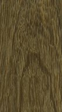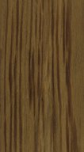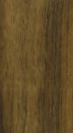
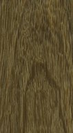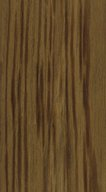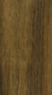") 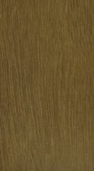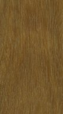
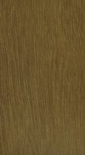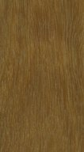") 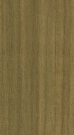
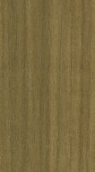

") 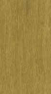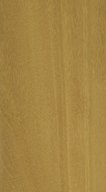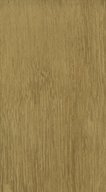
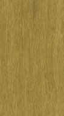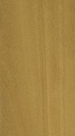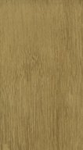


") 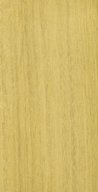
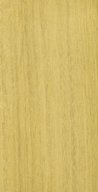